Annual Report of the Mysore Archaeological Department for the year 1937
Reading this page
p. 23 is the page number printed in the volume; PDF 391 is that page's place in the scanned PDF, the page to open in the source scan. The badge at the bottom right shows the page you are reading as you scroll: click it to show printed or PDF numbers, or both, and to jump to a page. ↑ Top takes you back to the start.
Footnotes are gathered at the end of the report, each with its printed page and number. Plates stand where the report binds them, at the end of the paragraph they interrupt; All plates, at the foot of the contents, shows them together.
Part I: Administrative
Staff; Tours; Exploration and Conservation; Epigraphy; Manuscripts; Numismaties; Publications; Library; Exhibition; Finance; The Work of the Department
There was no change in the staff. Dr. M. H. Krishna, M.A., D. LITT. (Lond.), continued to be the Director of Archaeology in addition to his professorial duties at the University.
The Director toured in the Heggadadēvankōte, Gunđlupet, Chāmarājanagar and Nanjangud Taluks of the Mysore District and Shimoga, Channagiri and Honnāli Taluks of the Shimoga District, and Harihar and Chitaldrug Taluks of the Chitaldrug District for the purpose of collecting epigraphs and information about architecture and also for inspecting the monuments for conservation purposes. The Assistant to the Director toured in the Bēlūr and Arsikere Taluks of the Hassan District and Chāmarājanagar and Gunđlupet Taluks of the Mysore District mainly for the study and collection of inscriptions.
Among the ancient sites studied were Chaunagiri, Chitaldrug, Kittūr and Halē-Ālūr, Of the monuments studied two deserve special mention. The Arkōśvara temple at Halē-Ālūr has numerous relievo sculptures of about the Chōla period.
The Rāmōśvara temple at Narasamaṅgala is a unique monument with some very fine sculptures. Its brick tower resembles the towers of the Nandi temple in many ways and suggests that the structure is more than a thousand years old. The conservation of monuments was attended to and the work of preserving the temples at Bēlūr and Halēbiđ was pushed on with the co-operation of the Public Works Department and of the Committee appointed by Government for their renovation.
The total number of inscriptions collected during the year is about seventy-five, the majority of which have been edited by the Assistant, Mr. R. Rama Rao, with the help of the Pandits and under the Director's instructions. Among the important finds may be mentioned an epigraph on the Dhvaja-stambha of the Kōśava temple at Bēlūr stating that the golden Khaga-dhvaja-stambha was set up by Jakkarasa.
1 son of Timmarasa, subordinate of the famous king Krishnarāya of Vijayanagar. Another inscription at the same temple records a grant made to some Śiva temple near Bēlūr by Ballāla I, the Hoysala king in 1106 A. D. The Basavanpur copper plates of the Punnād King Skandavarman, which were published as No. 53 of 1936, were purchased for the department.
An interesting manuscript obtained during last year was the “Memoirs of Hyder Ally from the year 1758 to 1770” by Eloy Joze Correa Peixoto, a Portuguese in Hyder’s service. Its faintly visible writing was completely copied and the manuscript was studied for review.
Manuscripts. Correa Peixoto, a Portuguese in Hyder’s service. Its faintly visible writing was completely copied and the manuscript was studied for review.
About fifty interesting coins were acquired for the departmental collection and 141 electro-type casts were got prepared for the coin show case of the Government Museum, Bangalore. A detailed study was made of the Pāndya coins.
During the year the Annual Reports of the department for the years 1933, 1934 and 1935 were published and the report for 1936 was prepared and sent to the press.
Publications. was prepared and sent to the press.
From various sources including the Government of India Archæological Department, about eighty-three publications were received
Library. as presentations or on exchange, among these being a set of the works published by the University of Washington on Anthropology and the Social Sciences ( vide Appendix D).
At the Sex-centenary celebrations of the Vijayanagar Empire at Hampi the department took an important part in the exhibition and the Director presided over the Historical Conference.
The receipts and expenditure of the department under budget heads amounted to Rs. 16,793-4-6 and Rs. 16,793-4-6, respectively ( vide Appendix E). A sum of Rs. 516-13-0 was realised by the sale of the departmental publications and photographs during the year.
The members of the staff and the Superintendent, Government Printing, Bangalore, co-operated enthusiastically in the production of the publications. The Director gratefully acknowledges the appreciative opinions and reviews that have been sent to him by various scholars and journals.
The work of the Department.
Part II: Study of Ancient Monuments and Sites
Maṭakēri
Situation
The village of Maṭakeri, Heggađaděvankōte Taluk is situated about 29 miles south-west of Mysore and at the confluence of the Tārakā and Kapilā rivers. About a furlong further up the Tārakā bridge and to the left of the main road between Mysore and Kārāpur, a cart-track leads to the place.
Situation.
Rāmēšvara Temple
History; Importance; Conservation
The temple of Rāmēśvara 1 at the confluence of the rivers appears to have been constructed in three different stages:
History. The lingā with the main temple housing it, but excluding the front porch may be assigned, at the latest, to the reign of Kulōttuńga Chōła whose inscription 2 has been found in the village. To this period may also be ascribed the Nandi, the balipītha and the dīpastambha, as also the five lingas and the Śańkaranārāyaṇa image enshrined in a row of cells at the north-western corner of the temple yard. The images of Durgā or Kāpālikā, Gaṇapati, Sūrya and Chandra kept in the navarańga of the main temple seem to belong to the same period.
The Pārvatī shrine with the beautiful image of the goddess, the mukhamanṭapa and the kalyāṇa-manṭapa belong to the Vijayanagar period.
The brick tower of the garbhagrīha, the compound wall and other brick structures within the area hail from the 19th century.
Though the shrines are all simple in plan and the walls almost rid of ornamentation, excepting for a few rude figures, here and there, the following features appear to be important. The base-ment cornice is of the old type as also the eaves which have a sharp curve. The navarańga of the main temple is approached by flights of steps guarded, on the east, by yālis and, on the south, by elephants. Inside the navarańga the four central pillars are interesting specimens reminding us of Chōła work.
The Pārvatī image is beautiful, though it has a pointed hooked-nose, lips of the archaic smile type and exaggeratedly large hips.
But the most interesting image in the temple is that of Śańkaranārāvaṇa. Though ugly in proportions, the type is rare and of great value since, like the
1. It has been briefly noticed by the late R. Narasimhachar in the Mysore Archaeological Report for 1913.
Veňkatěša figure, it furnishes another example of the Harihara form of images popular in the Chōła period.
The temple is a Muzrai institution but is much neglected. It deserves to be given a start in conservation by the removal of the trees and plants which are grown even on the main structures; if necessary, 'tree-killer' may be supplied. The monument, for the sake of the image of Šaňkaranārāyaṇa, may be declared protected and included in class III. The confluence is 'picturesque amidst wild scenery' and a much-frequented holiday resort.
Part II: Study of Ancient Monuments and SitesHeggađadēvanköte
Ancient Times
Chandranātha; Hoysaļa pillars; Mediæval Fort
Heggadadēvankōte is the headquarters of a taluk. The fact that the Tārakā river flows here and the road passes from the south towards Hupsir must have given some importance to the place in olden times, though there are very few ancient inscriptions. A re-study of its architecture, however, shows that it was a prosperous place as early as the Chōla and Hoysała times. It enjoyed perhaps a second period of prosperity under the Pāllegars until it was captured by the Mysore kings.
In the quadrangle of the taluk office is set up an image of Chandranātha which has the crescent symbol on its pedestal. The figure is seated in yōgāsaṇa and appears to be very old, possibly dating from about the 11th or 12th century A.D. It is said to have been found when the site of the overseer's lodge was excavated. Its damaged nose and upper lip have been mended in plaster. A Šrīvaishnava caste mark has been engraved on its forehead by bigots.
In front of the Varadarājasvāmi temple are to be found four potstone pillars of the lathe-turned and bell-shaped type. Very probably, they may have belonged originally to the navaraṅga of a Jaina Basti which must have been existing on the site of the overseer's lodge, where the image of Chandranātha is reported to have been discovered.
The mediaeval town which is about 300 yards square had a fort with four straight sides having corner and intermediate bastions. Mediaeval Fort. The wall about 15 feet high including the parapet above, was of earth and was defended by a deep outer moat. The main gate was near the Ūramundala-Āñjaneya temple and led to the chief street or Rājavidi which extended to the Lakshmī-Varadarāja temple just behind which was the west gate with its Kōtebāgilu-Āñjanēya temple. The Ūramundala Āñjaneya is a relievo figure in the striking attitude, about 4\frac{1}{2} feet in height. In the north-east corner of the fort are the ruins of a deep and large kalyāñi or pond.
Sōmēšvara Temple
History and General Description; Images
Close by the Kalyāñi pond stands a granite temple of Sömēšvara.
The húnga is perhaps an old one. But the rest of the temple including the garbhagrīha, sukhanāsi and navaraṅga, and the Vishṇu shrine on the north are all of granite and of the late Vijayanagar or Pāllegar times. The temple has no mukhamaṇṭapa. There is a porch to the south of the temple.
History and General Description. In the temple are now kept small rude images of Chandikēšvara, Vishṇu, Mahishāsuramardinī, Gaṇcēśa, Sūrya and two Nandis and a nāga stone—which are all of the Pāllegar times. In the navaraṅga is also kept an image of Pārvatī, about 4 feet high, showing the goddess standing on a hon pedestal. The image though fully ornamented and with its hands having abhaya, padma, mātaṅgaphala and dāna attitudes, is poorly made, its facial expression being made ugly by a broad nose and a curved mouth. One point about the image is that the horse-shoe-shaped tōraṇa is of the same stone showing perhaps that the Chōļa work was imitated in this respect.
Varadarājasvāmi Temple
History and General Description; Outer wall; Niches; Eaves; Relievo Figures; Sōmasūtra; Navaraṅga; Sukhanāsi; Garbhagrīha; Main Image; Lakshmī; Conservation
The Varadarāja temple is the largest and most important of the monuments in the place. It appears to have been constructed in different stages. The main temple consisting of the garbhagrīha, the sukhanāsi and the navaraṅga is an old granite structure of the 14th century. The pātālānkaṇa, the Lakshmī shrine, the prākāra and the clostered verandah are of the late Vijayanagar period.
History and General Description. The basement has octagonal and other cornices. The pilasters on the outer wall, while being surmounted by vase and cushion-shaped mouldings, have brackets above with ribbed ornamentation.
Outer wall. An interesting feature of this type of temple is that on the outer wall, the south-west and north faces of the navaraṅga, sukhanāsi and garbhagrīha have shallow ornamental niches with canopies bearing hon-headed kīrtimukhas and surmounted by boat-shaped śikharas. Between the sukhanāsi and the garbhagrīha on the outer side is a pillar arising out of a kalaśa and on the pilaster is a fine canopy with a śikhara.
The eaves have a sharp curve and bear a row of lion-headed kîrtinnukhas, while above the eaves is a row of lions and sea-horses. These horned sea-horses with crocodile snouts and fish bodies are an interesting feature peculiar to this type of temples.
Eaves.
Under the eaves is a rounded cornice bearing, here and there, relievo images of Hanumān, Garuđa and Lakshmī-Narasimha, Yogā-Narasimha, and wrestlers (perhaps Hanumān wrestling with somebody).
Relievo figures.
The sōmasūtra has a finely shaped lead out issuing from a lion's mouth. The north wall, particularly of the garbhagriha and sukhanāsi has a fine appearance.
Somasutra.
The navaraṅga which originally had four granite pillars with sixteen-sided long shafts and ribbed brackets has been strengthened later on
Navaranga.
by two additional pillars.
An open aṅkaṇa at the west end of the navaraṅga leads through the sukhanāsi doorway into the oblong sukhanāsi where the central beam
Sukhanasi. has a fine ornamental work on its under surface. The structure here, both on the inside and outside, shows attempts at chiscelling beautiful ornamental designs in low relief on granite pillars, beams, etc.
The garbhagriha ceiling has a rounded cornice and rows of garlands carved on the faces of the corner stones and is finely designed and flat with a creeper and a padma in the centre.
Garbhagriha.
In the sanctum stands a fine stone image of Varadarāja, about 6\frac{1}{2} feet high including pedestal and tōraṇa. The main image is that of Janārdana called Varadarāja. The god stands on a
Main image.
Garuđa pedestal with a small-sized consort on each side.
His hands are thus disposed: abhaya with padma, chakra, śaṅkha and gadā. Over the pilasters at the sides borne on ornamental brackets arises a fine tōraṇa with a beautiful creeper design and a high lion-headed top. It is supported by chakra on the right and śaṅkha on the left. In front of the image are metal coins of Vishṇu with consorts which appear to date from the late Vijayanagar times.
The Lakshmī shrine contains an image of Lakshmī of the late Vijayanagar period.
Lakshmi.
The surroundings of the temple are overgrown with vegetation. But the courtyard and the rest of the temple are in good condition.
Conservation.
The temple is an ancient structure with a beautiful image and deserves to be looked after. The peepul and other plants growing over the roof should be removed. The structure is quite sound and will not involve much expenditure. It may be given a compound wall all round
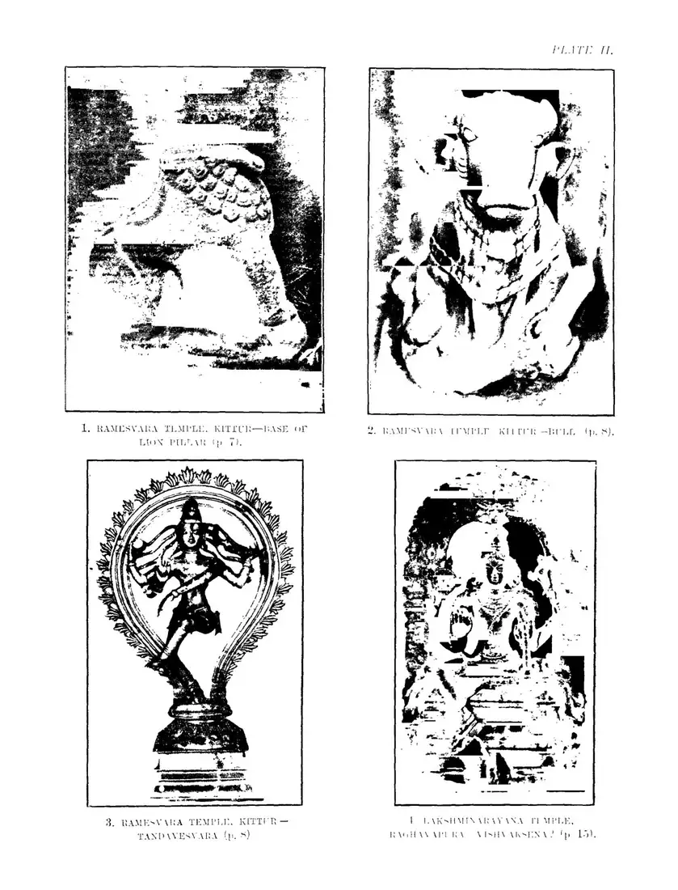
- RAMESVARA TEMPLE. KITTUR—BASE OF LION PILLAR (p. 7)
- RAMESVARA TEMPLE. KITTUR—BULL (p. 8)
- RAMESVARA TEMPLE. KITTUR— TANDAVESVARA (p. 8)
- LAKSHMINARAYANA TEMPLE RAGHAWAPURA — VISHVAKSENA? (p. 15)
and conserved as a second class monument. The yāgaśāla and pākaśāla for the temple may be constructed in the south-east corner of the enclosure. The priest must be told not to live inside the navaraṅga as he is doing now. The goddess' shrine may be provided with a battened wooden door to prevent the bats from entering.
Part II: Study of Ancient Monuments and SitesKittūr
Rāmēšvara Temple
History; General Description; Main Temple; Its Navaraṅga Doorways; Images; Minor Shrines; Nandi; Conservation
The temple of Rāmēšvara is the most important monument now standing in Kittūr. It has been briefly described in the reports of this department for the years 1913 and 1931. A study of its present structural condition along with inscription No. 56 (Epigraphia Carnatica IV, Heggadadevankote Taluk) would suggest that the temple was almost entirely rebuilt in the early part of the 19th century by Kempadēvājamma, mother of Alīya Liṅgarāj Urs. But in the course of its construction a large number of the old pieces of earlier days have been utilised. A detailed study would help us to classify these pieces as follows:—
The Rāmēšvara liṅga, the Mahishāsuramardinī figure in the navaraṅga, the dvārapālas of the south door, the large bull in the courtyard, the elephant and lion bases of pillars in the porches of the gateways can only be assigned to a period earlier than the Chōla. They come from the late Gaṅga period. The lion base of pillar (Pl. II. 1) indicates Pallava connections. Chāmundā suggests connections with the Nolambas who have given us a Chāmundā of similar design at Nandi and with the Chōla Chāmundā of Binnamaṅgala. The octagonal cornice of the garbhagriha basement, the sixteen-sided pillars of the navaranga, the two east pillars of the navaraṅga with their eight-ribbed sides, the navaraṅga eastern doorway with its low-relief sculpture of Yakshas, dancers and scroll work, the pillars of the east porch and particularly their capitals, the bali pithu pillar with its vase-top, and low relief sculptures appear to belong to the Chōla days or the 14th century; whereas the temple as it now stands with its stones marked in modern Kannada figures and its brackets made of pieces of old ornamented pillars and the numerous smaller sculptures in the navaraṅga and the Vishṇu shrine belong to the 19th century.
The Rāmēšvara temple is a granite structure facing east, standing in the middle of Kittūr. Its compound of modern bricks is entered by two small porches on the south and the east. These porches contain old elephant bases and fluted pillars mixed up with modern materials. In the compound are the main temple, the Pañchaliṅga shrine on the west, the Pārvatī shrine on the north and the Nandi shrine on the east.
The main temple consists of a garbhagrīha, a sukhanāsi with a middle cross beam, a navaranga of six pillars and a northern sanctum and an eastern porch of three añkaṇas and a southern porch of one añkaṇa.
Main Temple. The east doorway of the navaranga is an elegant piece of granite work. The south doorway is guarded by two Śaiva dvārapālas whose figures are peculiar. Their fanged mouths are open and their legs are crossed and their backs bent in a vigorous jumping attitude. Their broad feet, their hands, their muscular thighs and calves, their broad chests, etc., are clearly carved adding a touch of realism to their otherwise grotesque shapes. They are fine pieces of sculpture.
In the navaranga are a number of sculptured figures mostly belonging to the 18th or 19th century: Sūrya, Chandra, Gaṇēśa, Nāgas, etc. Three of the most interesting figures are: Annapūrnā seated with bowl in leit hand and ladel in right, Mahishāsuramardinī standing in samabhanga on the head of buffalo, and Bhringi with horse's head. In the north cell of the navaranga are kept three sets of copper images.
1. Tāṇḍavēśvara—an old image with a modern consort. (Pl. II, 3).
2. Chandraśēkhara and consort—modern.
3. Chandraśēkhara and consort—an old image in tribhañga , greatly worn out. The pose is fine. It may be acquired for the museum.
Behind the north cell with entrance from the outside is the Vishṇu shrine containing an image of Janārdana with consort and two copper groups of Veñkaṭēśa with consorts. The Pārvati shrine contains also a 19th century image.
Minor Shrines.
The Nandi facing Rāmēśvara is a beautiful piece of sculpture depicting a young bull of the “Baroda breed.” (Pl. II, 2). Its finely worked small snout, slightly curved horns and thin girths are peculiar. 1
Nandi. The village is said to be an inam of the family of Alīya Liñgarāj Urs. They may be exhorted to contribute liberally and keep the temple in good rapair by removing the plants from the compound and the roof.
Conservation.
Jain Basti
About 70 yards to the south of the Rāmēśvara temple is a tiled house which is serving as a basti for a standing image of Śtī Pārśvanātha. A large damaged
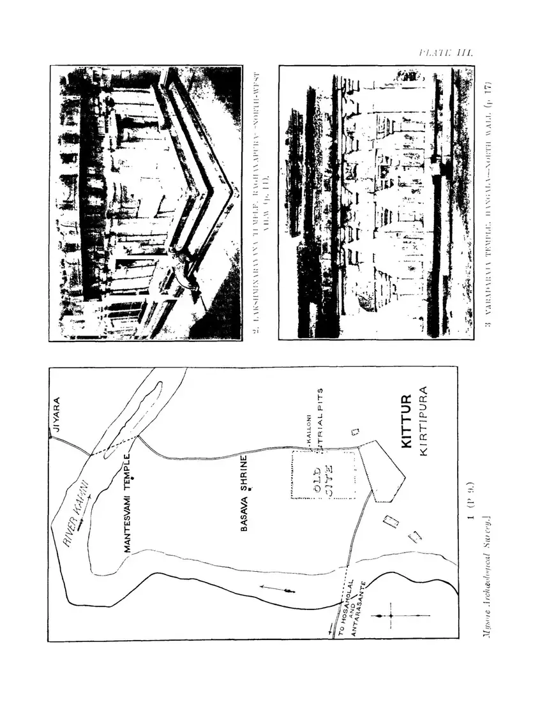
- LAKSHMENAMAM TEMPLE. RAGHIAMPIRA - NORTH-WEST VIEW (p. 17)
- VARADARAM TEMPLE. HANGALA - NORTH WALL (p. 17)
image is lying in front of it in the bushes. It has two hands and one face, not three faces as stated in M. A. R., 1913, P. 23 and appears to be the figure of a Šaiva dvārapāla, not Kubera, as stated by R. Narasimhachar. Its pair was found near the Basavaṇṇana-guđi.
Ancient Site of Kirtipura
Immediately to the north of Kittūr and extending about half a mile east to west and north to south is a high ground sloping towards the north. (See Pl. III, D.) It is cut into two by the cart-track leading to Jīvāra, next to which is the water course known as the Kalĵōṇi which reveals here and there walls and basements of bricks of large size and fine quality.
On the high ground to the east in the field of Dod laṇṇa and others small gold bits are said to have been found. All over the high ground can be picked up pot-sherds of reddish hue, brickbats and beads of various kinds and immertion corals made of red faience.
The field belonging to Mr. K. Anantaramaiah, Assistant Professor of the University, is especially rich in these finds. Two pits sank here in 1931 showed at a depth of about 24\frac{1}{2} feet a pavement of kiln-burnt bricks placed on edge.
The finds extend to Basavaṇṇana-guđi on the northern slopes where appears to have existed an old temple of about the Chōla times. Its round-headed hūga, damaged trap stone bull, round pillar of the balipītha and one dugger-bearing dvārapāla with a damaged face are yet standing without any roof or cover over them. The Šaiva image lying in the bushes near the Pārśvanūthu bisti appears to be the pair of this dvārapāla.
Excavation on and near Mr. Anantaramaih's field, particularly in the form of a trial trench carried diagonally across it and extending from the Kalĵōṇi north-westwards, is suggested.
Part II: Study of Ancient Monuments and SitesSargūr
Sōmēšvara Temple
General Description; Age
Sargūr was last visited in 1913 and brief notes were published about the monuments in the place in the report for that year.
To the north-east of the village close to the bend of the river Kapilā, stands the temple of Sōmēśvara which is in a dilapidued condition.
General Description. It has a garbhagriha, a sukhanīst and a hall of three aṅkaṇas north to south and only one east to west and a corresponding porch to the east.
There is very little evidence of any antiquity in the temple except a small mantapa of four pillars on the east which perhaps contained an image of Nandi. The pillars are of the round
Age.
2
Images
No heading in the body: this section starts at its printed page (10).
Chōla type with the pot moulding. On the north is an old damaged image of Durgā. Very probably the temple dates from the Chōla times, though it is unimportant as a piece of art work.
In the sukhanāsi are kept images of the Saptamātrikās, Gaṇeśa, Sūryanārāyaṇa, Durgā and a Nandi. There were also found one lingamudre-kallu, and three slabs, each about seven inches to nine inches square, bearing modern Kannađa inscriptions which are unimportant.
Lakshmī-Narasimha Temple
Age; General Description; Conservation. Inscriptions
The Lakshmi-Narasimha temple which is situated in the centre of the village is a structure probably of the 17th century. An inscription, E. C. IV, Hg. 49, which belongs to the reign of Kaṇthīrava Narasarāja Vadiyar mentions an endowment to the temple.
The temple contains a garbhagrīha, a sukhanāsi and a navaraṅga of nine aikaṇas and a porch and pātālānkaṇa, with a mahādvāra at some distance to the east. To the left of the shrine there is a smaller shrine of Lakshmi of about the same time. Though the doorways show good workmanship, they are of the early Mysore type. The Lakshmi-Narasimha group with its tōraṇa is all of one stone.
Archaeologically the temple is not important, but since it is the largest Hindu temple in the neighbourhood and Sargūr is a large prosperous place with a good Vaishṇava population and many weavers, the temple deserves a more generous muzrai grant. It has been recently repaired. The Lakshmi shrine may also be repaired, a compound wall added and the kitchen and the yāgaśāla constructed in the south-east corner of the temple. This would enhance the usefulness of the temple.
On the whole, the antiquities of Sargūr are a little disappointing. Two new inscriptions were found on the sides of the Hanumān and Garuđa images kept on either side of the sukhanāsi doorway of the Lakshmi-Narasimha temple.
Part II: Study of Ancient Monuments and SitesMuļļūru
Lakshmīkāntasvāmi Temple
Situation; General Description and History; Outer View; Basement; Wall. Eaves; Wall Images; Tower; Mukhamantapa and Navaranga; Main Image; Vāhanas; etc.; Garuđa Pillar; Oil Mill; Utsava Vigraha; Conservation
About two furlongs to the south of the village of Mulļūr stands on a high ground the temple of Lakshmikānta in the centre of what was originally a fort.
Situation.
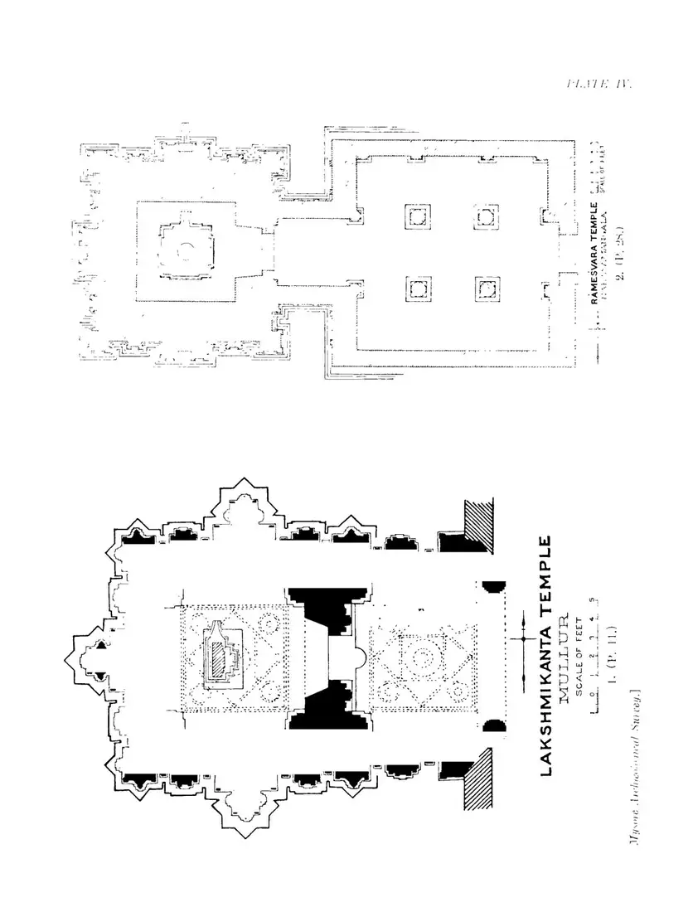
The structure as it stands has an ornate garbhagriha of soapstone in the Hoysaļa style and a navaraņga and mukhamanṭapa (Pl. IV. 1) of granite evidently constructed about 1625 A. D. when the lamp pillar and gateway were put up as shown by an inscription upon the lamp pillar.
Outer View. The outer view of the Hoysaļa portion is peculiar since it has a square shape with the centre of each side and each corner having a star-shaped projection.
Basement. The basement is made of five cornices of the unworked dentil kind most of which were intended to receive leaf ornamentation or makara heads.
Wall. The wall is divided into the upper and lower portions by an eaves-shaped dentil cornice with nail-headed drops. The upper portion of the wall has towers borne on single and double pilasters and having various interesting Hoysaļa shapes.
Eaves. The eaves have dentils and nail-headed drops.
The general look of the exterior is highly interesting in a country which is comparatively bare of fine work.
Wall Images. The large images on the walls are, commencing from the south-east :—
Dancing Kubja
Lakshmī-Nārāyaṇa with female attendants
Tāṇđava-Gaṇapati with drummers
Nārāyaṇa standing—(šankha, padma, gadā and chakra)
Mōhinī
Three partly worked figures, of which the central one is perhaps Dhan-vantari ·?)
Kōdaṇđa-Rāma (partly worked)
Kēśava (partly worked)
Pāṇduraņga
Tāṇđava-Sarasvatī
Yaksha, dancing
Lakshmī-Narasimha
Ugra-Narasimha at back of temple
Vishṇu standing
Mōhinī and monkey
Sūrya (unworked)
Amara-Nārāyaṇa
Bali and Vāmana
Trivikrama Môhinî with mirror
Arjuna shooting fish
Näga with shield and sword
Indra on elephant
Dakshipāmürti
Vēnugöpäla
Kālingamardana
Brahma seated, holding rosary and phala
Lakshmî-Nārāyaṇa on Garuđa
A couple at love
Vishnu standing, unfinished
Rati with attendant
Mammatha
Kôdanđa-Rāma or Lakshmaṇa
Above Hayagrīva under the tower is an image of Vēnugöpäla.
The tower is said to have been standing about 20 years ago and to have been struck by lightning and brought down.
Tower.
The mukhamanṭapa is one of three anikanas north to south and one cast to west and is a 17th century structure. So also appears to be the navaraṅga inspite of its cylindrical roughly shaped granite pillars.
Mukhamantapa and Navaranga.
The sukhanāsi, however, with its ornate indented square pilasters and its ceiling with a shallow padma dome and a padma pendant, and the garbhagriha with its ornate jambs, its Gaja-Lakshmî lintel and the cornice above and also the garbhagriha ceiling with its padma dome and pendant are all pure Hoysaļa work.
In the sanctum on a Garuđa pedestal stands an image of Nārāyaṇa (5½') holding šankha, padma, gadā and chakra and supported by a consort on each side. The tōraṇa and the group generally are much less ornate than the usual Hoysaļa work and could probably be assigned to an earlier date. The shape of the symbols and the plain nature of the tōraṇa, the conical kirīṭa and the show of folds on the drapery are unusual to Hoysaļa work and common to Chōļa work. Perhaps the Hoysaļas, found the image of earlier times and built a fine temple over it.
Main Image.
In the navaraṅga are kept the vāhanas of the deity, viz. , Hanumān, Garuđa and the Horse, an image of Nammālvār and two Nāga groups.
Vahanas, etc.
The pillar in front of the temple is a lofty one of 1625 A.D. and about 30' high. It is of good workmanship and massive.
Garuda Pillar.
There is a stone oil mill in the south-east corner of the main temple.
Oil Mill.
In a recently built house in the village is kept a metal (bronze) image of Janārdana (padma, chakra, šankha and gadā) which appears to hail from the Choła times as suggested by the general slimness of the image, the disposal of the fingers holding chakra, the ears, the kirīṭa and the drapery. Very probably it was the original utsava-vigraha of the temple. It has a particularly fine face, though it is slightly worn out. His consorts are, however, unmistakably of the Pāllegār days.
The plan of the temple is peculiar. The villagers are prepared to give a contribution for the restoration of the tower about which they are very keen. Since there is no such ancient and ornate structure in the neighbourhood, the temple is worthy of preservation as a third class protected monument. Government may consider its conservation.
Conservation.
Part II: Study of Ancient Monuments and SitesKõtekere
About three miles north of Bēgūr is the village of Kōtekere in the Gunđlupet Taluk. There are four temples in it, riz. of Vēnugōpāla,
Temples
Vēņugōpāla Temple
General Description; South Cell; North Cell; Main Cell; Main Image
The largest of the temples is that of Vēnugōpāla. It is entered by a large granite mahādvāra. The building has a narrow mukhamaṭapa of 1×3 añkaṇas and a navaraṅga of the Vijayanagar type with pillars bearing images of Yōgānarasimha, Garuđa and Hanumān and having three towered cells at the back. The south and north cells have a sukhanāsi and a garbhagrīha.
In the south cell is a small stone image, 3' high, of a seated goddess (abhaya, padma, padma and dāna) with a swan on the pedestal.
South Cell. The vehicle must be a mistake for padma.
In the north cell are the images of Nammālyvār and Rāmānuja.
North Cell.
The main cell which is guarded by two relievo dvārapālas has two plain sukhanāsis. The main image is that of Vēnugōpāla with a
Main Cell. consort on each side and Garuđa and cows on the pedestal.
The tōraṇa is peculiar and has Ādiśesha spreading his hood over the god's head. The front hands hold the flute, while the back hands hold by the tip of the fingers chakra and šankha.
Main Image.
Stucco Image
Other Temples : Chandramaulēšvara and Gaņeśa; Rāmēšvara; Chaluvarāya
No heading in the body: this section starts at its printed page (14).
Above the dvārapālas and over the doorway is a stucco of Raṅganātha with Śrī, Kāvērī and Gautama. The temple is said to have been constructed by two Vaiśyas, Chinnada Kōmāla Seṭti and Beļļiya Kōmāla Seṭti and their families. It is a large structure in good condition. The three vimānas over the temple are peculiar in a Vijayanagar structure.
OTHER TEMPLES.
The Chandramaulcšvara and Gaṇeśa temples are small one-aṅkaṇa structures having a triśūla and a Gaṇeśa image, respectively.
Chandramaulesvara and Ganesa.
The Rāmēśvara temple is an insignificant structure of Vijayanagar times consisting of a garbhagriha, sukhanāsi and navaraṅga of six aṅkaṇas. The structure is very much dilapidated.
Ramesvara. The Chaluvarāyasvāmi temple is a simple mono-celled structure with a brick tower above it and a mukhamaṇtapa. Instead of the image a pair of feet on a high pedestal is enshrined in the cell.
Part II: Study of Ancient Monuments and SitesRāghavāpura
Rāghavāpura is a road-side village about six miles to the north of Guṇđlupet on the Bangalore-Oty Road. It is a fine little place with a considerable antiquity.
Lakshmī-Nārāyaṇa Temple
General Description; Wall; Eaves; Sōmasūtra; Outer sukhanāsi; Vishvaksēna; Garbhagriha : Main Image; Other architectural features
The largest temple of the village is called the Lakshmī-Nārāyaṇa temple and occupies an important place in the centre of the village and is visible from the road. It has no tower but has a garbhagriha, two sukhanāsis, a navaraṅga, a prākāra wall and a dvāramaṇtapa. (Pl. V, 2). The temple consisting of the grabhagriha and the inner sukhanāsi is almost a twin of the corresponding part of the Varadarāja temple at Heggađadēvanakōtē. Its outer wall has several interesting features.
The basement is formed of three finely twisted cornices among which the octagonal cornice is conspicuous. The wall has ornamental niches bearing ornamental śikharas of the boat or square shape and pilaster-bearing kalaśas, while at regular intervals its face is relieved by square-planned pilasters, bearing biscuit-shaped mouldings. (Pl. II, 2). These pilasters have ornamental creeper ornamentation, above which are, in order, the pot-shaped, the biscuit-shaped and the lotus-shaped mouldings, and the ribbed bracket.
The eaves are sharply curved and relieved at every two or three feet by lion faces from which flow out creeper designs which appear to be leading on to kîrtimukha arches. Above the eaves on the sides of the roof are rows of lions, şarabhas (long snouted and having horns) and makara heads. The roof has now disappeared.
Eaves. On the north is a sõma-sûtra , shaped like a tiger from whose open mouth springs the creeper which conducts the water out.
Somasutra. There is a fine image of Vishvaksêna (?) seated in sukhâsana and placed on a Garuđa pedestal in the north cell of the outer sukhanâsi and is an example of high class workmanship. (Pl. II, 4).
Outer Sukhanasi Vishvaksena. It is only about 4 feet high and the god (who holds abhaya with padma, chakra, şanîkha and gadâ) has his foot resting upon a lotus flower whose leaves and stalk are also seen. The dignified and peaceful face, the beautiful contour of the body, the finely contrasted chest and waist and the elegant limbs, the drapery with conventional folds and subdued ornamentation show that the sculpture is not inferior to the best Hoysała workmanship. The tiara is conical instead of rising in tiers and the tõraṇa is well designed, though not exuberantly carved. Since three of the fingers of the left hand holding the mace are broken, it is not being worshipped. Any museum ought to be proud to have it in its collection.
In 1321 A. D. Nārāyaṇa Daṇāyaka made the village which was originally called Gommaṭaha||i into an agrahāra named Rāghavāpura after his father Rāghava Daṇāyaka and set up the inscription which is about 80 yards to the east of the temple. He appears to have set up the soapstone image of Nārāyaṇa (şanîkha, padma, gadâ and chakra perhaps since he bore the god's name. The image stands in samabhaṅga with a consort on each side under a tõraṇa bearing the ten avatāras a after the usual Hoysała fashion. It has a hooked nose and a mouth whose corners are turned up giving the centre of the upper lip an arc-like projection and the mouth a kind of archaic smile. This smile is characteristic of the images produced in the early Vijayanagar period. All the three gods wear visible lower clothes and one of the goddesses has a breast-band. This shows that the influence of the Dravidian style was already becoming conspicuous in Hoysała sculptures. Among the ten avatāras, Vēnugōpāla takes the place of Buddha between Balarāma and Kalki.
The dome over the head of the god bears a shallow padma. The inner sukhanâsi has the characteristic partition beam and the underground cellar with its slab sliding on grooves. The outer aspect of the manṭapa has nothing remarkable. But the pillars inside are peculiar. Out of the square
Other Architectural Features.
bottom rises an octagon ornamented with petal designs and from it arises a slightly tapering cylinder which is surmounted by a bracket bearing ribbed ornamentation. The prākāra wall of granite appears to have been intended to make the front into a large cross-manṭapa with a verandah around the temple serving as a kattale-pradakshṇa. Corresponding to the sōmasūtra of the main temple this verandah has an outlet for water which is made to fall upon a pot-bellied relievo figure which appears to represent either Nārāyaṇa Danāyaka or his father. The prākāra has on the south wall a pierced stone window. Outside the mahādvāra there is a 'T' shaped dvāramanṭappa with three sets of steps guarded by lions from whose mouths spring ornamented creepers. The pairs on the north and south are remarkable for their fine execution.
Lakshmī Image
No heading in the body: this section starts at its printed page (16).
In the sukhanāsi are kept the images of Nammālyār and Bhāshyakār which are of a later period.
In the Vijayanagar period the south portion of the outer navaranga received the image of Lakshmī. The goddess is seated in padmāsaṇa with drapery showing breast band and bears the archaic smile. Her hands are in abhaya, padima, padima and dāna with the cross designs on the palm. The tōraṇa has bird-like makaras from which spring forth a creeper, etc.
Rāmēšvara Temple
Lakshmaṇa-samudra
No heading in the body: this section starts at its printed page (16).
Nārāyaṇa Danāyaka appears to have also provided the village with a Śiva temple near the north gate of the old fort wall leading towards the tank. It is only slightly east of north to the Vishṇu temple. It has a garbhagrīha of one anikaṇa and a porch of three, with cylindrical granite pillars as in the dvāramanṭapa of the Vishṇu temple. It contains the Rāmēśvara linga and a few small sculptures, the most interesting of which is one of Mahishāsuramardinī standing in samabhanga on the head of a buffalo as at Nandi, Binnamangala and Kittūr. The pose is peculiar.
To the north of the village is a long, narrow and deep tank called Lakshmana samudra by Nārāyaṇa Danāyāka and provided with three shrines, one of which bears Gaja-Lakshmī on the lintel and evidently hails from the Hoysaṭa times. It obtains its water from the rainfall on the hills to the west and has been useful for irrigation.
Near the Rāmēśvara temple appears to have been the old north gate or water gate of the village and here are a large number of slabs some of which bear māstikals and vīragals among which may be mentioned a reliet of Rāvaṇa with ten heads and four hands. A new inscription of nine lines engraved on a granite slab, about 4½" × 3". was also found. The characters are of the 16th century.
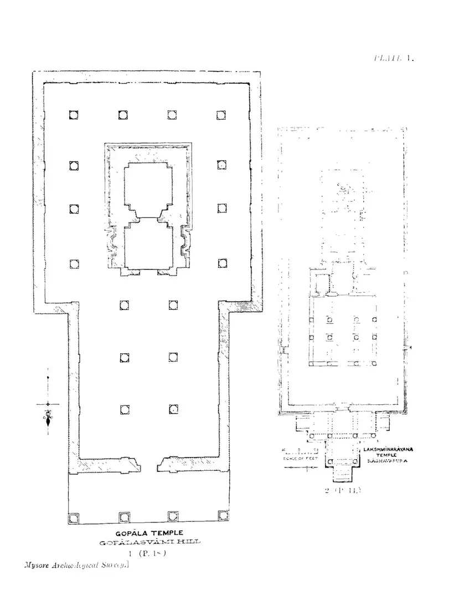
- PLAT. I GOPĀLA TEMPLE GOPĀLASVÁMT HILL 1 (P. 1*) 2 (p. 14)
Part II: Study of Ancient Monuments and SitesHangaļa
Varadarāja Temple
Description; Outer Walls; Eaves; Main Image; Mādhava; History of Temple; Conservation
Hangala is a prosperous roadside village about 6 miles to the south of Gundhupet on the Mysore-Oty Road. The most important monument in the place is the temple of Varadarāja.
It has a garbhagriha, a sukhanāsi, two four-pillared inner navaraṅgas and a narrow manṭapa in front. Structurally it belongs to at least three periods.
Description. The garbhagriha and sukhanāsi have worn out octagonal cornicos on their basement and their outer walls are decorated with a number of niches and canopied pilasters. But the tops of these canopies have generally horse-shoe-shaped domes with interesting floral and other ornamental designs and definitely horse-shoe-shaped inset spaces. (Pl. III, 3). Among the ornamental designs are also found warriors either defending themselves standing back to back or fighting their enemies.
The eaves are sharply curved and have rows of horse-shoe-shaped kīrtimukhas either worn out or partly worked. This portion gives the impression of much antiquity and perhaps is to be assigned to the 11th century or even earlier. Some of the motifs remind us of Nandi more than of Binnamaṅgala and it is not impossible that this portion may be late Ganga instead of Chōla.
Main Image. The image which now stands in the sanctum is that of Janārdana with abhaya-hasta and is generally called Varadarāja. (Pl. VII, 5). The image which is very much like that in Raghavāpura is more beautiful and has no archaic smile, being perhaps carved in the days of Narasima III Ballāla whose Tamil inscription is found on the basement cornice to the north of the sukhanāsi. This Hoysala image does not appear to have been the original image of the temple.
Could it be possible that in this sanctum originally stood the image of Mādhava (Varadarāja) now kept in the navaraṅga along with two images of Nammālvār? The image has abhaya-hasta and is in meso-relief. It now stands against the south wall of the inner navaraṅga. It is not very beautiful but it reminds us of the large image of Mādhava kept in the Madhukēśvara temple at Banavāsi. Its hands are thus worked: front right - abhaya with padma, the gadā being shown in the field to the right; right back and left back holding chakra and saṅkha with two fingers: left front-the image appears to hold a lump of butter, which is very peculiar and has no parallel.
3
Since images of this type appear commonly in the temple at Talkāđ and at Banavāsi, the date 10th century may be suggested for the
History of Temple. Since images of this type appear commonly in the temple at Talkāđ and at Banavāsi, the date 10th century may be suggested for the image and this may also be the date of the garbhagrīha and sukhanāsi. The inner navaraṅga appears to be definitely of the Hoysala period since it has round cylindrical pillars with wheel-shaped mouldings and domed ceiling and a doorway with projecting top cornices and indented square pilasters. About 1300 A.D. in front of this navaraṅga stood very probably a small porch with two sixteen-fluted pillars. These appear to have been used later in the Vijayanagar days for the south porch of the outer navaraṅga which with its pillars of cubical mouldings and octagonal connecting shafts and its eastern porch of a similar character is of about the 16th or 17th century. A new inscription was discovered on the outer octagonal cornice on the north side of the inner navaraṅga referring to the erection (?) of the tower in the year Šukla. The brick vimāna which now stands over the garbhagrīha could thus perhaps be assigned to about the year 1629 A. D.
The temple is said to be leaky and the roof in the south-west corner of the navaraṅga requires to be repaired. The compound requires
Conservation. to be cleared of vegetation. The temple may be proposed to be included under Class II.
Part II: Study of Ancient Monuments and SitesHimavad-Gōpālasvāmi Hill
Gōpālasvāmi Temple
Situation; Age; General Description; Eaves
The Himavad-Göpālasvāni hill which stands directly to the southwest of Hangaļa is reached by a bridle path, the distance from
Situation. Hangaļa being about seven miles to the temple on the top of the hill. The chief object on the hill top is the temple of Vēnugöpāla which faces north.
It appears to be mainly a structure of the late Hoysaļa times to which additions were made in the Vijayanagar period.
Age.
The original portion consists of a garbhagrīha with its outer wall pilasters having cushion-shaped top mouldings, sukhanāsi, and a
General Description. large hall of six cylindrical pillars with ribbed brackets. (Pl. V, 1. It appears to have been open towards the south. In front of this hall was a mukhamaņtapa of one ankana by three borne on cylindrical granite pillars.
Over the upper part of this manťapa is a shortly curved set of caves bearing kīrtimukha ornamentation with a band above it carved with
Eaves.
a procession of lions and šarabhas as at Heggađadēvankōte
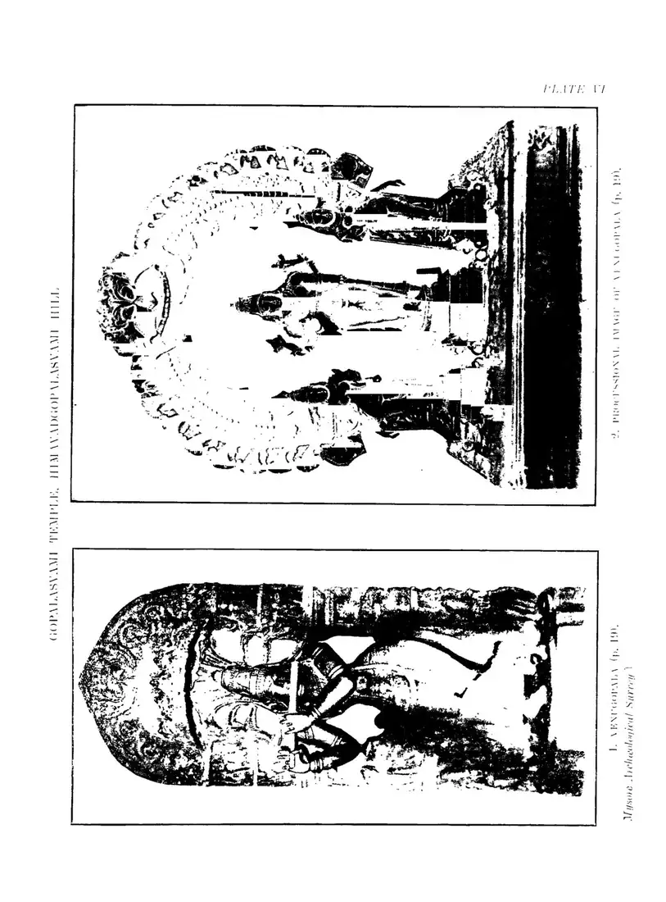
- VENCGOPALA (p. 19)
- PROFTESIONAL DRAWT OF VENCGOPALA (p. 19)
and other places in this area where we come across temples of the type having motifs suggesting affinity with the Chōla ones.
But in view of the fact that the rest of the temple is Hoysala and that there is no other Chōla vestige in the neighbourhood and in view also of the occurrence of a complete temple of this type at Terakanāmbi 1 where occur these motifs profusely on monuments built by the Ummatūr Chiefs, the inference has to be made that the sharply curved eaves and the bands of lions and śarabhas were features copied by the late Hoysalas after their conquest of and contact with the Tamil country. The brick tower is of the Vijayanagar period.
In the navaraṅga there are three niches containing Garuda, Rāmānujāchārya, Vishvaksēna, Nammālvār and Hanumān.
Navaranga.
The sukhanāsi doorway is guarded by dvārapālas of poor workmanship. Over the lintel is a Garuda-vāhana group flunked by Nammālvār on the right. In the garbhagriha which has a kattalepradakshiya stands an image of Vēnugōpāla (65' high) whose modest ornamentation, drooping end of the dhoti , straight-sided kirīta and general lack of excellence of workmanship make
Main Image.
The image of Vēnugōpāla depicts the god in the usual posture as standing cross-legged and playing on the flute, while the cowherds, cowherdesses and cows listen intently. (Pl. VI. 1. The tōraṇa is serpentine and has not the ten avatāras. The utsara-rigraha is a good specimen of the Vijayanagar period. (Pl. VI.2).
From the top of the temple and also the new forest lodge, called the Vēnu Lodge, fine views are obtained of the surrounding country. The Prospect from the Hill. Wynād jungles stretch to the west and beyond the southern valleys rise the magnificent Blue Mountains. The eastern view is obstructed by the Mādigitti hill. To the north stretches the Mysore District with all its hills and plains including the Chāmundī hill.
Part II: Study of Ancient Monuments and SitesGuṇđlupet
Vijayanārāyaṇa Temple
Garbhagriha; Eaves; Sōmasūtra. Main Image; Navaraṅga; Kattale Pradakshipā; Materials of the Paravāsudēva Temple : Porch; Images ; Tower; Conservation
The three stages of the architectural history of this temple have been mentioned in the Annual Report of this department for 1934. Here a more detailed study of the temple has been made with a view to supplement the account already published.
3 4
The garbhagriha and the long sukhanāsi with a middle cross beam have a character of their own. On the outer walls we see the Garbhagriha . the octagonal cornice and the basement, the pilasters bearing vase and pillar-shaped mouldings, shallow niches surmounted by canopies of boat-shaped šikharas and kalaśas of the indented square type bearing ribbed ornamentation and supporting pilasters with ornament top.
The eaves have a sharp curve and bear ornamental kīrtimukhas. Above there is a frieze of lions and šārdūlas.
The sōmasūtra is shaped like a tiger face from which shoots out a tapering ribbed duct.
Somasutra.
In the garbhagriha, under a shallow padma dome with a central drop and on a Garuđa pedestal stands the image of Vijayanārāyaṇa, correctly Janārdana. The image is a fine one, more than six feet high from the floor, and on the serpentine tōraṇa we have the ten avatāras including the Buddha. There is little doubt that this portion is a Hoysaļa structure built in imitation of Chōļa-Draviđian work.
In front of the sukhanāsi there is a large navaranga with a plain floor and a long ceiling of the central aisle relieved only by a padma in the middle. The pillars and pilasters are peculiar: while the pilasters have ribbed brackets, the pillars have sculpture-bearing cubical mouldings connected by shafts having 32 pointed stars. Over the pilasters on the architraves above the beams of the navaranga hall runs a row or sculptured band bearing lions, šarabhas, etc. It is difficult to escape the conclusion that this portion dates from the late Hoysaļa period, i.e., somewhere about 1300 A. D.
(Connected with the navaranga and running around the temple is the kattale-pradakshinā . In front of the navaranga was originally a manṭapa of 1 x 3 ańkaṇas.
Kattale Pradakshina.
When the Paravāsudeva temple fell into ruin about 20 years ago its mukhamanṭappa was removed and built as the pātālāńkaṇa of the Vijayanārāyaṇa temple. The images of Paravāsudeva, of Lakshmī and of Ānđaļ and also two groups of metallic images belonging to that temple and one stone group of Ālyārs were brought over and housed in the navaranga hall of this temple.
Materials of the Para-vasudeva Temple : Porch; Images.
The brick tower has an oldish look and is possibly of the late Hoysaļa times.
Tower.
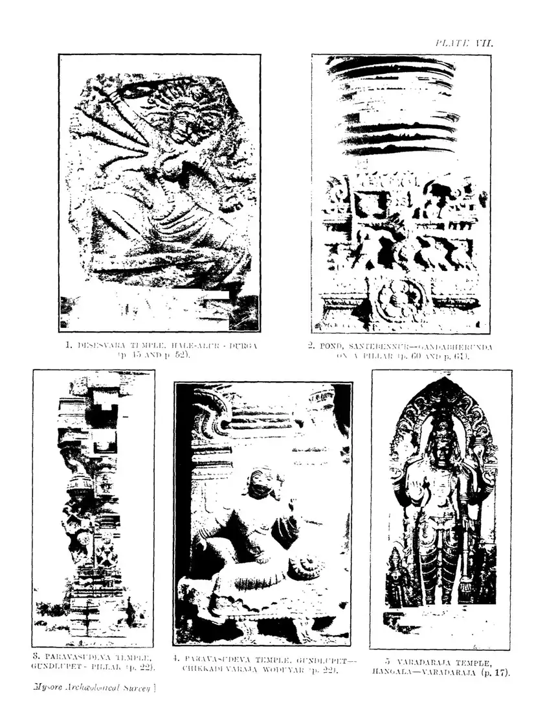
- DESISVARA TEMPLE, HALE-ALUR - DURGA (p 15 AND p 52)
- POND, SANTEBINNUR—GANDABHERUNDA ON A PILLAR (p. 60 AND p. 614)
- PARAVASUDMA TEMPLE GUNDLUPET - PILLAR (p. 22)
- PARAVASUDEVA TEMPLE, GUNDLUPET— CHIKKADI VARAJA WODIYAR (p. 221)
- VARADARAJA TEMPLE HANGALA—VARADARAJA (p. 17)
Cited in the text: p. 17 ↩, p. 22 ↩, p. 22 ↩, p. 45 ↩, p. 52 ↩, p. 60 ↩, p. 61 ↩
The tower is leaking and needs to be repaired. The kattale-pradakshiṇā is being used as the pākaśālā , yāyaśālā and the store rooms.
Conservation.
Separate rooms for these must be constructed to the south-east of the temple or if that is not possible at least in the field behind the temple. The outlet of water from the kattale-pradakshiṇā should be repaired. Probably it is near the sōmasūtra or in the north-east corner of the kattale-pradakshiṇā .
Rāmēšvara Temple
Comparison with the Vijayanārāyaṇa Temple; Conservation
The following account of the temple may be taken as supplementing the one already published by the department. 1
About a mile to the east-north-east of the Vijayanārāyaṇa temple stands the old temple of Rāmēšvara which, in many features, resembles the Vijayanārāyaṇa temple. It has a grabha-grīha, a sukhanāsi and navaraṅga and a single-añkaṇa porch on the south and also on the east. Its outer wall has the octagonal cornice, the niches, pilasters bearing ornamented biscuit-shaped mouldings, sharply curved eaves with rows of kīrtimukhas bearing sculptures of gods, dancers and wrestlers, rows of fish-tailed lion-headed sea-horses and makara-heads with warriors inside them. These features have a definite Chōla look, though perhaps the art is to be attributed to the Hoysala who might have imitated them. The figure sculptures are shallow and fine with the drapery showing and with stepped kirīṭas. The brick tower appears to be of the early Mysore days. In the porches and in the navaraṅga the pillars have long shafts bearing finely worked thirty-two flutings, while the brackets have the ribbed ornamentation. The lower cubical moulding of each pillar has sculptured images, rudely shaped but expressive and in the corners above these mouldings are the conventionalised hoods.
The temple is intact but is surrounded by marshes which are impassable in the rains. An approach should first be made to the temple and, if possible, worship revived. The foot-prints of cheetas could be seen in the navaraṅga which is covered with mud.
Conservation.
The front beam of the east porch is cracked and is in danger of collapsing unless a support is given immediately.
Over the south door above the cornice is a Kannaṇa inscription measuring 2\frac{1}{2}' \times 4'' (characters about 3'' square). It is perhaps of the 14th century.
Paravāsudēva Temple
On page 52, M. A. R. 1934 has been described an image of Chikkadevarāja Ođeyar on the inner face of the second pillar to the south-west of the sukhanāsi door way. It has now been illustrated in Pl. VII, 4, and a pillar of the porch now set up in the porch of the Vijayanārāyaṇa temple in Pl. VII, 3.
Part II: Study of Ancient Monuments and SitesTriyambakapura
Triyambakēšvara Temple
Situation; General Description; Main Temple; Kalyāṇamaṇṭapa; Verandah; Porches; Homogeneity of Structure; Chandraśilā; Age of Temple; Pārvatī Shrine
Triyambakapura is a small village about 1½ miles south-west of Terakanāmbi. It contains a large temple of granite dedicated to
Situation. Triyambakēšvara. (Pl. VIII, 1).
The structure is in a large courtyard with mahādvāras to the east and south.
General Description. Opposite to the east mahādvāra is a lofty monolithic pillar more than 40 feet high which is held in position by a small manṭapa constructed around it.
The main temple consists of a garbhagriha and sukhanāsi with the walls ornamented with niches and pilasters. But the pra-
Main Temple. dakshiṇā is covered completely. In front of the sukhanāsi there is a large navaraṅga hall of 5 x 5 añkanas. the pillars being thick with cubical mouldings connected by octagonal shafts and the faces of some of the mouldings having carved reliefs. Near the north wall of the navaraṅga in two niches are kept fine groups of images, one of Subrahmanya on a peacock and another of Rāma, Lakshmaṇa and Sitā listening to the Rāmāyaṇa read by Hanumān seated cross-legged with book in hand. (Pl. VIII, 2). On the south side of the navaraṅga is a Gaṇēśa image.
The south-west corner of the quadrangle has been converted into a large kalyāṇamaṇṭapa of heavy pillars.
Kalyanamantapa.
The verandah of the prākāra which surrounded the courtyard formerly has now disappeared, the wall itself being visible on the
Verandah. south on which side is said to have existed the King's Street.
The navaraṅga has a doorway to the south which has a porch of three añkaṇas. Its eastern doorway has a porch of six
Porches. añkaṇas, some of the pillars being composite ones. The eaves of this porch are heavy and 'S' shaped, while the rest of the eaves of the temple are sharply curved.
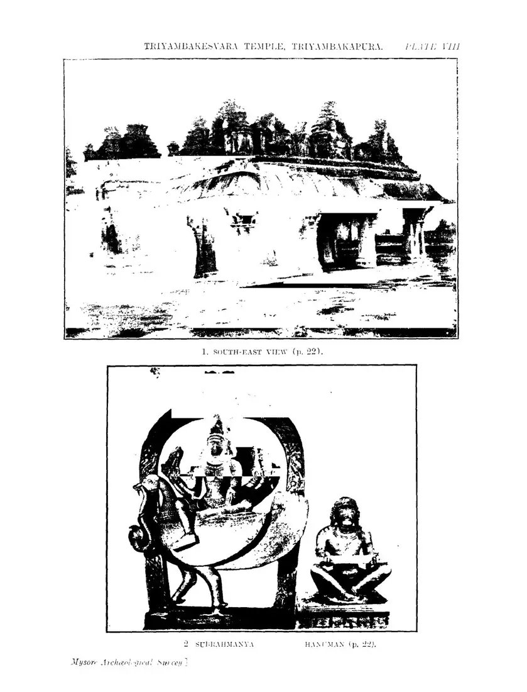
- SOUTH-EAST VIEW (p. 22)
- SUBRAHMANYA HANUMAN (p. 22)
That the temple must have been built at one and the same time is inferred from the fact that above the eaves the row of sea-horses runs unbroken around the main building.
Homogeneity of Structure. In front of the east porch and between it and the small bull is a large chandra-silā circular in form with an ornamental edge.
Chandrasila.
There is no doubt that the temple existed about 1490 A. D. when the Ummattūr chiefs put up their earliest inscription. But when exactly the temple was constructed is an open question. The garbhagriha and sukhanāsi suggest the late Hoysaļa period, while the composite pillars of the east porch and the high mahādvāras with their platain-bud pendants suggest the middle Vijayanagar period. Possibly the temple was constructed somewhere between 1250 and 1350. It is worthy of note that the cylindrical pillars with ribbed brackets, as in the Gōpālasvāmi temple at Terakanāmbi are to be found here. On the north basement slab next to the east mahādvāra on the outside is an inscription in two lines in mid-Vijayanagar characters (size 2'6" x 1½") reading:—
1. Honnamaṇi Nā
2. garasiru
This shows that the mahādvāra was constructed in the Ummattūr period. To the north of the main shrine is a smaller shrine whith a garbhagriha, sukhanāsi and a porch containing a figure of Pārvatī (abhaya, padma, padma and dāna). In its navaraṅga is kept an image of Nārāyaṇa whose shrine in the prākāra verandah is said to have been dismantled some years ago.
Parvati Shrine.
Part II: Study of Ancient Monuments and SitesTerakaṇāmbi
Terakanāmbi, 7 miles east of Gunđlupet, is an old place which had its importance during the Hoysaļa and Vijayanagar periods. In the 15th century it was ruled by the Ummattūr Pālļegārs who were conquered by Krīshṇadēvarāya. There are several temples in the place and the neighbourhood.
Lakshmī-Varadarājasvāmi Temple
History and General Description
Images; Conservation
No heading in the body: this section starts at its printed page (23).
The Varadarāja temple is a large structure which must have been built in at least two different stages. The garbhagriha and sukhanāsi with their ornamental pilasters, wall niches, octagonal cornice, sharply curved eaves, etc., is definitely of the Hoysaļa period. So also is the image of Varadarāja or Janārdana which is worshipped in the main cell. As in the other temples of this school a large many-pillared navaraṅga and a kattale-pradakshiyā with a fine mahādvāra bearing round and square pilasters, biscuit-shaped pillar mouldings, kalašas, etc., also belong to the Hoysaļa period, perhaps to a very late date, including the tall Garuđagamba.
An extension has been made of the navaraṅga on the south where is kept an image of Lakshmaṇa made in the days of Krishṇarāja Wođeyar II of Mysore. It was about this time the pātālānīkaṇa and repairs to the northern wall and other parts must have been made by Jagapati or some similar pāllegār.
In the navaraṅga extension are stored a number of images brought probably from some Šaiva temple, while in the sukhanāsi there are more than a dozen metal images some of which are rare and interesting : viz. .
Images.
Yasōdā suckling baby Krishṇa. (Pl. XVIII, 1).
Pārthasārathi group—the god standing with his right hand in chimnudrā.
Rāma group brought from the Rāma temple. It has the Sudaršana chakra at the back and a small image in front, etc.
The temple is a large old structure, but it is kept in an awfully bad condition. Several portions of the outer caves have fallen and the compound wall also is damaged. But the worst thing in the temple is that, here and there, in all manner of unnecessary places ( e.g. . in the mukhamaṇtapa) brick walls have been put up converting into cells or rooms. The navaraṅga is very dark and the inner part of the temple is inhabited by a large number of bats. The whole temple is very dirty. It deserves to be cleaned and set right. The local people state that a considerable sum of money has been collected by them for the temple. Part of this may be utilised for the improvement of the temple. The roof is leaking and needs repairs.
Conservation.
Gōpālasvāmi Temple
Value; General Description; Main Image; Conservation
About a furlong to the south-east of the Varadarāja temple and facing north stands the Hande-Göpālasvāmi temple.
The value of this temple in the study of the architectural history of the area is great since it is a rare case of a temple standing as originally built without extensions and additions. The temple is a typical structure of the South Mysore School of the Dravidian style constructed in the Hoysaļa days.
Value.
The temple has a garbhagriha and a sukhanāsi with a cross-beam and bears, on the outer walls, the niches, pilasters, octagonal cornice. lion-mouthed spout, and sharply curved caves bearing kīrtimukhas and row of sea-horses. Around this structure runs the kattale-pradakshiyā , while to their front is a large-pillared hall of 25 añkaṇas (5 x 5 each). In front of the temple is a mukhamanṭapa of 3 añkaṇas to which 2 sets of steps lead from the sides and are flanked by creeper-bearing lions. The pillars are all of granite and cylindrical and have ribbed brackets.
In the sanctum there is an image of Vēnugōpālā (6' high) standing on a pedestal with Garuđa flanked by cows. The god is supported by a consort on each side and has the Tamāla tree and the serpentine tōraṇa with the simhalalāṭa on the arch behind. The figure is a good one, perhaps better than the one on the Gōpālasvāmi hill, though very similar to it. Since the nose of the god is damaged he is not worshipped.
The outer wall is damaged in many places but the structure standing can easily be preserved and deserves to be preserved as an example of the School. The roof needs repairs and buts should be prevented from entering the building by a free use of wire netting. The god's nose may be properly repaired and worship restored in the temple.
Conservation.
Mūlasthānēšvara Temple
Situation; Age of Temple; Images
The structure stands in the field about 200 yards to the north-east of the Varadarāja temple and is its corresponding Šiva temple.
Situation.
The garbhagrīha, sukhanāsi and inner navaraṅga are of the Hoysalā period, while the outer navaraṅga and its eastern porch are the
Age of Temple.
works of Ummattūr Pāllegārs.
The temple has two sets of Umāmahēšvara images, one belonging to itself and the other to the Sōmēšvara temple.
Images.
Āṇjanēya Temple
History; Description; Image; Porch Pillars; Pillar Sculptures
The Āñjanēya temple which is just to the south of the Śrī Rāna temple faces north. It is an interesting structure of the days of Kanṭhīrava Narasarāja as seen by his inscription in the verandah. Kanṭhīrava acknowledges the suzerainty of Venkatapatirāya in 1640 A.D.
History.
The structure is an example of Mysore Art during the period. It contains a garbhagrīha, an open sukhanāsi and a manṭapa of three añkaṇas open in front.
Description.
The image is carved in the round, in the striking attitude and is very much better than the rude relievo images of Vijayanagar times.
Image.
4
The finest sculptural pieces in the temple are the four front pillars which have frontal ridden rearing lion brackets supported on sixteen-sided fluted minor pillars. The cubical mouldings bear carved images and are connected by sixteen-sided shafts having ornamental jewelled bands. Among the carved images may be noted the following :—
Pillar Sculptures.
Man with rudravīpā
Yogī with kamaṇḍalu
Hanumān
Hanumān bringing tidings of Sītā to Rāma
Vēṇugōpāla
Garuḍa
Kambha-Narasimha
Yōgānarasimha
Varadanarasimha-abhaya, chakra, śankha and dāna.
Narasimha pursuing Hiraṇyakaśipu
Ugra-Narasimha
Narasimha standing with kaṭihasta
Lakshmī-Narasimha
Lakshmī-Narasimha seated on the coils of Ananta
Lakshmī-Hayagriva
Matsya
Kūrma
Varāha
Nārasimha
Kalki
Vāmana
Buddha
Paraśurāma
Śrī Rāma
Varadarāja (abhaya, chakra, śankha and dāna)
Kāliṅgamardana
Vidyā-Gaṇapati
Baby Kṛishṇa moving on fours
Vidyādharī
The central ankaṇa of the verandah has a raised ceiling underneath which, on the architrave, rows of figures are carved :
Sculptures on Ceiling
East—
(a) Viśvāmitra receiving charge of Rāma and Lakshmaṇa
(b) Rāma slays Tāṭakā, Māricha and Subāhu
(c) Release of Ahalyā
South—
(a) Rāma breaks Šiva's Bow and he and his brothers are married
(b) Defeat of Paraśurāma
West—
Rāma, his brothers and their brides meet Daśaratha.
Part II: Study of Ancient Monuments and Sites › TerakaṇāmbiĀnijanēya Temple No. 2
To the east of the Ānĵanĉya temple, described above, there is another temple of Ānĵānēya just outside the fort wall, with a colossal image about 8 feet high. The image is finer than even Kanthirāya's Ānĵanĉya, its face being particularly realistic. Its forehead has only the vira-rekhā . Could it be ascribed to the Ummattūr chiefs? The portraits of a couple are carved on the inside of the navaraṅga doorway.
Part II: Study of Ancient Monuments and SitesHuliganamarađi
Veňkaťaramanasvämi Temple
Situation; Temple and Images; Ponds and Inscriptions
The Huliganamaraṇi hill from which a good view is obtained of the surrounding country is situated about four miles south-east of Terakañāmbi. The temple of Venkaṭaramaṇasvāmi on the hill is a structure of about the 16th century and has no architectural value.
It contains a garbhagriha, a sukhanāsi, a navaraṅga and a mukhamaṇṭapa. The mukhamaṇṭapa is said to have been constructed by one Dāsa Keśava Seṭṭi about 200 years ago. The image of the god Venkatēśa in the sanctum is a good one. In the sukhanāsi are kept several metal images of which the present ntsara-rigraha is said to be in use from about 1799 A.D. In the two cells on either side of the garbhagriha are enshrined Āṇdāl on the left and Gōdādēvi on the right. In the long and narrow cell to the north of the navaraṅga is kept an image of Vaikuṇtha-Nārāyaṇa.
There are two ponds called Pushkariṇi and Dbanushkoṭi on the hill. The rocks nearby are engraved with numerous inscriptions, mostly modern, giving the names of the devotees who visited the place in different times. Among these names two may be noted: (1) Nañjapparāja Urs; and (2) Rāyasa Narasaṇṇa.
4
Part II: Study of Ancient Monuments and SitesNarasamangala
Situation
Narasamaṅgala is a little insignificant village about 10 miles to the south-west of Chāmarājanagar and about 8 miles to the south-east of Terakaṇāmbi. Since it is an out-of-the-way place, it is accessible only by country cart-track and its importance has been hitherto unknown. To the south-east of the village is a large mound which is strewn about with wrecks of ancient architecture and sculpture. On its eastern slope can be seen in the ground relics of ancient brick structures. The bricks (12" : 6") are very finely made and look like wire-cut bricks. For the tower a thinner variety is used.
Situation.
Rämēšvara Temple
History; General Description; Outer View; Vimäna; Basement; Wall; Eaves; Tower; Sculptures; South Face; West Face; North Face; Sömasútra; Navaraňga Doorway; Navaraňga; Beams; Central Ceiling; Parašuräma; Gaņēsa; Sukhanāsi; Garbhagriha; Nandi
The chief monument standing in the place is the temple of Rāmalingēśvara. There is an inscription engraved on two slabs (E. ). IV Ch. 204 and 205) to the south of the temple. It refers to certain grants made to this temple of Rāmanāthadeva in the time of Vīraballāla III. But the temple itself is very much more ancient, being probably at least 400 years older. The structures in comparison with which it can be studied are the Bhoganandi temple at Nandi, the Chāvuṇdarāya Basti at Śravanabelagola, and the Kallēśvara temple at Talkād; while its sculptures should be studied along with those of Ellora. Thus C. 800 A.D. may probably be assigned to it. At this time this area was under the rule of the Gaṅgas and it looks as if we have come across here a genuine Gaṅga temple dedicated to Śiva.
The structure has a large garbhagriha, a narrow sukhanāsi, originally open and now provided with a smallish doorway, and a navaraṅga of nine aṅkaṇas. There is no porch or manṭapa. (Pl. IV, 2).
General Description.
The outer view is unimportant so far as the navaraṅga is concerned, (Pl. IX, 1) since it is enclosed by walls of bricks whose size appears
Outer View. to be 12" × 6" < 2½" But the outer wall of the garbhagriha and the vimāna above it are objects of great interest and deserve detailed study. It is remarkable that this brick structure with its elegant ornamentations and stucco sculptures has been standing for over a thousand years.
The general look of the vimāna suggests a parallel with the Dharmarāja-ratha of Māmallapuram and it appears to be midway between it and the Nandi temple. There can be little doubt that Pallava architecture had great influence upon the architect who designed this temple.
The basement has the ancient rounded cornice which is present in Pallava and Gaṅga architecture and the topmost basement cornice has rows of lions, sea-horses, makara-headed fish, etc.
Basement.
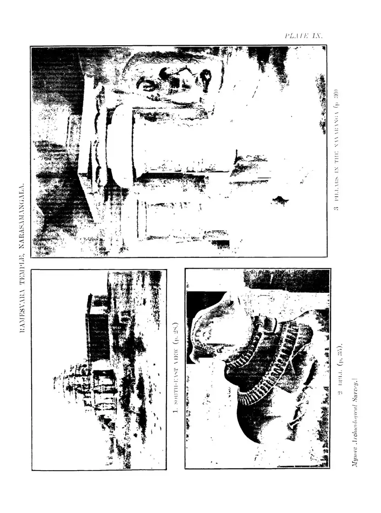
- SOUTH-EAST VIEW (p. 28)
- BRILL (p. 35)
- PILLARS IN THE NAVRANGA (p. 30)
Above the basement the wall is broken up by pilasters which are either square or octagonal. These octagonal pilasters are used more especially for shallow niches over whose canopies stand images of the great gods in various attitudes.
Wall.
Under the eaves is a row of Yakshas and Apsaras and the eaves themselves are ornamented with large and small horse-shoe-shaped kîrtimukhas with deep hollows in them.
Eaves.
The tower itself is composed of two series of turrets, each turret having two storeys. The corner turrets are square in plan with converging rounded domes, while the middle turrets have boat-shaped tops. The former are similar to the śikhara of Dharmarāja-ratha and the latter to that of Bhīma-ratha. Each face of each turret is ornamented with stucco images of remarkable elegance. Above the second set of turrets runs a cornice over which the corners are adorned by bulls as at Nandi. The śikhara which is supported on each side by stucco images as at Nandi again is also shaped like the Nandi śikhara.
Tower.
The sculptures, some of which are partly damaged, have a character of their our unusual in the other temples of the State. Their large chests and well developed breasts, their thin waists and low bellies, their slim limbs, their sparse ornamentation, their conventionalised but unobtrusive drapery and the dignified faces of such of them as exist make us find a parallel for them in the sculptures of Ellera and Māmallapuram more than in later sculptures.
Some of the more important stucco images on the outer wall and tower are these :
South Face. —(From the bottom upwards).—(Pl. XI, 1).
Andhakāsuramardana.
Śiva standing with foot on Nandi's head.
Two-armed Śiva seated.
Tāṇdavēśvara with Umā seated in state.
Gajāsuramardana (the pose is peculiar, since the face and chest are seen while the back of the hips is turned towards us).
Dakshiṇāmūrti with a smiling face.
West Face— (Pl. XI, 2).
Vishṇu on Garuḍa.
Vishṇu treading on Bali's head.
Ugra-Narasimha in two poses with Kayādū and Hiraṇyakaśipu.
North Face—(Pl. I, Frontispiece).
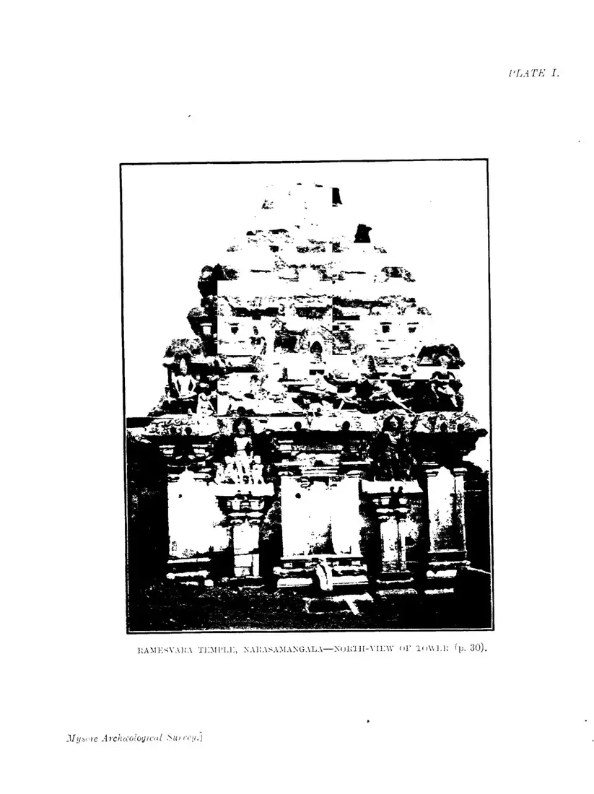
- RAMESVARA TIMPLE, NARASAMANGALA—NORTH-VIEW OF TOWLER (p. 30)
Cited in the text: p. 30 ↩
Šiva and Pārvatī.
Two-armed Šiva standing with phālāksha.
Durgā seated with Rākshasa on pedestal and flanked on the west by a Sun group and Durgā dancing and on the right by seated Brahma, dancing Vīrabhadra and seated Vishnu.
Seated Bhairavī.
Above, Brahma seated.
The sōmasūtra emerges from a tiger's mouth and has a Yaksha sitting on it.
Somasutra.
The navaraṅga doorway which is of very hard darkish stone (trap) resembles some of the earlier Chālukya doorways. On the right
Navaranga Doorway.
jamb, the dvārapāla is standing with his left elbow resting on the handle of his mace, while the dvārapāla on the left jamb has his body twisted so that his face and the back of his hips are both visible. He has trishūla in the right upper hand. The jambs and the lintel piece have each three scroll bands in the convolutions of some of which are flowers, Yakshas, lions, yālis, monkeys and swans.
On the outermost panels of these jambs the following figures may be noted as interesting :—
Right Side —Monkey playing with cobra and holding a disc-like thing in its left hand.
Left Side —Yaksha tearing his mouth; Yaksha flying and in striking attitude like Garuḍa.
The navaraṅga, though only about 18' square, has some very interesting features. It has four pillars (Pl. IX, 3) of hard soap-stone
Navaranga.
with the proto-Chālukyan bell, vase and biscuit-shaped round mouldings with the abacus on a lotus and the brackets bearing deep-cut horizontal ribs with a central floral band. The pillars flanking the sukhanāsi, however, have octagonal shafts ornamented with floral and beaded hangings and the images of dancers and musicians. Among these images is a king seated at ease and a queen standing admiring a flower. The stone pilasters imbedded in the walls have apologies for indented squares with vase mouldings.
The beams have all around the navaraṅga images of dancing, moving, fighting or wrestling Yakshas in various poses with heads sometimes shaped like monkeys, elephants, etc.
Beams.
The details of these figures are given below :—
Figures in the outer ankaṇas :
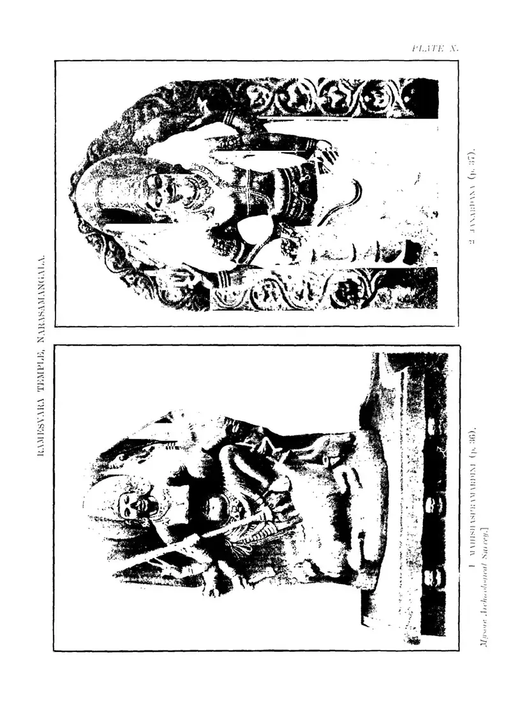
- (23.4) ANOYBAYA 7 (93.4) KIROBAYABASYABISHAYA 1 [ facons photographic ] KAMESVARA TEMPLE, NARASAMANGALA
East—
1. Yaksha cymbalist } both playing.
2. „ drummer
3-6. „ dancers in different poses.
7. „ cymbalist playing.
8. „ drummer.
9. Babe Kṛishṇa lying on the Banian leaf with the left toe in his mouth.
10. Yaksha dancing with sword and buckler (or is it Kamsa coming to kill Kṛishṇa ?)
11. Another Yaksha with a mace and in the attitude of striking the above figure. Note the characteristic drapery of the sculpture.
12. Wrestling Yakshas—scene full of life.
13. Dancing Yaksha.
14. Yaksha cymbalist.
15. Dancer.
16. Drummer.
17. Cymbalist.
South—
18-22. Dancers.
23. Yaksha with elephant's head, dancing (Gaṇeśa ?)
24. Dancer.
25. Drummer.
26. Dancer.
27. Dancer.
28. Drummer dancing.
29. Dancer with snake.
30-32. Dancers.
33. Drummer.
34. Cymbalist.
West—
35. Yaksha cymbalist with monkey's head.
36. Yaksha drummer.
37. Yaksha Vīṇā player.
38. Yakshas with heads of monkeys wearing kirīṭa and dancing or fighting (is it a fight between Vāli and Sugrīva ?)
40. Yaksha dancing with cobra in the left hand.
41. Yaksha dancer.
42. Yaksha dancer in a different attitude showing his back—nice figure.
43. Yaksha cymbalist.
44. Yaksha dancer.
45. Cymbalist.
46. Dancer with cobra.
47. Drummer.
48. Flutist.
49. Yakshas with heads of monkeys wearing kirīṭas and dancing.
51. Drummer with monkey's head.
52. Yaksha sitting with something in his right hand.
53. Yaksha dancer with monkey's head.
North—
54. Yaksha drummer.
55. Dancer.
56. Yaksha clapping hands.
57-60. Dancers.
61. Cymbalist.
62. Drummer.
63. Dancer with the head of an elephant.
64. Dancer.
65. Dancer with cobra. The pose is that of flying in the air.
66. Dancer.
67. Figure with a manuscript in the hands and in the pose of reciting passages therefrom.
68. Yaksha dancing with his belly converted into a large mouth and with no eyes or mouth on the actual face. The figure appears to represent Kabandha whose face was smitten, by the vajrāyudha of Indra.
Outer row of figures on beams below the ceiling in the central ankaṇa of the navaraṅga :—
East—
1. Rāma and Lakshmaṇa conferring with Sugrīva.
2. Five monkeys are proceeding with rocks on their heads to bridge the ocean.
3. Naṭa bridging the ocean.
4. Two swans flying in opposite directions
South—
5. Gaja-Lakshmī.
6. Yaksha dancers and drummers.
7. Garuḍa (?) with human face, long beak-like nose and bird's body.
8. Two swans carrying tortoise (story of Pañchatantra).
West—
9. Two swans—one proceeding forward, the other lying on ground.
10. Raṅganātha lying on a five-hooded serpent Ādiśesha; Yaksha dancers and drummer to left.
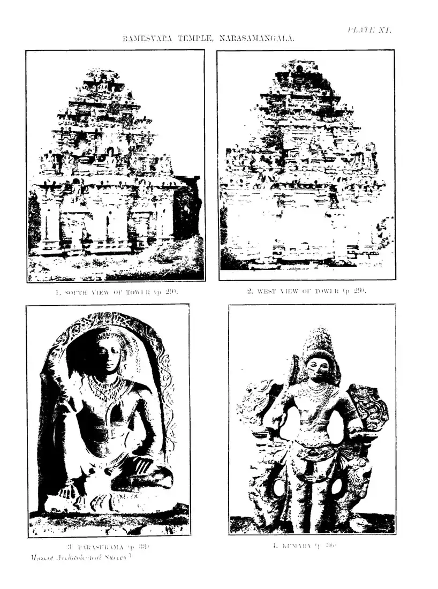
- SOUTH VIEW OF TOWER (p. 29)
- WEST VIEW OF TOWER (p. 29)
- PARASTRAMA (p. 33)
- KUMARA (p. 30)
11. Two ducks.
North.—
12. A row of four female figures—one of whom rests her head on her right hand as if in grief, while a little further is a group of Rākshasas. The representation is evidently of Sītā in Aśōkavana.
13. Monkey riding on crocodile as in the Pañchatantra story. The crocodile is sculptured like a fish.
14. Corner figure—A Yaksha is in the attitude of widening his mouth with his hands.
Inner row of figures on the beams below the ceiling of the central anikana :—
East.—
1. Figure wearing kirīṭa and having chāmara in his right hand.
2. Two elephants followed by two lions of which one is muneless.
South.—
3. Indecent figure of a Yakshī.
4. Three elephants.
West.—
5. Swans, five in number.
North.—
6. Indecent attitude of a Yaksha couple.
7. Yaksha.
8. Indecent.
9. Bird.
The central ceiling which is flat and divided into nine panels is a beautiful piece of workmanship second only to that of Araļaguppe.
Central Ceiling.
In the central panel eight-armed Šiva is dancing on the body of Andhakāsura while an attendant is beating on a triple-vase-shaped ghara . Around Šiva are the eight Dikpālakas, each mounted with his consort on his characteristic mount and followed sometimes by attendants. Agni's sheep, Niruti's human vehicle, Vāmana's makara with fish tail and elephant's trunk and without legs, and Kubera's horse which looks very much like a goat with his long ears drooping down are noteworthy.
Against the north wall in the navaraṅga is now seated on a high damaged pedestal a large two-handed image of what appears to be
Parasurama.
Paraśurāma, seated with one knee resting on seat and the other folded up. (Pl. XI, 3). His right hand holding a small mace-axe rests on the right knee. His left hand rests on the left thigh. His hair is loose and ends in ringlets. He wears the makara-kundala in his long carlobes and a jewelled diadem and necklets one of which has beaded pendants and
5 hangings. He wears also the yajñōpavīta and a jewelled loin-band on the lower breast. His waist cloth is not prominent. As in the sculptures in Ellora and Elephanta the god's lower lip is thick while the upper one is thin. He has a light smile.
The image of Gaṇapati which originally belonged to the Pañchāyatana group of this temple and is reported to have formerly existed opposite to Paraśurāma described above (see E. C. IV Architectural Introduction) was removed to Kottalavāđi about 30 or 40 years ago. The temple erected there for the god was also inspected. The image is about 5' high including the pedestal. The god holds tusk piece, ankuśa (?), rosary and apūpa. The figure, though somewhat grotesque, is old, the limbs, particularly the trunk, appearing to be natural. On the pedestal is carved the figure of a rat.
Ganesa. The sukhanāsi which was open originally is now closed in by a small doorway. The sukhanāsi ceiling has a beautiful large rosette in relief, while on the beams are the usual Yakshas in various attitudes as follows :—
Sukhanasi.
East.—
(1) Yaksha dancers, one of them in the attitude of flying in the air.
(2) Wrestlers.
South.—
(3) Yaksha playing with cobra.
(4) Yaksha sitting in yōgāsana.
(5) Yaksha drummer playing on a pot-like tabala placed vertically on the ground.
(6) Dancer.
(7) Drummer.
(8) Cymbalist.
(9) Dancer.
West.—
(10) Yaksha playing with cobra.
(11) Naked Yakshī.
(12) Two Yakshas—one holding the other.
(13) and (14) Elephant pursued by a lion.
(15) Mane less Purushamṛiga.
North—
(16) Drummer.
(17) Dancer.
(18) and (19) Drummers.
(20) Wrestlers.
(21) Dancer.
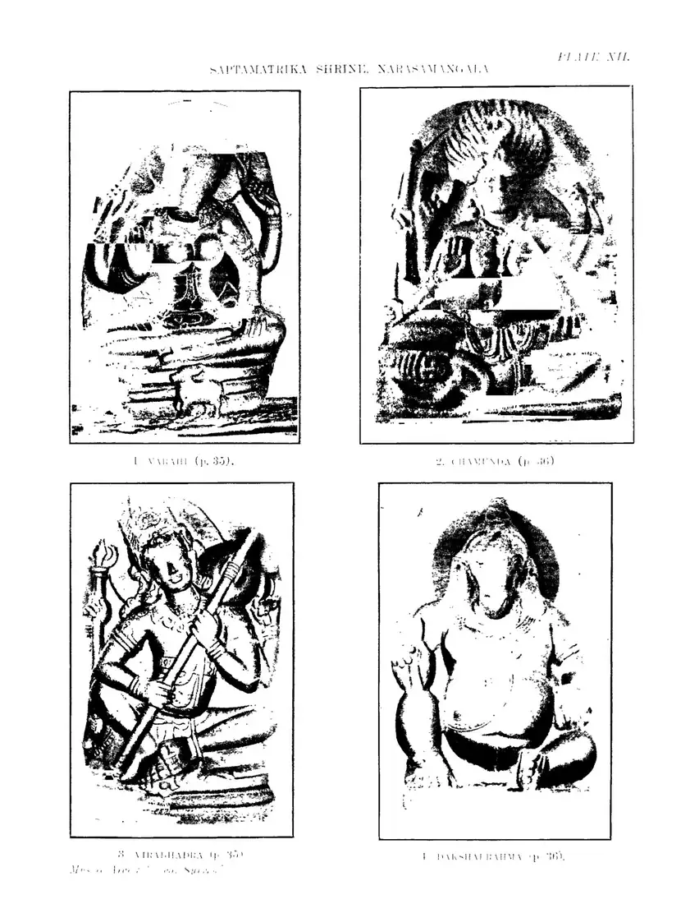
- VARAHI (p. 35)
- CHAMUNDA (p. 36)
- VIRALHADRA (p. 35)
- DAKSHALBAHMA (p. 36)
The garbhagriha which is about 10 feet square and about 7 feet high is low and has a large rosette on the ceiling. Under it on a huge pāni-pītha of darkish stone is a large linga about 22" in diameter with a flat top and rounded edges. It is of about the size of the Hoysalēsvara linga of Halēbiđ.
Garbhagriha. Directly opposite to the navaranga doorway is a recumbent bull, about 1 feet high, which with its small snout and short curved in horns reminds us of the beautiful bull of Kittūr. (Pl. IX. 2).
Nandi.
Surroundings
Linga; Inscriptions; The Saptamātṛikā Shrine; Stray Images: Sūrya; Kumāra; Mahishāsuramardinī; Janārdana; Conservation
About 20 yards to the south-east of the temple is another linga, smaller in size on a pītha whose middle cornice is rounded. This is an unusual shape.
Linga. To the south of the temple stand two slabs on which is carved a big inscription of Vīra Ballāla (E. C. IV, Ch. 204 and 205). Corresponding to this to the north of the temple was dug up a Tamil inscription of the same king 1 . Both refer to donations only.
Inscriptions
To the south-west of the temple is a small shrine in which are eleven images of a largish size, three facing north, five facing east and
The Saptamatrika Shrine. Their sculpture is remarkable because of the slimness of the waist and the fulness of the breasts and the mixed conical and stepped kirīṭas. There is little doubt that they belong to about the time of the Kōlārammā temple and its colossal Saptamātrikas. They are in order from the south-east :—
(1) Vīrabhadra playing on the Rudra-vīnā, and holding trishūla and damaruga. Nandi behind. He wears sarpakunđala and beautiful jewelled diadem in front of the jaṭāmakuṭa which reminds us of the diadems occurring in the Ajanta frescoes. (Pl. XII. 3).
(2) Brāhmī (three heads visible) with swan on pedestal. She holds abhaya, pāśa (?), and stylus; the fourth hand of every goddess generally rests on her left thigh.
(3) Māhēsvari—Bull on pedestal, trishūla and damaruga in the hands.
(4) Kaumārī with peacock on pedestal and spear and peacock in the hands.
(5) Vaishṇavī with Garuđa on pedestal and prayōgachakra and śankha held between two fingers in each of the back hands.
(6) Vārāhī—Buffalo on the pedestal (very peculiar) and a sceptre and pāśa in the back hands. (Pl. XII. 1).
(7) Indrāṇī—With elephant on the pedestal and vajrāyudha (double trident) and goad in the back hands.
(8) Chāmuṇḍā—With a prostrate man on the pedestal and flames darting from her head. Her eight hands are thus disposed, right —abhaya, sword, death's head mace, and damaruga; left —index finger pointing to head, holding Rakshasa's head, holding kapāla, and resting on thigh. (Pl. XII, 2).
(9) Gaṇēśa—helping himself to sweets.
(10) Daksha-Brahma, Nandi or Kubera with a pot belly, dwarfish stout legs and a sheep-shaped head with long hanging ears, no horns and a kirīṭa-makuṭa. The figure is two-handed holding a vase-like longish cup in the right hand and butter or fruit in the left, and wears yajñōpavīta. (Pl. XII, 4).
(11) Bhairava—four-handed and seated (sword, drum, snake, bowl). The figure has canine teeth, dishevelled hair tied with a cobra and the girdle formed by another cobra.
Just to the east of the Saptamātrikā temple is an empty pedestal bearing seven horses. Behind it lies a portion of the Sūrya image which formerly stood on it. It looks as if little sbrines had been built for the Pañchāyatana and the Saptamātrikās around the main linga.
Stray Images:
Surya.
To the west of the Rāmēśvara temple are several vīragals. Near them are lying several empty pedestals. There were also two damaged but beautiful images, the first of which is a male figure. This image stands in samabhanga and holds in his two hands a spear and a cup (?). He wears a stepped kirīṭa, makarakuṇḍalas, half a dozen necklaces, the sacred thread, waist bands, etc. His tōraṇa rises from two rearing lions and its top is broken. The image has a damaged nose and face. A remarkable point about it is the slimness of the waist and undulations near the knees, a feature observed on the images standing around the śikhara of the Bhōga-Nandi temple. The spear or śakti held in the right hand suggests that the figure may represent a two-handed and single-beaded Kumāra (Pl. XI, 4). The other figure is that of Mahishāsuramardini (Pl. X, 1). She is eight-handed, (trident, arrow, sword, two fingers lifted up as if the chakra has been
Mahishasuramardini.
thrown, śankha, bow, lifting up Rākshasa by the hair, and buckler). She wears a tall conical kirīṭa with a halo behind it, a jewelled diadem, makara-kuṇḍalas, necklaces, narrow breast band on her high breasts, girdles, etc. The loin cloth has on it the conventional folds shown. Even the muscles on the belly of the goddess are shown. With her trident, she is spearing a beheaded buffalo which is being clawed and bitten by a short-maned lion and on whose neck she is treading with her left foot in the characteristic Gaṅga fashion. The nose and lips of the image are damaged. Out of the severed head of the buffalo issues forth the demon Mahisha whose tuft is held by the goddess.
In the lantana bushes to the north of the temple was found lying an image of Vishnu as Janārdana (?) holding a mātunga fruit in the right lower hand which rests on a macc just beneath the elbow, prayōgachakra in the upper right hand and śankha in the upper left hand, the left lower hand being in kaṭihasta (Pl. X, 2). The image was originally about 6 feet high. The portion beneath the knees is now broken. The god wears yajñōpavīta, necklaces, armlets and wristlets, makara-kuṇḍalas and kirīṭa-makuṭa with halo behind. There is no phālāksha. Beneath the floral tōraṇa on either side are seen the avatārs of Vishnu. On the right side the Matsya and Kūrma are missing; but the Varāha, Narasimha and Vāmana avatārs are visible. On the left side of the tōraṇa (the broken piece was however found among the ruins) are Paraśurāma, Srī Rāma, Balarāma, Krīshṇa, Buddha and Kalki—all sculptured in the convolutions of the tōraṇa. The image is similar in technique to the other images lying round about and described above. It also belongs to the same period. It has now been removed to the west of the main temple where the other images are lying. Very probably the donation mentioned in the newly discovered Tamil inscription of Immadī Rāhutta Rāya 1 is to this god. Behind the inscription a portion of the brick basement of the old Janārdana temple was found while excavating round about the inscription stone and it is near this spot in the bushes that the image was discovered. Very likely it was also one of the images belonging to the Pañchāyatana group.
All the images are fully worthy of preservation in a museum.
Round about the temple are lying pieces of pillars and other architectural members of the temple.
The two temples and the images and other antiquities lying around them are among the oldest existing in the Mysore State. They contain some very fine pieces of Gaṅga architecture and sculpture. They should be declared 'Protected' and put under Class I. The brick tower which has been standing for over 10 centuries is a remarkable architectural piece. It should be kept clear of vegetation which is growing upon it and the roof of the temple repaired completely. The tower may be touched up so as to prevent water entering into it. The neighbourhood should be properly levelled, kept clear of thorns and the members of the Arkalvādī Pañchāyat instructed to repair the cart road to the village. The preservation of the temple is an urgent necessity. Both the shrines should be provided with battened wooden doors.
Among the inscriptions published in E. C. IV. Ch. 204 and 205 were revised and found to be two parts of one inscription. Three new
Inscriptions. inscriptions were found in the vicinity of the temple, one on a stone oil mill to the south-east of the Rāma-nātha temple, another on one of the ceiling slabs in the verandah of the Saptamātrikā temple and a third, which is in Tamil characters, to the north of the main temple as already stated.
Part II: Study of Ancient Monuments and SitesHaradanahal!li
Haradanahalli is a large village four miles to the south of Chāmarājanagar. It has two large temples, one dedicated to Anilēśvara and the other to Gōpālakṛishna.
Anilēšvara Temple
History; Paintings
The Anilēśvara temple has become a huge structure by numerous additions made from time to time. It has a large number of inscription stones which are lined to the southern compound wall. These help us to build up the history of the temple.
In the days of Vīraballāla III in 1317 A. D., his officer Mādhava Daṇāyaka installed the natural linga called Anilēśvara and built the temple which must have consisted of the garbhagriha, the sukhanāsi and the inner navaraṅga. Perhaps a few years later was built the small shrine of Pārvatī on the north. The outer walls of both of these have octagonal cornuce, the pilasters with biscuit-shaped moulding, and the shortly curved eaves with shallow kīrtimukhas. About 1340 one of the cylindrical pillars of the inner navaraṅga was replaced. Between 1340 and 1370 the outer navaraṅga with its southern porch of cylindrical porch and rounded railings, its sixteen-fluted hood-cornered pillars, its frontal verandah of 1 × 5 anikaṇas, its rough looking fanged dvārapālas and the Vīrabhadra image (sword, arrow, bowl and shield), Tāṇḍavēśvara ceiling, the mukhamanṭapa of 15 anikaṇas with its sixteen-fluted pillars and its composite pillars and rounded railings and its finely ornamented bull were constructed. It was probably about this time i.e. , somewhere in the early Vijayanagar period that the high mahādvāra with the lofty brick tower and rows of sea-horses and kīrtimukhas and round and sixteen-fluted pilasters was also constructed. In the Vijayanagar period, probably 1660 A.D., the linga shrines at the back with their painted ceilings, the linga shrine on the south, the Sarasvatī shrine (1480) near Pārvatī's temple, the kalyānamantapa, etc., were constructed.
The ceiling paintings at the back of the temple are worthy of study since they are examples of later Vijayanagar period parallel with
Paintings. those at Lēpākshi and elsewhere. Among these paintings may be noted the following :—
First panel :— Šiva seated with 10 hands —abhaya, vajra, sword, padma, trišūla, sarpa, sarpa, ghaṇtā, flame, and flower. He is seated in padmāsana and has five heads in two tiers, one of three and the other of two. Around the panel are groups of parrots, rows of swans and caparisoned elephants and on the beams are various gods like baby Krīshṇa, dancing Krīshṇa, Gajalakshmī, Vishṇu, Umāmahēśvara, Gaṇeśa, etc. A bhakta wears a long white coat and a cloth cap with an uttariya .
Second panel :— Umāmahēśvara with rows of pigeons around. On the beams are found Samudramathana, Jalandhara samhāri, the Dikpālas, the linga being worshipped by several ladies and gentlemen all dressed in the Vijayanagar style. Date of the painting, circa 1634 A. D. (Šaka 1556).
Third panel :— Worn out, with a border of birds
Fourth panel :— Andhakāsuramardana
Fifth panel :— Gajāsuramardana.
Sixth panel :— Large padma with border of parrots.
Serenth panel :— Virabhadra, greatly damaged.
Eighth panel :— Šrī Rāma seated on throne with Šitā and Lakshmaṇa by his side. On the beams are depicted Krīshṇa's love scenes.
Among the other paintings is an interesting picture of a Moslem king smoking the guduguđi .
Ninth panel :— Šiva and Pārvatī on Nandi (damaged painting).
It is interesting to notice that about 1640 A.D. the art of Fresco painting was still existing.
Opposite the Mahādvāra stood until about twenty years ago a tall granite pillar with a thirty-two fluted shaft dating probably from the early Vijayanagar period and being contemporary with the mahādvāra. It was leaning on one side and on a rainy day came down with a crash and was broken into pieces. The five pieces belonging to it—three of the pillar, the circular neck, and the lotus capital are lying where they fell.
Lofty pillar
Göpālakṛishṇa Temple
About a hundred yards to the west of the Anilēśvara temple is the temple of Gōpālakrishṇa which appears to have been constructed in two different stages. The garbhagrīha and the sukhanāsi with their pilastered and niched walls, their octagonal cornices, etc., appear to date from about the 14th century. The sukhanāsi doorway has got two moustached dvārapālas. On the lintel is an
History and General Description
Main Image; Images in Navaraňga; Description of Temple
image of Veňkaťeša. On the battened wooden door of the sukhanāsi is a Kannađa inscription reading Děvarāja . This is probably the name of Chikkaděvarāja Ođeyar in whose time the extension of the temple was made with materials brought from Šaiva temples.
In the garbhagriha stands instead of Veňkaťeša, a beautiful image of Vēnugōpāla of undoubted Hoysaļa workmanship. (Pl. XIII, 1).
Main Image. The listening cows, the groups of cowherds, the finely worked tamāla tree, the prabhāvali though without the ten avatāras and the general figure itself, are beautifully worked. Tradition says that the temple was originally intended for Veňkaťeša but that Chikka Děvarāja Ođeyar who fished out the Vēnugōpāla image from the kalyāņi at Melkōte got it installed in this temple in the place of Veňkaťeša which is
Images in Navaranga. now kept in the navaranga. Other images kept in the navaranga are Varadarāja (Janārdana) and Krīshnā, (Pl. XIII, 2) Viśvaksena, Nammāļvār, Rāmānujāchārya, Šrī Dēvī and Bhū Dēvī.
Around the original temple has been constructed the kattale pradakshiṇa . The navaranga is of 20 aňkaņas in front of which is a mukhamaņtapa of 3 x 5 aňkaņas.
Description of Temple. The prākāra is well cloistered with verandahs. The pillars of the temple have nothing remarkable. In the sukhanāsi are kept a fine Janārdana group and the god's image has a very oldish look. There is also an image of Tāṇđava-Krīshnā.
Venkaťayyana Chatra
Veňkaťayyana Chatra is a large village about a mile and a half to the south of Haradanahaļli. It has a medium-sized temple of Veňkaťeša constructed about 1676 A.D. by one Veňkaťayyangār who endowed the temple and a number of Brahman families connected with it.
The temple has a garbhagriha, sukhanāsi, navaranga and a prākāra with cloisters and has no distinguishing architectural features. In front of it is a finely built stone pond said to be about forty feet deep.
The temple possesses a nirūpa of Krīshnārāja Ođeyar III, of which a copy has been made.
Part II: Study of Ancient Monuments and SitesHaraļakōte
Haraļakōte is an ancient site three and a half miles south of Chāmarājanagar and one and a half miles south-west of Rāmasamudra. In
Manipura
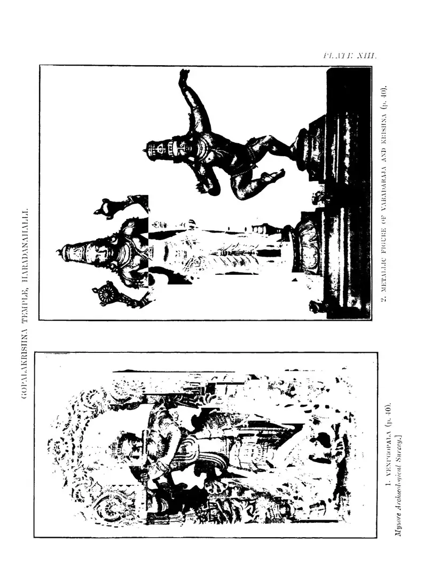
- VENTGOPALA (p. 40)
- METALLIC FIGURE OF VARADARAJA AND KRISHNA (p. 40)
Manipura was the capital of Babruvāhana, Hattalakōṭe is popularly described as the capital of that prince.
There are two lines of fortifications—the inner one perhaps of the Hoysaļa period and the outer one of about the Vijayanagar period.
Fortifications
Both of them were of earth and are reduced to mounds.
Ānijanēya Temple
Janārdana Temple: Chōļla-Draviđian Type; General Description. Main Image; Garuđa Pillar; Vīrabhadra Temple; Hoysaļa Image; Ancient Site; Inscriptions
At the north entrance to the outer line of fortification stands the temple of Kōṭebāgilu ĀŃjanēya, an unimportant structure of the Vijayanagar period with a colossal image of Hanumān sculptured in the round which resembles the Sugrīva image at Terakanāmbi and faces to the front with all the teeth showing.
JANĀRIDANA TEMPLE.
In the middle of the inner fortification stands a granite temple originally dedicated to Kēšava and so named in the inscriptions of Chola-Dravidian Type. Pratāpa Narasimha (Ep. Car. IV, Ch. 98). The structure which is in the Dravidian style has no architectural importance. The inscription proves that the Hoysaļas even as early as the days of Narasimha continued to imitate the Chōļa-Draviđian type in this area.
The outer wall of the temple has the octagonal cornice. the biscuit-headed pilasters, the shallow niches, and the shortened curved eaves with kīrtimukhas. The brick tower is of the late Vijayanagar times. The building has a small garbhagrīha with a padma dome in the ceiling, two sukhanāsis of which one is a small navaraṅga of four sixteen-fluted pillars and an open mukhamaṇtapa. The navaraṅga was repaired by the addition of some supports and an extra frontal ańkana was added sometime in the Vijayanagar period.
In the garbhagrīha there now stands instead of the disappeared Kēšava image a relievo image of Šrīnivāsa (abhaya, chakra, padma, kaṭihasta). The image is of poor quality.
Main Image.
The temple turns west and about 50 yards away on this side there stands a fine monolithic granite pillar about 45 feet high. It rises out of a square base into an octagon from which springs a long sixteen-fluted shaft bearing the vase, an octagonal wheel with an abacus and a suṇpapāda-like finial. The chief interest of the pillar is the fine proportions and the great height. Some of the stones of the base have moved out of place and the base requires strengthening.
Garuda Pillar.
6
VĪRABHADRA TEMPLE.
To the south-west of the Janārdana temple stands a small temple of Virabhadra of about the Vijayanagar times. Near it on the ground lies an inscription of the time of Krīshṇadēvarāya.
Hoysala Image. But the image is a beautiful one and may even date from the late Hoysala period. The god holds a sword, arrow, bow and shield and is attended by Dakshabrahma. He wears moustaches and a kirīṭa typical of the 14th century. He is called Bokkasada-Vīrabhadra and is said to have guarded the treasury.
ANCIENT SITE.
More than a furlong to the west of the Janārdana temple lies a high ground with numerous mounds here and there. It is strewn about with brickbats, brick basements and other structures, redware pottery and even beads. It is said that occasionally gold coins are picked up in the area.
Corresponding to the Vīrabhadra temple on the north is a high mound (Survey No. 491) which is called Basti-tiṭṭu . It is strewn about with the relics of an old temple, probably of a Jaina one. Beads and wooden combs were picked up on the site.
The basti mound has traces of a large collapsed brick structure and also some unworked stones. A diagonal trench sunk on it from north-east to south-west may give us the basement of the collapsed brick temple. The western part of the area has now been converted into ploughed fields. The portion now reserved, viz. , Survey No. 491—eleven acres and 10 guṭṭas should not be disturbed except with the concurrence of the Archæological Department. It is a likely site for excavation.
The field to the west of the reserved ground is strewn with pottery. It should be acquired and preserved. The two fields called Puttaraṅgana hola (Survey No. 498) and Sūrayyana Subbaṇnana hola (Survey No. 499) should also be acquired and preserved. Another trial trench may be carried diagonally across the north-east corner of Puttarangayya's field (No. 498).
Near the basti mound there is an insignificant linga and on the east slope is a damaged figure of Gaṇēśa in granite. This shows that there must have been another temple close by.
A new inscription was discovered on the site. It is of the time of the Hoysala king Narasimha (S. 1209—1287 A.D.). Another fragmentary inscription was found near the pond to the south of the Āñjaneya temple.
Inscriptions.
Part II: Study of Ancient Monuments and SitesChāmarājanagar
Janana Manļapa
No heading in the body: this section starts at its printed page (43).
The Chāmarājēśvara temple and the Janana manṭapa were inspected. The latter seems to have been constructed out of the materials brought from the temples in the neighbourhood, e.g. , Terakaṇāmbi, Haraļakōte, Haradanahaļli, etc. There is a stone tablet in English commemorating the birth-place of Chāmarāja Ođeyar in 1774. The paintings on the wall represent to the left Rājarājēśvarī with cornucopia and sugarcane, and Chāmundēśvarī to the right. The monument which was built in 1826 by Krīshṇarāja Ođeyar III in memory of his father is a protected one and is in a good state of preservation.
Part II: Study of Ancient Monuments and SitesHomma
Homma is a prosperous village about eight miles from Chāmarājanagar via Ālūr. It has several temples.
Janārdanasvämi Temple
History; General Description; Images. Conservation; Ballāļa's Inscription
The Janārdanasvāmi temple is a structure of the days of Ballála III reconstructed and provided with brick and mortar walls about forty years ago in the days of Mr. Krishnappa, Amildar.
History.
The old basement with its octagonal cornice, the sōmasūtra with the spout emerging from a tiger's mouth, the old doorway and the old sixteen-fluted pillars with their ribbed brackets and the large padma and the central navaraṅga ceiling are all there.
General Description.
The image of Veñkaṭēśa (about 4 feet high—abhaya, chakra, śankha, kaṭihasta) is standing in front of the garbhagrīha doorway. There
Images. is no sukhanāsi. The image is not worshipped. It is a fairly good image of the late Hoysaļa or early Vijayanagar type. To its right is a fine Gaṇapati image.
It is recommended that the image be installed and the navaraṅga refloored with the slabs collected at the back of the temple.
Conservation.
In front of the temple lies the large inscription of Vīra-Ballála III. Above the inscription is an anthropoid Gaṇdabherunḍa flanked by a
Ballala's Inscription. dagger, đamaruga and a sun on the left and the Tamil letter ka , a pillar, etc., and a crescent moon on the right.
Rämēšvara Temple
The Rāmēśvara temple is a small ruined structure with modern brick walls and old octagonal pillars of a very plain type. It has a
Ruined Temple
6 small Nandi without trappings except for necklaces and head bands. The temple shows no definite traces helpful for dating it.
Close by stands the inscription stone (E. C. IV, Ch. 63) of the time of Śrī-
Purusha Gaṅga mentioning Vinitiśvara. It is standing
Ancient Inscription
Bhūtēšvara Temple
About a hundred yards away to the north-east of the Rāmēśvara temple are the ruins of a damaged black stone linga of Bhūtēśa known in the inscription as Mūlasthānēśvara with an inscription of the time of Harihara II (1380 A.D.), standing to its east half buried in the ground. The pillars and stones of this Bhūtēśvara temple which stands close to the plantain garden of the Shanbhogue of Kōṭehaļli were taken away to Kōṭehaļli and utilised for the Āñjanēya temple there. This is a mile away from the Bhūtēśa temple.
Part II: Study of Ancient Monuments and SitesĀlūr
Situation
Ālūr is a prosperous village six miles to the north-east of Chāmarājanagar on the right or east bank of the small river Suyarṇāvatī or
Situation. Honnuhoļe. The site of Haļe-Ālūr is in the midst of cultivated fields and gardens close to the river.
Dēšēšvara Temple
History and General Description; Bull Manĵapa; Conservation; Inscriptions; Sculptures in the compound
One of the oldest temples in the place is that of Dēšēšvara, a structure constructed in two different stages. The garbhagriha containing a black linga on an octagonal pītha, the small
History and General Description. sukhanāsi, and the small sized navaraṅga about 12' x 12'
with its four roundly chiselled trap stone pillars having the beginnings of the bell and vase moulding appear to belong to the Chōla days or even a slightly earlier period like that of the Gaṅgas. But the outer navaraṅga with its sixteen-fluted granite pillars, with its southern and its ribbed pillar brackets and hood corners belongs to the renovation effected in early Vijayanagar period with which is perhaps connected the large stone inscription of the time of Harihara dated S' 1325, standing on the south side of the temple.
The small bull manṭapa stands opposite the temple. But the bull itself is in the navaraṅga. The two western pillars of this manṭapa,
Bull Mantapa. which are wrongly paired, of course, belong to the Chōla or pre-Chōla work. One of them is of black stone and has the cubical base, the sixteen-fluted shaft, the beaded and creeper bands, and the vase mouldings, while the other is a grey granite with the bell and vase shape mouldings rather ornamentally treated. The grey pillar has a Tamil Grantha inscription on its base.
The temple is so completely ruined that it is difficult to repair it without much expenditure. It will be better to retain it in the present form giving supporting buttress walls where the stone walls are out of plumb.
Conservation.
A new Tamil inscription was discovered on a large slab in the north side of the navaraṅga. 1 The inscription of Rājendra Chōla
Inscriptions.
(E. C. IV Ch. No. 69) is not traced.
Sculptures in the Compound.
Behind the Dēšēśvara temple on the south-west end of the old compound are found ten sculptures of largish seated figures in granite of the Saptamātrikās with Vīrabhadra to the right and Ganēśa and Kāpālikā to the left. To the north of the temple and close by it is a large seated granite reliefo Durgā in a vigorous and terrible attitude with eight hands and open mouth, flames darting from her hair. (Pl. VII, 1). Her hands hold dagger, vajra, short sword, long sword, svargahasta, buckler, bell (?), bowl. The slender waist and limbs and the vigorous attitude of the goddess are characteristic of Chōla workmanship. On her pedestal is a beast whose identity is doubtful. It has the snout of a boar, the legs of an elephant, and the tail of a mongoose or tiger or even crocodile. It is not clear what the creature is.
Arkēšvarasvāmi Temple
Age of Temple; General Description; Navaraṅga Doorway; Sculptures on pillars; porch pillars; South-east pillar; South-west pillar; North-West pillar; North-east pillar; Sculptures on the Navaraṅga pillars; South-east pillar; South-west pillar; North-west pillar
The temple of Arkēśvara was perhaps constructed in the time of Rājendra Chōla (C. 1020 A.D.) as seen from the inscriptions on the north basement cornices of the temple. Since it is a definitely Chōla structure, it is of great architectural interest, though it must be admitted that it has entirely been rebuilt during recent years.
Age of Temple.
It consists of a small garbhagriha, a very small sukhanāsi and a navaraṅga of about 12' × 12' with a flat central ceiling divided into nine panels and having Tāṇḍavēśvara surrounded by the Dikpālakas. The basement cornices are partly octagonal and partly round. There is a small bull-maṇṭapa in front of the temple, containing a bull without trappings except for a head band. In the navaraṅga are kept two images, one of Mahishāsuramardinī standing on buffalo-head (abhaya, chakra, śaṅkha, kaṭihasta) and another of Śiva as Kāpālika on bull pedestal (triśūla, mace, goad, rosary and bowl).
The navaranga doorway (Pl. XVII, 3) has on the jambs and the lintel a scroll band with dancing Apsaras as at Narasamangala.
Navaranga Doorway. On each side of the doorway is a dark stone slab with four vertical panels containing groups of musicians playing on drums, cymbals, flutes, rudraviṇā and a violin-like instrument. (Pl. XIV, 2).
The chief objects of interest in the place are the four pillars of the navaranga and the four pillars of the Nandi manṭapa of which two are illustrated on Pl. XIV, 1. The pillars have square bases and round shafts, the latter opening out into the slope of the mouth of a vase. Over it is a round loaf-shaped moulding and on top is a bracket which, where fully worked, has the horizontal ribs with central floral band. The base and shaft of each pillar are divided into horizontal bands, each containing a frieze of fine sculptures, in low relief, which are of much interest.
SCULPTURES ON THE PILLARS OF THE PORCH:—
South-East Pillar:
Square base and round shaft.
Sculptures on base:
East Face —Two persons—one of whom is four-handed and perhaps a deity (Kṛishna ?), standing with attendants to the left, and a boy carrying fruits in a basket on head to the right.
South Face —A king seated in state with two attendants standing to left.
West Face —A king seated before a four-handed deity and offering flowers (?). The deity appears to hold śankha and chakra (?) in the right and left hands respectively. The lower right hand is in chimmudrā and the lower left rests on thigh.
North Face —A royal couple proceeding on elephant.
Sculptures on shaft containing three panels:
Bottom Panel —Consists of a royal couple proceeding on horseback, and another on the back of an elephant with warrior attendants in between them and on either side of them, while a king is seated in state with attendants on the west face of the panel.
Middle Panel —Depicts perhaps the fight between Duryōdhana and Bhīma with Kṛishna (four-handed) looking on and sage Vyāsa (?) doing penance on a hill.
The Top Panel has a row of Vidyādharas.
South-West Pillar:
Sculptures on base—
East Face —A king and queen seated in state with a bearded figure (ṛishi Vyāsa ?, also seated, giving the royal couple instructions. while a priestly attendant stands to further left.
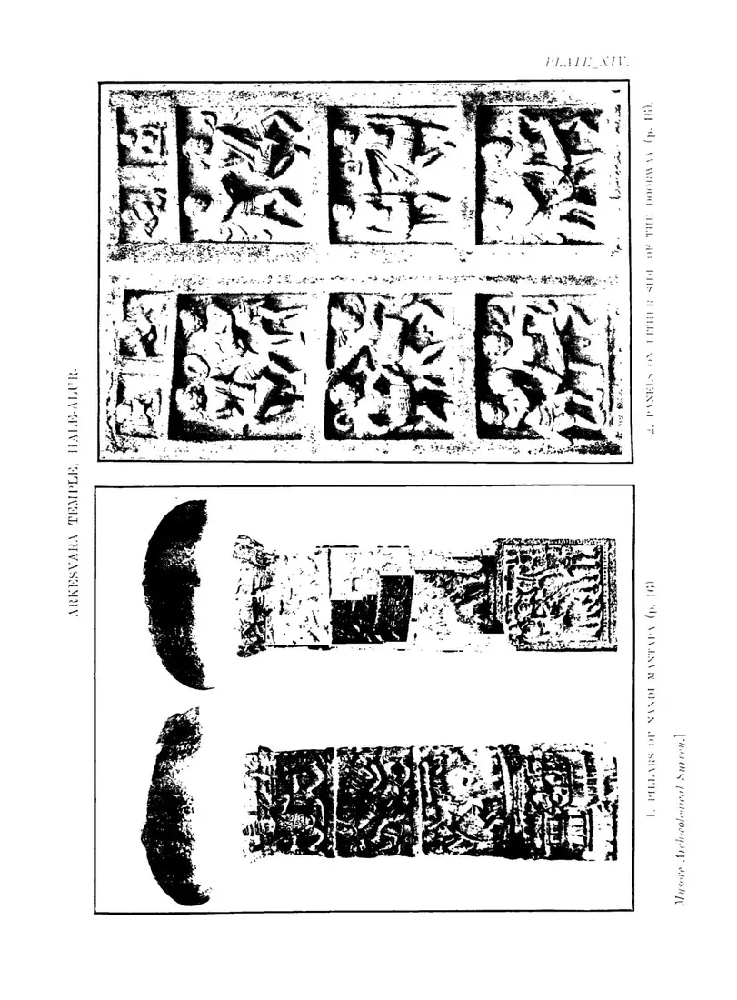
- PLEGARS OF VANDE MANTAVA (p. 16)
- PLANNES ON FIFTEEN OF THE DOODRAWY (p. 16)
South Face —A king proceeding on horseback with umbrella-bearers and attendants.
West Face —Perhaps depicts the Kandalūr Śālai victory of Rājendra Chōla. An army of five warriors sailing in a boat towards a temple with a lofty gōpuram. The sea is represented by lines for waves and a sea-horse and fish.
North Face —A seated king receiving a message, with an attendant swordsman to further front.
Sculptures on the shaft—three panels:
Bottom Panel —Two elephants stand face to face with their royal riders, perhaps of opposite flanks, while a cavalier, also a royal personage, rides behind with an army of soldiers (with weapons like javelins, swords, bow and arrow) standing in various positions.
Middle Panel —Depicts the Mahābhārata war on chariots and the Śarapañjara of Bhīshma.
The Top Panel once again has a row of flying Vidyādharas.
North-West Pillar:
Square base and round shaft.
Sculptures on base:—
East Face —A warrior proceeding on chariot, with bow and arrow.
South Face —A royal personage proceeding on horseback with attendants.
West Face —A royal warrior presenting the head of an enemy to his king who seems to grieve at it.
North Face —Two seated royal personages, one of whom sits on a throne, are depicted perhaps in the attitude of bewailing.
Sculptures on shaft—three panels:—
Bottom Panel —Array of army consisting of chariot, elephant and foot-soldiers.
Middle Panel —Eight on chariots with bows and arrows. On the east face is an elephant carrying a warrior. A severed head is shown in front of the chariot on the north face of the panel (Bhagadatta ?)
The Top Panel —Has a row of Vidyādharas.
North-East Pillar:
Square base and round shaft. Sculptures on base:
East Face —A palanquin is borne along.
South Face —A king and queen seated in state and enjoying a dance.
West Face —Damaged, but perhaps similar to above.
North Face —A standing queen with attendants, receiving something from a warrior.
Sculptures on shaft—three panels :
Bottom Panel —Three queens seated, with the attendants standing and three elephantinen guarding with weapons.
Middle Panel —A king in procession with drummers and swordsmen.
Top Panel —Row of Vidyādharas.
A procession of the Vidyādharas, Āśvara, Brahma and the Ashṭadikpālakas can be seen on the outer faces of the beams of the porch.
SCULPTURES ON THE PILLARS IN THE NAVARANGA :—
South-East Pillar: —Has a square base and round shaft.
The faces of the base have sculptures as follows :—
East Face —Two panels of sculptures. The lower panel has a dancing group of drummers and cymbalists. In the upper panel stand two or three figures carrying sugar-cane bows, while a royal couple with attendants pay obeisance to them.
South Face —Two panels—In the lower is a royal lady seated. In front of her are three palm trees between which are seated some figures. In the upper panel a queen is seated and four males stand in front. Of the latter the middle two have their hands raised as if in wrestling.
West Face —Has also two panels of sculpture. The lower depicts a royal person seated, while three persons forming a dancing group give a performance. In the upper panel sit the royal couple in state with attendants, while above is a row of six female figures, evidently of persons belonging to the harem.
North Face —Has also two panels. The lower has a dancing group consisting of drummers and cymbalists. In the upper panel stands under a gateway a royal personage followed by three attendants and received by his two queens.
The shaft of the pillar has six panels of sculpture running round it. They are from the bottom upwards as follows :
Lowermost Panel —On the east face is a king (has he yajñōpavīta?) seated with his queen. An attendant stands before him. On the south face is a royal person (perhaps the same) seated with a boy before him. A lady attended by several persons reports to him something. A procession on foot begins and on the west face we find three persons, all royal in rank, lying on ground—one, that is, the lady by a river, the king by a mountain, and the third by a river, with the attendants standing to further right. In the next compartment the royal couple are seated on throne with attendants to the right. (This scene perhaps refers to the adventures of a king on receipt of some information from a lady and the termination of the incidents by a marriage alliance).
The second panel —From bottom has a row mainly of standing attendant figures all round, except that on the east face is a dancing group consisting of three persons.
The third panel —Depicts on the east face a king seated in state with his two queens to his left and an attendant standing to the right. Next, to the right is a royal personage (perhaps the same king) seated under a pavilion (perhaps representing his palace). An attendant stands behind him. To further right we find a royal couple on an elephant proceeding towards the palace followed by an army of foot soldiers carrying swords. In their rear, on the north face of the shaft, proceeds another elephant carrying a royal couple and followed by two swordsmen.
The fourth panel —Depicts on the east face of the shaft a king seated in state with another royal person (perhaps his son) also seated at a distance. Between them stand two persons of whom one appears to report something with folded hands. Behind the king are seated several of his queens with their attendants, while on their rear (that is on the west face of the pillar) is a horseman. To the right of the latter person is what looks like a palace or temple towards which proceed a royal couple on horseback led by a troop of foot soldiers carrying swords.
On the south face of the fifth panel are seated in state the king and queen. Their standing attendants and guards carry swords. A dancing performance goes on.
The topmost panel —Contains a group of flying Vidyādharas.
South-West Pillar:
The south-west pillar has no sculptures on it, except floral bands on the round shaft and cubical base.
North-West Pillar:
Square base and round shaft.
Sculptures on base.—
East Face —Sculpture in two panels. The lower has an army of palanquin bearers carrying perhaps the queen of the king who follows on horseback behind.
7
In the upper panel are two elephantmen having bows and arrows, while trumpeters march in front blowing their trumpets.
South Face —Has three panels of sculpture. The bottom panel has a row of five standing warriors with swords, etc. In the middle panel the king is seated in state with his queen behind him and a chāmara-bearer standing in front, while some person, perhaps the prince himself, is doing homage with folded hands. The topmost row depicts a dance before the queen who is seated on couch with her attendants standing on either side. The dancing group consists of dancing girls accompanied by a drummer and a cymbalist.
West Face —Contains two panels—In the lower panel a king and queen are seated. A messenger stands in front of the king proclaiming something at which the king has raised his right hand with the fingers pointing upwards. The upper panel has a dancing group.
North Face —Contains also two panels. In the lower a prince proceeds on horseback followed by two foot-soldiers. In the upper panel are three warriors of whom two are shooting with bows and arrows.
The shaft of the pillar contains five panels of sculpture running all round it. Proceeding from the bottom upwards they are as follows :—
Lowermost Panel —Has an army of cavaliers and elephantmen. On the east face the first horseman is perhaps a king or prince since an umbrella is held over his head. His consort is also seated behind him on the same horse. The scene terminates in the shooting at a person who seems perhaps to be a captive. A lady stands between him and the archer.
Second Panel from the bottom—On the south face a royal person is seated amidst his courtiers, with an attendant massaging his left leg. The next compartment shows (on west face) the queen mother and her valiant son seated with their attendants standing. On the north face of the next compartment a couple are seated. The east face depicts a pot-bellied woman lying on couch. A tremendous mythical bird is sculptured above her in the attitude of carrying her away. The last compartment depicts on the south-east face a boat in which are several soldiers and the pot-bellied woman.
North-east pillar
Conservation
No heading in the body: this section starts at its printed page (51).
The Third Panel —From bottom depicts on the east face a king seated in state with attendants on either side standing and a dancing celebration going on. The next compartment also depicts on the south the king enjoying a dance. Next, is a row of two swans (with long floriated tails like Mayūras) flying over hills to a temple enshrining a linga (north face).
The Fourth Panel —From bottom depicts the procession of the pot-bellied queen being carried in a hammock with the king riding on an elephant in front. Dancers and musicians consisting of drummers and cymbalists celebrate the capture of the enemy who is perhaps the spouse of the pot-bellied queen and whose severed head is carried between two spikes by warriors walking in front of the elephant. Above are sculptured makara, fish, etc.
5. The Topmost Panel —Has a row of flying Vidyādharas.
North-East Pillar:
Square base and round shaft. On the four faces of the base sculptures are carved in the following order:—
East Face —Two panels. In the lower two notables—perhaps a king and his queen, proceed on an elephant with spearmen on either side; the upper panel has a group of drummers and heralds.
South Face —Three panels of sculpture. The bottom panel has a row of drummers and cymbalists; in the middle panel a king and queen are seated amidst the women of the haren, one of whom offers a cup of wine (?) to the king and another fans with flywhisk the queen who has a lotus in her right hand; the top panel has a row of three seated figures, of whom the central one is perhaps a chief.
West Face —Contains two panels of sculpture—in the lower a row of four spearmen stand in front of a person who appears to be a prince and behind whom stands an umbrella bearer. In the upper panel there are four figures of whom, the first and second from the right appear to be the queens waiting under a gateway for their lord. Coming towards them from above is a row of flying birds.
North Face —This is also divided into two panels—an upper and a lower, the lower depicting perhaps a wood with wild beasts like the deer and the boars; and the upper, a group of hunters with their bows and arrows led by a king and queen on elephant. This is evidently a hunting scene.
The shaft is divided into five panels of sculpture running round it. From the bottom upwards they are as follows:—
Lowermost Panel —On the west face we find a royal personage on elephant issuing from a gateway and followed by his attendant, warriors and drummers. With his bow and arrow he fights through an army of spearmen, the chief of whom is seated on horseback who also has his bow and arrows. The victor then proceeds on an elephant capturing the enemy's queens and leading them on another elephant behind him to the temple of Mahākālī and pays obeisance to her for the victory conferred on him. The image of the goddess is like the one (but of a bigger size) set up north-west of the Dēsēśvara temple. (Pl. VII, 1). She is seated in a vigorous attitude on a boar pedestal and has eight hands holding weapons like bow, ankuśa, drum, sword, flame, arrow and bowl. She has disheveled hair and scullheaded kirīṭa and wears loin cloth and ornaments.
Second Panel from bottom —On the east face a royal couple issue forth on elephant with the spearmen and a palanquin in front. They then proceed on horseback, with the same spearmen in front, to the durbar hall where we find them seated on throne. Next to the durbar hall is the bedding room where the king is lying on his couch with the queen seated by his side.
Third Panel —Beginning on the west face, the king or prince proceeds on elephant followed by drummers and carriers through a gateway. Next are two elephants, the first guarded by a spearman and without a rider, and the second standing to further front with a soldier on its back holding a goad. This latter elephant stands before a seated king holding something resembling a vīṇā and has in its trunk a person. Another person is thrown into the air between the two elephants. The fact that the other elephant has no rider suggests that the person thrown in the air is its rider and that he was captured by the person sitting on the back of the elephant standing before the seated king. The scene evidently refers to the conquest effected by a Chōlā prince, perhaps Rājēndra. The thrown enemy falls on a spike held by a man seated on the ground.
Fourth Panel —A row of three horizontally running compartments each consisting of seated royal personages with attendants. The first compartment on the east has a royal couple seated on the throne, the king having something resembling a vīṇā in his hands and the queen with her right hand pointing upwards, perhaps in the attitude of singing. In the next compartment the queen alone is seated playing on a vīṇā and having attendants on either side. In the third compartment the royal couple are once again seated on throne holding something between them, while a lady to further right attended by a fan-bearer and two spearmen pays homage in squatting attitude and with folded hands. This latter person appears to be the queen of the vanquished enemy and praying for pardon.
The fifth and the topmost row contains a group of flying Vidyādharas. each of them being two-handed, with the right proclaiming the glory of the king throughout the world and holding lotus in the left.
The four pillars of the navaraṅga, the ceiling, and the Nandi-mantapa pillars are fit to be shown in a museum. The sculptures show perhaps the victorious exploits of Rājēndra Chōla. 1 The temple deserves to be protected, repaired, and provided with a door and a compound wall.
Part II: Study of Ancient Monuments and SitesBhadrāvati
Lakshmīnarasimha Temple
For description, etc., see Mysore Archæological Report for 1931.
Renovation. —An estimate for about Rs. 5,240 was sanctioned and subsequently owing to an additional expenditure of about Rs. 1,500 a re-revised estimate for about Rs. 6,800 was countersigned. It makes provision for the necessary acquisition of houses around, for the digging up and levelling of the compound, for enclosing the area with a size-stone compound wall, for resetting and cement-pointing the stone basement of the mahādyāra and reconstructing the temple platform. Provision is also made for lighting the temple with electricity.
The following additional improvements may also be included so as to restore the beauty and usefulness of the main building :
The outer walls, particularly the portions covered with white mortar should be scraped off and the old architectural mouldings cleared.
Cement-pointing should be done with cement coloured to match the neighbouring stone.
The cone-shaped śikharas of the three cells are ugly modern structures. They may be removed and the towers may, if possible, be completed in soapstone on a
1. Cp. C. Hayavadana Rao, Mysore Gazetteer , Vol. II, Part 1, pp. 161 ff. design matching the lower portions and resembling the stone šikhara piece lying in the compound.
The ugly ventilation tower may be removed and substituted with a low tower invisible from the compound and having a glass top and ventilators on four sides protected with expanded metal.
The inside of the temple including its walls, pillars, and, particularly, the perforated screens and other sculptures should be carefully cleared as has been done at Bēlūr. The images of all the gods which are covered over with a thick coating of muck should also be fully cleaned.
The little mud platforms in the navaranga and all the wooden and bamboo structures inside the temple should be removed and all use of the inside of the temple for any purpose such as storing, etc., other than worship should be strictly forbidden.
The flooring inside the temple may be properly levelled and cement-pointed.
Electric lights may be installed so as not to be obtrusive to the view.
The present archak's house and other obtrusive structures and trees except the sacred Ásvattha tree should be removed and substitute structures be constructed with the archak's house and the pākaśālā and yāgaśālā outside against the north wall, where they would be unobtrusive.
The broken right index finger of Vēnugópāla and the broken left hand of his left consort and the damaged kirīṭa of Laksbmī in the Lakshmīnarasinnha group may be repaired by a sculptor.
The weight of the roof must be reduced, the brick structures being removed and a concrete bed with cement covering being laid.
The ornamental supports on the platform steps do not match the architecture. A more suitable design may be adopted.
Part II: Study of Ancient Monuments and SitesChannagiri
Channagiri has a hill fort of about 1770 A. D. with a Ranganātha temple inside it. To the east of this hill extends the small Taluk town which appears to have had some prosperity in the days of Tribhuvanamalla Vikramāditya in the 12th century A. D. and in the late Vijayanagar days.
Kētēšvara Temple
Age of Temple
General Description; Conservation
No heading in the body: this section starts at its printed page (54).
The temple of Kētēšvara known also as Kallēšvara is a small and unimportant structure of the Chālukyan style. It is said to have been restored by a pious lady in C. 1142 as seen in the inscription to the south of the building. This record calls the linga inside the temple 'Kētēšvara.'
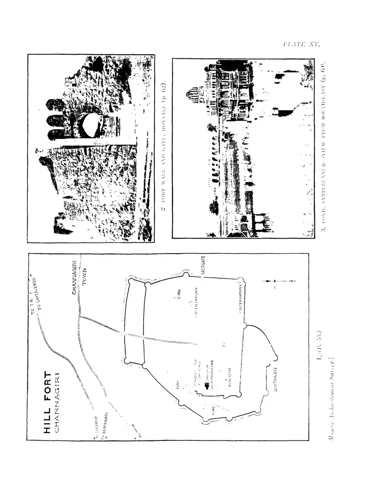
- 2 FORT WALD, AND GAVE, HONNAHL (p. 62)
- (p. 55)
- POND, SINTELENNTE-ARPW FROM SOUTH-LAST (p. 60)
The building has a small navarainga of four pillars, a sukhanāsi and a garbhagriha on the west, a simple cell on the north and an open ańkaṇa on the east. (Pl. XVI, 1). The west cell contains a linga which is of course the old Kētēśvara. Since it is split into two, the pieces are kept together by a metal band. In the north cell stands Kēśava about 4 feet high, a fine image resembling the Hovsaļa type with the ten avatāras on the prabhāvalī. Its nose is damaged and its kirīṭa is peculiar. The open ańkaṇa on the east appears to have housed a Nandi image which has now disappeared. At its back is a perforated stone window. The outer wall of the temple shows three plain cornices below, while the wall is ornamented with plain right-angled pilasters. The towers of the temple have completely disappeared.
The roof is much damaged and overgrown with plants. The building is not very important but its Kēśava image and its finely shaped navarainga pillars are interesting.
The temple need not be included in the protection lists. But it could easily be saved from rum with a little effort. It is the only ancient one in the town and with local co-operation the following things may be done:
Conservation.
1. Its damaged walls may be repaired and the roof cleared of plants and covered with a concrete layer.
2. A battened wooden door may be provided and wire-netting introduced into the holes in the eastern window as at Haļebīd.
3. The flooring may be cement-pointed.
The Hill Fort
Hill; Fort; Buildings; Ranganātha Temple; Peculiar Main Image; Pañchamukhi Ānĵanēya; Tower; Modern Inscription; Bhūtappa; Kallumaĵha; Situation; General Description
The hill of Channagiri which rises to a height of about 200 feet to the west of the town consists of a single soft dark rock covered with earth which commands a wide plain which is now the Taluk.
It is said that the hill was tortified in the Pālļēgār days by Channammājī, queen of Bednūr and was named after her. The fort (Pl. XV, 1) consists of two rubble walls defended by moats, the chief gate being on the north where the gradient is lowest. To the north-west close to the top is a natural hollow, the rain water collecting in which is a source of water supply for the hill. On the north-east there is another rock-cut honda with stone-cut steps. This is a much better source of water supply.
On the top of the hill is an area about a hundred and fifty yards in diameter in which are found a number of rubble basements of old buildings. Of these a round cavalier exists on the south-east.
Buildings.
On the peak stands a temple dedicated to Śrī Raṅganātha. Architecturally the structure is quite unimportant though the two doorways might have been brought from some unimportant Hoysaĵa temple. The structure is all of brick and mortar with stone pillars of the Ikkeri type having square base, octagonal shaft, wheel moulding and a capital of dentil drops. The image which may after all date from the 18th century is interesting iconographically. It is called Bēte-
Peculiar Main Image. Raṅganātha and depicts Vishṇu standing in samabhanga holding chakra and śāṅkha in his back hands and arrow and bow in his front hands with a low Garuḍa pedestal below him and a consort in relievo on the prabhāvalī on each side. The image is not handsome but is peculiar.
The temple has a wooden disc-like image of a five-headed Hanumān sitting on a demon. The image is eight-handed and the attributes are not easily distinguishable as the image is much coated over with muck.
Panch-Mukhi Anjaneya.
Just to the south of the temple is the old flag-staff tower built of rubble stones. It is square in shape and its top commands a fine view of the country around.
Tower.
Opposite to the temple is an inscription stating that it was repaired by the order of Mr. K. Srinivasa Rao, Deputy Commissioner, Shimoga on 16th February 1913.
Modern Inscription.
To its south-west is a small shrine dedicated to Bhūtappa which contains the head of the god whose tongue projects out of his mouth.
KALLUMAŹHA.
About three furlongs to the east of Channagiri close by the Holalkere road and at a level lower than it is a large mound of earth which almost covers a Chālukyan stone temple now called Kallumaṭha.
It is almost exactly like the Kētēśvara temple in the town in kind and dimensions with this difference that the eastern Nandi ankāṇa
General Description. here is also converted into a cell. The original linga, Vishṇu and Nandi have all been lost and the turned pot-stone pillars and doorways are covered with chunām. On the south side most of the wall with its pilasters can be seen on either side of the doorway.
On the south-east stand two worn out inscriptions mentioned in M. A. R. 1914.
Part II: Study of Ancient Monuments and SitesSūlēkere
Siddhēšvara Temple
Situation; Mahādvāra; General Description; Outer walls; Eaves; Tower; Porch; Navaraṅga; Navaraṅga pillars; Ceiling and Stone Benches; Sculptures; Sukhanāsi and Garbhagriha; Date of Temple; Shrine of Goddess
To the north of the embankment of the Sūlekere tank is a small hillock on which is situated the temple of Siddhēśvara which is approached through a stone gateway supported on either side by a two-handed dvārapāla, having a mace in one of his hands. The inside of the mahādvāra has jagulis and is supported by pillars having the square base, the sixteen and eight-pointed shafts with the cubical, the pot, wheel and other mouldings generally met with in the buildings of the Keĵadi type.
Mahadvara. The temple consists of a garbhagrīha, a sukhanāsi, a navaranga and a front porch and is enclosed by a prākāra of rubble masonry.
General Description. The outer walls of the temple are quite plain. Those of the navaranga are raised up on a basement having four cornices of quite simple workmanship but for the dentil drop at the corners.
Outer Walls. The basement of the garbhagrīha consists only of two cornices, which are different from those of the navaranga.
The sloping eaves, however, run uniformly around the temple and at the four corners of the garbhagrīha have dentil projections upwards.
Eaves. The parapet is relieved at short intervals by stone rings and provided with stone conduits of simple design.
The tower is a stepped pyramid as at Dēvayīnda and elsewhere, and on the west face has on each cornice a kīrtimukha which is rather peculiar. On the east face is a stone projection over the sukhanāsi in front of which is a kīrtimukha of plaster work bearing a Tāṇdavēśvara group.
The original porch consisted of only two fluted pillars with stone benches running all round. The outer face of the railing is divided by round pillars into panels having figures of elephants, lovers, lions, trunked swans, etc. To this original porch was at some subsequent date added an extra aikaṇa on the north.
The navaranga has three doors: on the east, south and north. All of them to a greater or lesser degree appear to be in imitation of the Hoysaĵa type. All the lintels have Gajalakshmī figures with designs of turrets on either side, some of them being curvilinear.
The navaranga consists of twelve aikaṇas instead of the usual nine and has six pillars, two of which belong to one class, while the remaining four to another. The two pillars of the
8 former class are of peculiar and elegant design having square-shaped and bell and pot mouldings. The four of the latter class have each a square base, and a thirty-two fluted shaft with cubical, pot and wheel mouldings. The pot moulding is relieved at each cardinal point by a small panel having the figure of a god, while the flutes have in the middle a band of scroll design.
The main ceiling of the navaraṅga has a simple padma design. All round the Ceiling and stone Benches. navaraṅga along the walls run stone benches as at Doddagaddavalli and Keĵadi.
Against the western wall of the navaraṅga are kept on the stone bench a group of four Nandis and a relievo group of a royal couple riding on horse back. The identity of the couple is doubtful. Sculptures. Against the northern wall on the bench is placed an image of Vishnu as Janārdana with the mace-hand damaged. The bull kept in the navaranga was headless; but a disproportionately small head and hump have been added recently.
A Gajalakshmī doorway leads into a small sukhanāsi. In the garbhagriha appears in the midst of a low stone pedestal the top of a natural rock the central portion of which has the shape of a linga, with an indentation on the head. Sukhanasi and Garbha-griha.
The temple has numerous features as for e.g. , the pillars, the stepped tower, etc., which preserve the Hoysaĵa tradition on granite. But the style is not Hoysaĵa. An inscription placed near the main doorway bears the date Š 1468 or 1546 A.D. On the dīpastambha is the standing image of a bhakta having the look of a Vijayanagar period image. It may well be surmised that the temple belongs to the early Vijayanagar period when perhaps the Hoysaĵa tradition was yet lingering. Date of Temple.
To the south-west of the main temple is the shrine of the goddess Durgā having a garbhagriha and a porch of rude Dravidian pillars. Shrine of Goddess. The doorway is in imitation of Hoysaĵa type. The image however is a rude relievo of Kāpālikā form with two hands, the right holding a padma, and the left a kapāla. On the pedestal are carved the figures of two lions with that of an elephant between them.
Part II: Study of Ancient Monuments and SitesKere-Bilĵachi
Ancient Site
Overground survey of site; Coins
No heading in the body: this section starts at its printed page (58-60).
About one and a half miles from Sūlekere, is the ancient site near Kerebilachi. On the way at the north-west corner of the tank and close to the Santebennūr road are two high grounds which are now covered with ploughed fields. Both of these show signs of having had rubble and mud fortifications and there are clear signs that they were inhabited until about a hundred years ago. There are nearly three Ancient Site. hundred Muslim families in Kerebiļachi whose ancestors are said to have come from Raya-Vellūr about 120 years ago.
An overground survey of the site showed the existence of earthen fort walls, and a Hanumān temple of potstone near the south gate with the image facing to our left, in a striking attitude. Potsherds are strewn about the area and the mounds show here and there the foundations of old buildings. In front of the Hanumān temple, and half-buried in the ground lies a finely worked potstone Chālukyan pillar which proves either that this was brought from elsewhere or that a Chālukyan temple existed nearby.
It is a píty that the numerous gold coins reported to have been found in the place have been melted. The following eight copper coins were produced by three of the Muslim leaders of Kerebiļachi : coin 1 by Mohadinkhan Sab of Kerebiļachi, coins 2—7 by Santebennur Mohadin Sab and coin 8 by Mayakunda Mohadin Sab :—
1. Ae. large.
Obverse :—Kneeling Garuđa.
Reverse :—Nāgārī—3 lines.
Śrī pra . . .
Kṛi shṇa rā ya
2. Ae. Small.
Obverse :—Standing Garuđa.
Reverse :—Not clear.
3. Ae. Small.
Obverse :- Tow-headed eagle (?)
Reverse :—To be cleaned.
4. Ae. Small.
Obverse :-- Reclining bull to left.
Reverse :—Nāgārī legend.
First line not clear.
Second line perhaps Dṛra
5. Ae. Small.
Obverse :—Umāmahēṣvara (?)
Reverse :—Not clear.
6. Ae. Small, thin and wide.
Obverse :—Reclining bull to left.
Reverse :—Chequered reverse with dots in interspaces.
7. Ae. Small.
Obverse :—Bull moving to left.
Reverse:—Plough. This is said to be characteristic of many coins found in this place.
S. Ae. Large. Bijapur coin with Persian legend on both the obverse and reverse.
The information about the ancient sites and coins was obtained through one Majid Baig of Kere-Bilachi.
Part II: Study of Ancient Monuments and SitesSante-Bennūr
Modern Temple; Site of Old Temple; The Musafīrkhana; The Pond; Conservation
To the west of the Musafirkhana at a distance of about a hundred yards, a new temple has been built by Mr. M. Venkata Rao, Inspector of Schools. It is a building in size stones in mixed architecture. The object of worship there is a sculptured group of Śrī Rāma (?) holding chakra and śankha, bow and arrow, with Garuđa on pedestal. Hanumān to right and Sitā to left and a scroll band around head. It looks more like an old relievo in low relief.
Just to the south of the temple is said to have stood the old temple of Śrī Rāma which was dismantled by the Moslems. Its Garuđakamba, having been struck by lightning, was used for making the pillars of the new temple. On the site of the old temple is now the Idga. In the interest of public peace it could be removed to some other place.
The musafirkhana is a large structure of granite having a large pillared hall with pointed arches. It is evidently a plainly built mosque. It is said that the stones of the old Śrī Rāma temple were freely used for this building and that the slabs covering the roof have under the concrete a large number of mutilated Hindu sculptures. Inside the hall is a mihrab with a stepped seat for the Koran.
The most interesting piece of architecture in the place is the beautiful and large pond which is about 100 × 100 yards with the sides completely built of granite steps. (Pl. XVI). Its main entrance is from the west while it has entrances also from the north, east and south. At each of the eight cordinal points stood a tower formerly, but six of them only are standing now, and there is a fine tower built on a rock in the centre of the pond and reached only by swimming. (Pl. XV, 3.) These several towers have a peculiar character. The structure of the first floor is invariably of granite stone with the pillars bearing numerous Hindu sculptures like Hanumān (north-west tower), lotuses, figures of donors (north-east tower) Gandābhērunđa, (Pl. VII, 2) dancing Krishna, etc. But the structure on the first floor and the towers are all built in the mixed Hindu-Saracenic style so familiar to us in some of the Vijayanagar buildings like the Lotus Mahal, the Elephant Stables and the Zenana compound towers at Hampe.
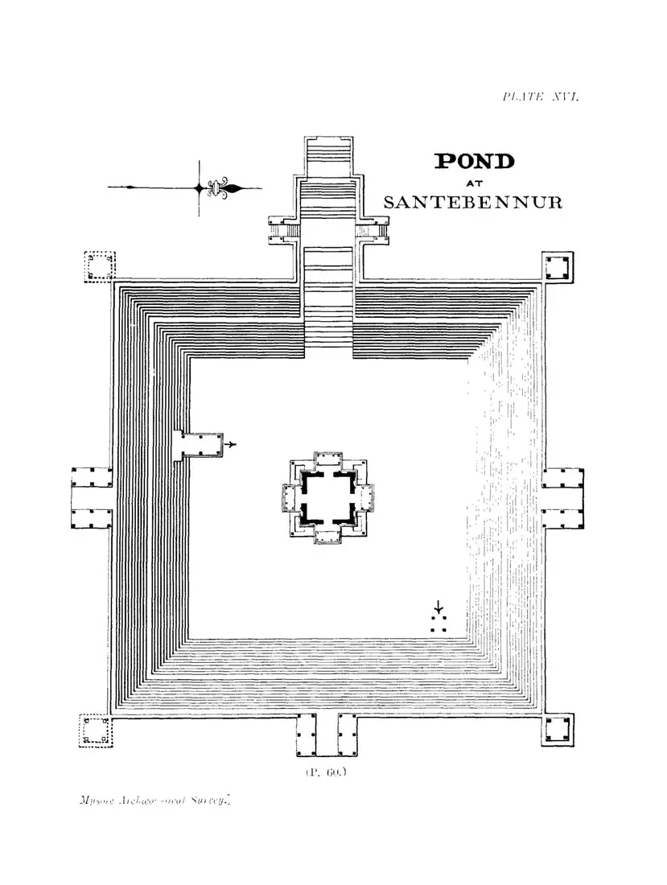
- (p. 60)
The bricks are typically of the 18th century, being broad and thin. Pointed arches are freely used as also projecting balconies. At the corners appear lotuses bearing eucumbers as in Masjids. But the central towers are invariably of the Kñshmāṇda type. This clearly shows an attempt of the Hindu builders to build on a mixed style. There can be no doubt that the structures are Hindu primarily.
The tower in the centre of the pond is the most remarkable. It rises on a square base with two minaret-like pillars on the east side. The first floor has projecting stone balconies supported by mango-drop brackets but having pointed arches. The first floor is also of stone; but the tower and the highly ornamented parapet around it and the sikhara are all of brick and mortar, almost Indo-Moslem in style; but the fact that two naring lions form the centre of the eastern group while rows of elephants, swans and Gandabhēruṇdas adorn the parapet, shows their Hindu authorship. The Gandabhēruṇda was an emblem of Achyuntarāya of Vijayanagar and later on was adopted by the Nagar Pāllēgārs. Perhaps it was also the emblem of the Tarikere Pāllēgārs.
The pond has two other towers. The one over the drain leading water into the pond from the south is highly interesting. It is a soap-stone structure of six pillars which are in imitation of Hoysala pillars. Four of them are octagonal but show the disc, the bell, the pot and the wheel mouldings, though the details of the beading work are not Hoysala. The two westernmost pillars are the most interesting since they are in exact imitation of Hoysala work, being even lathe-turned and polished. But the sculptures like Krishṇa dancing with butter in his hand and the Gandabhēruṇda guarding it from a group of birds belong to a different age. (Pl. VII, 2.)
Since the pond is the only source of fresh water supply to the place and its towers are interesting architectural experiments, they should be carefully preserved. The water should be used only for drinking purposes, the inlet and the outlet on the north-east being occasionally cleaned. The plaster work of the tower, in so far as it remains, may be artistically touched up and repaired. Grass, etc., growing on them may be removed. The neighbourhood, particularly the pit on the south side, should not be allowed to be fouled, but should be kept clean. No trees of any kind whatsoever should be planted or allowed to grow within a hundred yards of this structure.
The Musafirkhana is intact and in good repair. Cooking inside it should be strictly forbidden; a small kitchen may be built nearer the pond, if possible to its north where it would be unobtrusive.
The decision of Government to use the building strictly for a non-religious purpose appears to be the best under the circumstances. The niche and the stepped seat near the west wall may be removed, thus preventing the provocation of sentiments. A separate place for the Idga may be provided and the Moslems of the village may be encouraged to construct a good Masjid in some other quarter.
There is a tablet recently put under the mihrab which reads :—
“This building is a Musafirkhana and cannot be used as a Masjid. Any violation of the purpose is punishable.”
Honnāĵi
Mallikārjuna Temple
History; General Description; Sculptures; Ceilings and Pillars; Importance
Honnāli is an ancient place which appears to have been ruled by Permāđi, a Gaṅga chief of Yeđatore and a subordinate of the Chālukya Trailokyamalla Sōmēśvara. The latter's chief queen, Hoysalādēvī (perhaps the daughter of Nrīpakāma Hoysalā) got constructed a small stone shrine for Mallikārjunēśvara in the place which she calls in the inscriptions as Mallikēśvara Tīrtha (1055 A.D.).
The temple which has a tower of the Pālļegār period and whose outer walls have been recently covered over with plaster, is a small structure, architecturally unimportant. It has a small garbhagrīha housing a natural linga on a low round pedestal, an open sukhanāsi and a low-roofed navaraṅga with an open extra ańkaṇa on the north and an extension ańkaṇa on the east.
It houses now a Saptamātrikā group with the face of Chāmuṇdā broken and supported by Vīṇādhāri Vīrabhadra and Gaṇēśa ; a larger figure of Gaṇēśa with tusk, goad, trident and apūpa ; nāga stones. Bhairava with the left front hand broken and dancing Bhētālas partly mutilated, a Sūrya figure supported by Chhāyas and having a serpentine tōraṇa with mango-drops and a Nandi which is not completely worked.
The ceilings are all plain except the central one which has a reliefo padma. The four central pillars have cubical mouldings connected by an octagonal shaft the corner faces of which have two flutings each and a roughly chiselled wheel moulding.
Ceilings and Pillars.
There is nothing remarkable about the temple except its antiquity and the sculptures which are of good quality.
Importance.
Honnāĵi Fort
Conservation; Viragals
(Pl. XV, 2).
The old town which extends close upon the left bank of the Tungabhadrā has a ruined fort wall roughly oblong in shape. A moat runs around it but the stone facing of the wall has been almost completely removed. The east gate near the river, however, is intact. It is built of rough stones without mortar and has a pointed arch and pointed arch-like battlements strongly resembling Bijapur structures. By the side of the gate is a round bastion with a cannon platform.
The local people have much sentimental regard for it, because it is connected with the history of their place. With a small expenditure it can be saved from ruin. The damaged stone revetment under the cannon platform may be repaired and the stones cement-pointed. The brick structure above may be removed or preserved and the rest of the structure repaired without interfering with its old architectural features. No purpose would be served by preserving any other part of the fort.
Conservation. The three vīragals to the east of the Mallikārjuna temple are now buried in the earth. They may be unearthed and kept in the courtyard of the temple.
Viragals.
Part II: Study of Ancient Monuments and SitesKuruvadagađde
Rāmēšvara Temple
Situation; General Description; Early structure; Sculptures; Later structure; Inscriptions
Gōvinakōvi is a wayside village to the east of the road from Honnāļi to Shimoga and about 7 miles from the former. About half a mile to its east is an island in the Tungabhadrā known as Kuruvadagadde and on it stands a temple of Rāmēšvara. A large stone lamp pillar with footrests faces its south door. But the temple itself faces east.
Situation. The temple appears to consist of two parts. The earlier one consists of the small garbhagriha with a small sukhanāsi with perforated windows supporting the jambs, and a navaraṅga of four pillars having cubical mouldings connected by octagonal shafts and circular mouldings above. The central ceiling has only a shallow padma. There is nothing remarkable on the outer walls and the whitewashed vimnāna may be of a later date. The sukhanāsi and navaraṅga doorways are plainish Chālukyan pieces.
In the navaraṅga are kept a number of interesting images:—
Sculptures.
1. About a dozen nāga stones rather plain.
2. Three bearded Šaiva yōgis in padmāsana with hands in yōga-mudrā. with pointed beard and hair dressed in jatā like turbans tied round their heads. They wear rudrāksha garlands, rudrāksha armulets, bracelets, large pendent ear-rings. On the side of each is the daṇla and kamaṇjalu . The first has a serpentine tōraṇa with simhalalāṭa . The second has the moon and sun near head, while the third has also a simhalalāṭa . The identity of these figures would be interesting.
3. Sūrya standing.
4. Vīrabhadra.
5. Gaṇēśa.
6. Durgā seated.
7. Mahishāsuramardinī.
8. A small linga.
9. Small Nandi.
The central ceiling has a shallow padma and below it a damaged Mahrati inscription.
To the east of the navaraṅga is an outer hall of (east to west) 3 X (north to south) 6 aṇkaṇas with a projecting extra aṇkaṇa to the east with a doorway. Here is a large recumbent bull whose thinness and conventionalised dewlap remind us of the Banavāsi bull. To the north of the hall is a small cell containing a small stone image of Bhairava standing under a serpentine tōraṇa of undoubted Chālukya or Hoysala workmanship. The hall appears to be an additional structure of a later date built out of heterogeneous materials some of which are ornamented soap-stone pieces of Hoysala workmanship. The south door is supported by perforated screens. Four finely fluted Chālukyan pillars of soap-stone are lying to the south-east of the temple.
Around the temple are a number of inscriptions the oldest of which dates from the 36th year of the Chālukya Vikrama era. The Hoysalas, the Yādavas and the Vijayanagar kings have left their records also and a large jātra even now takes place on the island. On the north-east side of the temple is lying a worn out Kannada inscription which is to be read. It is probably of the Rāshṭrakūṭa times.
To the right of the south doorway has been built into the wall a fine large soap-stone slab bearing a Haĉ-Kannaḍa inscription of probably the Yādavas.
The Mahratas appear to have had their share in the reconstruction of the temple as evidenced by a Marathi inscription on a pavement slab in the navaraṅga reading: 'Sankarji Kāśirāmnji Venkaṭādri'; by the lamp pillar in front of the temple; and by the figure of Hanumān on the front face of the projection over the sukhanāsi in front of the tower.
Part II: Study of Ancient Monuments and SitesNanditāvare
Amritalingamānikēšvara Temple
Situation; Age of Temple; General Description; Outer Walls; Cornices; Wall Images
No heading in the body: this section starts at its printed page (64-68).
Nanditāvare is a village about half a mile east of the high road from Harihar to Male-bennur, the deviation being about eight miles
Situation.
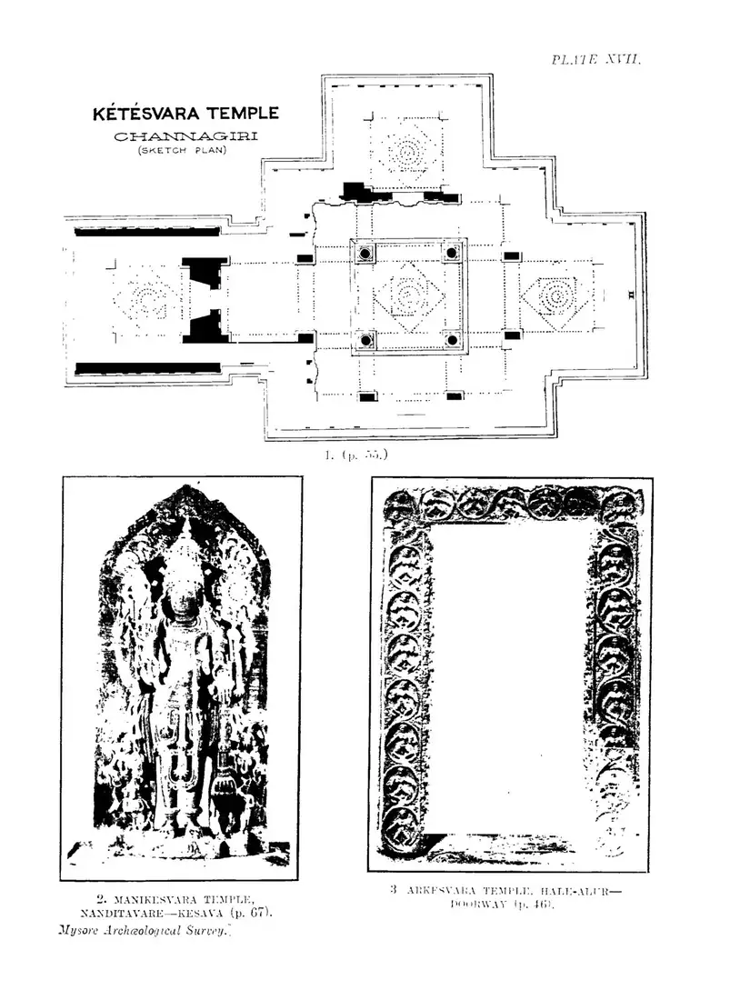
- (p. 55)
- MANIKESVARA TEMPLE NANDITAVARE—KESAVA (p. 67)
- ARKFSVARA TEMPLE, HALE-ALUR— DOORWAY (p. 46)
from Harihai. It has a Hoysala temple dedicated to Šiva known as Amṛita-linga-māṇikēśvara.
The temple appears to have been constructed by a Hoysala officer Māṇikaṇṇa in about 1220 A.D. for his merit.
Age of Temple.
The structure is of soapstone and finely ornamented with beautiful sculptures.
It has a garbhagrīha, a sukhanāsi and a navaraṅga of four pillars with a small northern cell. But the porch which ought to have been in front of the navaraṅga doorway and the outer walls of the nwaraṅga have all been covered over with a recent structure in the shape of a manṭapa which is now used as a school. At the east end of the manṭapa is a linga room containing a beautiful bull of soapstone. The vimāna and its frontal projection which must have been very ornate, have all disappeared and a damaged Sala group is lying in the revetment to the south-west of the temple.
The plan of the garbhagrīha is generally square but the outer walls have central projections and pilasters. The outer wall of the garbhagrīha however is visible in all its old beauty though its sculptures are somewhat damaged. It has five finely shaped cornices, three of which are beautifully sculptured: the upper and lower ones with a tastefully designed creeper and the middle one with a row of rearing lions slaying elephants or fighting Sala.
Cornices.
The upper wall has a row of images almost two feet high without canopies. They are proportionally shaped and show high class
Wall Images. They are, in order commencing from the south-east:—
1. Indra with vajra, goad, mace and phala with elephant in the right corner.
2. Four-handed and skeleton-bodied Šiva (or Bhairavī ?) dancing.
3. Bhairava.
4. Brahma (?) with lotus, sruk, sruva and phala with an elephant-like animal near foot.
5. Dancing Gaṇēśa.
6. Rati.
7. Manmatha.
8, 9. Two chāmara-dhāriṇīs guarding a vacant niche over which rises a curvilinear turret of about nine tiers.
10, 11, 12. Kōdaṇṭarāma with Lakshmaṇa and Hanumān. The last who is in the striking attitude and much damaged must have been a beautiful piece of sculpture judging by the pose of what remains now.
9
13. Standing god (perhaps Harihara)—sword, javelin, padma and phala with Garuđa near the right foot.
West Wall—
14. Ardhanāriśvarā with hands broken and bull and mangoose near feet.
15. Mōhinī at toilet, mirror in hand.
16. Mōhinī standing in tribhaṅga.
17. Dakshiṇāmūrti.
18, 19. Attending figures on either side of the west niche similar to the south one.
20. Mōhinī with monkey.
21. Mōhinī with mango bunch.
22. Mōhinī with parrot.
(All these are fine sculptures but damaged.)
23. Harihara (broken, trident, chakrā, broken) with bull and Garuđa near feet.
North Wall—
24. God standing (broken, goad, pāśa and phala) with quadruped (broken) near foot.
25. Śiva standing (mutilated) with Nandi near foot.
26. Arjuna with bow in right hand and kapidhvaja in left.
27. Bhīma—dancing—two-handed, with broken mace and phala (mutilated).
28, 29. North niche flanked by attendants and a fine mutilated Bhairavī group now kept inside it.
30. Unworked.
31. Pārvatī as Bhillī.
32. Dakshiṇāmūrti with long coat.
33. Two-handed man (king ?) with dagger in right hand wearing short loin cloth, yajñōpavīta, kuṇđalas and two high wooden sandals. Perhaps the donor Mānikaṇṇa.
34. Pārvatī—two-handed.
35. Śiva standing (symbols broken except goad).
36. Durgā dancing (sword, trident, drum ; bowl and man's head).
Above the double cornice is a row of rearing lions fighting Saļa.
The parapet and the tower are completely lost.
Since the front of the temple is covered up by a recent wall only the doorway is visible. It has two chunam covered dvārapālas and ornamental pilasters with an unworked lintel. The navaraṅga which is about 17' × 17' has four pillars of the round
Inner view
Navaranga Doorway; Pillars; Ceilings; Sculptures; North Cell; Kēšava; Talismanic Betel Grower; Sukhanāsi; Garbhagrīha; Bull-manĵtapa; Worked pieces; Conservation
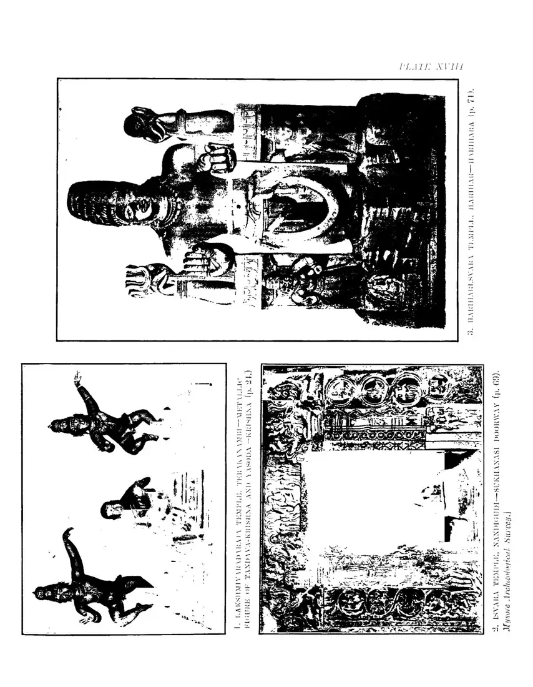
- LAKSHMIVARADARAAY TEMPLE. TERAANA AMBI—METPALIC FIGURE OF TANDAVYA-KRISHNA AND YASODA—KRISHNA (p. 24)
- ISYARA TEMPLE, NANDIQUDI—SUKHANASI POORWAY (p. 69)
- HARHAMESVARA TEMPLE. HARHAME—HARIHARA (p. 71)
lathe-turned type whose beading sculptures have not been completed. The pilasters against the walls are of the indented square pattern. The ceilings are all blank, except the central one which is a beautifully carved piece, though flat in character. It is divided into nine squares by finely ornamented bands. In the centre is Tāṇḍavēśvara dancing on the body of Andhakāsura with
Pillars. Brahma to right and Vishṇu to left. The god is eight-handed. In the panels around are beautifully carved figures of the eight Dikpālakas some of which deserve to be studied individually. A
Ceilings. special feature of these nine panels is that the ground around each main sculpture is minutely carved into a large number of soldiers and attendants consisting of musicians, trumpeters, drummers, dancers, etc. Special mention may be made of Indra's fine elephant and Niruti's demon flying in the air. But Kubera's horse has an unnaturally long body.
In the navaraṅga are kept a number of fine sculptures:—
Sculptures.
1. Seated Sarasvati in a shallow niche on swan pedestal. It is much covered with muck and requires cleaning.
2. Saptamātrikā panel.
3. Gaṇapati.
4. Mahishāsuramardinī in a fine large niche. The group is peculiar since the buffalo is absent. The lion is thrust into the background and the goddess is spearing a rākshasa whom she has forced down on his knees. The goddess holds in her eight hands spear, arrow, sword, chakra, śankha, bow, shield and demon's forehead. The group is fine and spirited.
5. Shaṇmukha in a shallow niche. He rides on a fine peacock and holds rosary, goad, śakti, pāśa and phala.
6. Umāmahēśvara—The stone is much worn by actions of water.
7. Nāga aud Nāginī standing. The peculiar feature of this group is that they are standing on their feet while the cobras have wound themselves around their legs spreading their hoods above. The Nāga's snake has seven hoods, while his consort's has five.
8. A small Nandi of a later date is kept near the sukhanāsi doorway.
The small cell to the north of the navaraṅga is entered by a door with perforated screens. In it on a simple padma pedestal stands a beautiful image of Kēśava about five feet high. (Pl. XVII. 2). It is in samabhaṅga and is finely ornamented with
North Cell.
padma, ṣankha, chakra, and gadā—particularly the first one finely chiselled out. On each side of him stands a group. On his right is Bhūdēvī Kesava. holding garland (? and kalaśa. Garuḍa kneels in front of her, while a female attendant holds up from behind her a chāmara to the god. On the god's left near the mace stands Lakshmī with phala and padma, a chāmaradhāriṇī behind her and young prahlāda with uplifted right hand in front of her. Behind Lakshmī's attendant is an elephant. Around the god's head is a fine tōraṇa of the serpentine type with a simhalalāṭa above and the ten avatāras around.
A peculiar magical appliance which is expected to cause betel leaves to grow well if it is ornamented with a thousand betel leaves and taken out in procession is kept in the temple and has been described in M.A.R. 1912.
Talismanic Betel Grower. The sukhanāsi doorway is flanked by Śaiva dvārapālas and perforated screens. There is Gajalakshmī on the lintel. A Tāṇḍavēśvara Sukhanasi group with Brahma and Vishṇu is carved on the architrave. The donative inscription of Mānikaṇṇa is on the beam above. The small sukhanāsi has a shallow padma ceiling as also the garbhagriha. In the latter, on a round pedestal is a small natural linga with a tapering head.
Opposite to the temple in the recently erected manṭapa is kept a fine large bull of soapstone evidently of Hoysaṭa workmanship. It is said to have been formerly housed in a shrine with the perforated windows that are now on either side of the shrine that now houses the bull.
To the south of the temple near the village well lie some more worked stone pieces like the perforated screens, etc.
The temple and its sculptures are protected monuments of Class III. The inside of the temple is kept in a very dirty condition and the navaraṇga is a store house for gymnastic and other kinds of materials. It should be cleared of all these and the flooring reset and cement-pointed. One slab of the central roof has slipped and should be restored to its original position, if possible. The outer walls of the navaraṇga probably bear sculptures inside its mud covering. The latter should be removed and the original wall exposed at least on the north and south. The front manṭapa, though recently built, is strong and may be allowed to remain as it is. The back of the temple should be cleared of thorn, etc., and the sculptured pieces like the Saṭa group which are lying around the temple may be preserved in the Bull manṭapa.
The village road may be given a short extension so as to reach the temple.
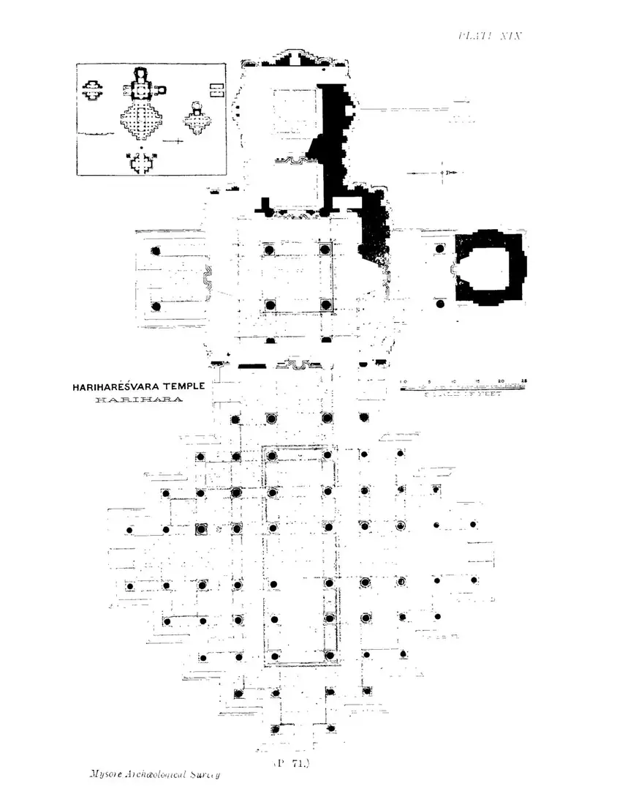
- (P 71.)
Cited in the text: p. 71 ↩
Part II: Study of Ancient Monuments and SitesNandiguđi
Ķšvara Temple
Situation; Age of Temple; General Description; Sukhanāsi Doorway; Perforated Screens; Lintel; Dvārapālas; Sculptures; Navaranga Pillars and Ceilings; Bull; Sūrya Cell and Image
Nandigudi is a small village on the right bank of the Tungabhadrā about 13 miles south-west of Harihar as the crow-flies. In the field Situation. to the south of the village and close to the river, stands an old temple of İśvara, in front of which is a vīragal of C. 930 A.D. commemorating the bravery of a Gaṅga chief in the days of the Rāṣṭrakūṭa emperor Suvarṇavarsha. (Close to it was found a modern Kannaḍa inscription).
The temple itself shows signs of belonging to about the 10th century.
Age of Temple.
It consists of a garbhagrīha, a small closed sukhanāsi and a navaraṅga which has six pillars with the central ankaṇa very large. The outer
General Description. walls of the navaraṅga are completely covered up, while the place of the disappeared old tower is taken by an ugly modern one. Though the outside of the temple is thus rendered architecturally worthless, the inside is ornamental and contains several good sculptures.
The garbhagrīha which has a low relievo padma in the ceiling has on a low square pedestal a largish linga with a tapering head. The garbhagrīha doorway has Gajalakshmī on the lintel but is otherwise a plain one.
The sukhanāsi which contains a small Nandi is unimportant except for its beautiful doorway of hardish black stone. (Pl. XVIII, 2).
Sukhanasi Doorway. Its jambs have each a Śaiva dvārapāla above whom rise an indented square pillar and three vertical floral scroll bands. On the outer side of each jamb, but carved in the same slab, is a perforated screen carved in the form of a creeper scroll as in the windows at Nandi. The right or south screen has four flying Vidyādharas, two of whom are
Perforated Screens. trumpeting and two others, a male and a female, are carrying flowers.
The north screen shows a woman dancing (?) with upraised left hand accompanied by a drummer and flutist, while a man is seated with upraised right hand (either in singing or the appreciation attitude) and a drummer plays on a ḍavaṇe.
The lintel piece which is about 7 feet long is interestingly carved. In the centre under an elongated serpentine tōraṇa with hanging mangoes and without the lion face is Śiva dancing as Gajāsuramardana, though the elephant is absent. He is supported by a goddess and Brahma on the right and a goddess and Vishṇu on the left. On each side is a four-footed makara ridden by a god while to further north is a conventionally manned lion and to further south a human-headed manned lion or sphinx.
To further right as also to further left stands a Šaiva dvārapāla of polished black stone, about six feet high, with the hands thus disposed: abhaya, trident, damaruga and mace. Each wears a jatāmakuṭa, the archaic smile with the fangs showing, garlands and necklaces, yajñōpavīta, armlets, girdles, anklets and other ornaments and hooded cobras wound round the trident and the mace. The figures have an imposing appearance. In contrast with the figures the tōraṇas are carved in low relief.
Against the western part of the navaraṅga wall are placed a number of sculptures: two Saptamātrikā groups—one of them with Chāmuṇdā shown as goblin Durgā, two Gaṇēśas, and one Mahishāsuramardinī treading on the buffalo with her right foot and spearing the demon emerging from its neck. The buffalo's head and horns are realistically shaped. The image of a seated Durgā is worn out.
The four main pillars of the navaraṅga are round lathe-turned ones of definitely Chālukyan character. The rope, the bulging bellied bell and the pot are finely done, though the wheel and upper portions are unpolished. The pilasters on the north wall and a beam above them suggest that ancient renovators have rebuilt the temple. The other pillars and pilasters are all very plain and right angled. The central ceiling has a shallow padma in relief while the other ceilings are all plain.
The largest object in the navaraṅga is a large finely carved black stone bull. It is eight feet long and six feet high and faces the linga. It wears an ornamental headband, belled necklets and garland of bells, etc. Its snout is very narrow, its teeth showing and its tail slightly lifted in joy.
Behind Nandi, at the east end of the temple is a small cell containing a figure of Sūrya standing with a lotus in each of his two hands. His nose is damaged, his pedestal missing, his Chhāyas delicately chiselled out and his legs broken and pieced together. The tōraṇa is peculiar for on the pillars sit two-legged, peacock-tailed makaras with ten Yakshas and nāgas in the tōraṇa panels. The tiara is peculiar and long. It is no doubt an old sculpture which has seen rough days. It is not elegant, since it is wide in the hips and too short for its size.
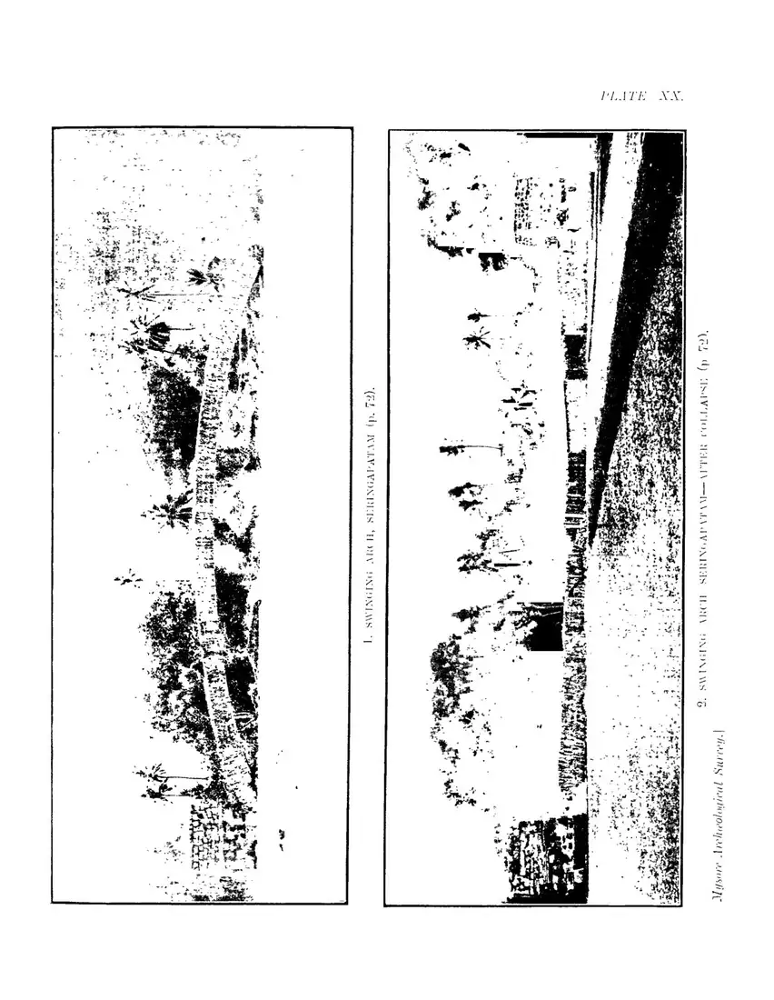
- SWINGENG ARCH II, SEIRINGAPATAM (p. 72)
- SWINGENG ARCH IV, SEIRINGAPATAM — ATEITEA COOL REFLECT (p. 72)
Cited in the text: p. 72 ↩
Part II: Study of Ancient Monuments and SitesHarihar
Hariharēšvara Temple
The Harihara Image—A close study; Navaranga Doorway; Conservation; Seringapatam; Swinging Arch
In the image of Harihara the right half is Šiva and the left half is Vishnu (Pl. XVIII, 3). The god stands knee-deep on a stone box.
The Harihara Image :
A close study. He holds in his four hands abhaya, trident, chakra and śankha and wears a combined jaṭā and kirīṭa makuṭa, necklets, yajñōpavīta, waistband, waist-cloth, waist-hangings, etc., and only a uḍudāra and kaupīna and no dhoti . The original image consisting of the head, and the legs up the knee are beautifully proportioned and show signs of water action. They and the torso are of a slightly brownish tinge. They probably hail from even the early Chālukya or Rāshṭrakūṭa times. Evidently the image was intact when Pōlāļya Dandanāyaka built the temple for it. But it must have suffered at the hands of iconoclasts and thrown into water until it was restored probably by the Mahratas. Since no new legs would help to support the image its broken knees were mounted on its old pedestal. The nose and mouth were trimmed with cement and the right thigh was similarly fixed. Two supports each supporting a rude consort were made to support the two hands on each side. The right shoulder is original and the left one is new. The later additions are of soapstone and black with oil. This is a unique instance of a broken image being installed. The pieces are :—
Old :—1. The head.
2. The torso with left thigh.
3. The right thigh.
New :—4. Right support with the right arms.
5. Left support with left shoulder and two left arms.
For the plan of the temple see Pl. XIX. The navaranga doorway is published in Pl. XV, 1 of the Annual Report of this Department
Navaranga Doorway. for 1932 with the wrong title —sukhanāsi doorway. It is finely designed and elaborately carved. The jamb contains two attendants above whom rise two pilasters and several floral scrolls, one band of gryphons and another of a series of nāga couples as in the Bēlūr garbhagrīha doorway but not so deeply carved.
1. The houses to the south and east of the temple should be acquired and the compound extended to a quadrangle including the old
Conservation.
gates.
2. The road approaching the temple should be widened as far as possible.
1. Described in M.A.R. 1932.
3. The ground around the temple should, if possible, be lowered by a foot or two without detriment to the drainage.
4. Further whitewashing should be forbidden and the old whitewash should be scraped off all the stone surfaces including the finely carved doorways.
5. The monument and its inscriptions should be declared protected and a board should be put up prominently.
6. The ground of the east mahādvāra should be lowered as far as possible, the original level being about three feet below the present level.
7. The breaking of cocoanuts and burning of large quantities of oil or camphor inside the sanctum should be stopped.
8. Electric lighting by means of concealed lights should be installed when Harihar gets a supply of power.
9. It would be better to remove the shrine of Baḍabanddēśvara and install the linga in the Bhairava shrine.
10. The steps leading to the river may be improved.
11. The temple is visited daily by a large number of devotees and the expenditure is worth incurring.
SERINGAPATAM.
On page 58 of the Mysore Archæological Report for 1935, a brief description of the Swinging Arch at Seringapatam has been given and in Swinging Arch. the footnote it is mentioned that the arch collapsed on July 2nd, 1936. An enquiry was made by the Director of Archæology accompanied by the Executive Engineer, Mysore District. about the causes of the collapse and a report was submitted to Government. It was recommended that a fencing should be put up around the ruins, the cracks and fissures filled in and a suitable explanatory note put up on a board close to it. Restoration of the old structure to its original condition was considered to be archæologically unnecessary. The illustrations 1 and 2 on Plate XX show the arch in its original condition and after collapse.
Part II: Study of Ancient Monuments and SitesNew Stone Images
Garuđa
No heading in the body: this section starts at its printed page (72).
The image of Garuḍa facing the Vijayanārāyaṇaswāmi Temple at Bēlūr was found to be cracked horizontally. A new image was got prepared at the hands of Mr. Javarāyāchari and sent to Bēlūr for being set up. It is illustrated on Plate XXI, 1.
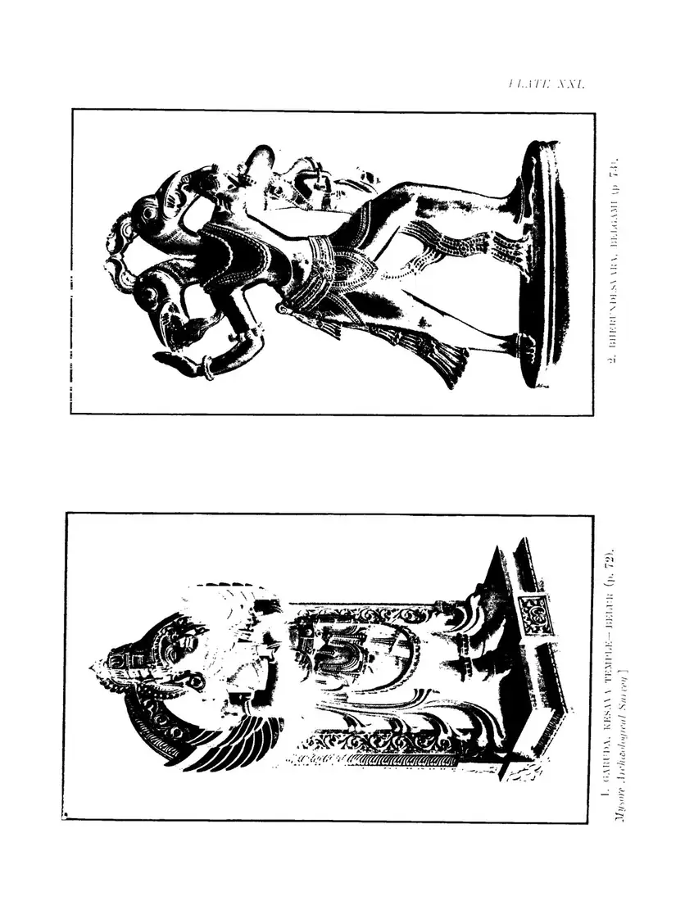
- GARUDA, KESAY A TEMPLE—BEIJER (p. 72)
- BIEHRUNDSA ARA, BELGAMI Cp 734
Bhērunđēšvara
No heading in the body: this section starts at its printed page (73).
The fine stone image of Bhērundēśvara set up on a tall stone pillar at Belgāmi in the Shikarpur Taluk of the Shimoga District was thrown down by unknown vandals and broken to small pieces. Bherundesvara.
The Government desired that a new image should be prepared similar to the old one and set up. Accordingly a new image of Bhērundēśvara was got prepared by the Director at the hands of Mr. Siddhalingasvāmi of the Nāgalinga Matt, Krishnaraja Mohalla, Mysore, a talented sculptor with considerable learning in iconography. It is illustrated on Plate XXI, 2.
10
Part III: Numismatics
PANDYA COINS
(Pl. XXII).
Before 1200.
Before 1200
Pānđya Feudatories of the Chōlas
TYPE A:— Standing and seated King, Fish and Crozier 1 .
1. Ae. In two different sizes.
Obverse:—Rude standing king of the Chōla type with sceptre to left, and uncertain pellets under moon to right.
Reverse:—Chōla type seated king with large fish and crozier to right.
In the absence of a legend, the rudeness of the king's figure compared with the Chōla issues suggests the date C. 1120.
TYPE B:— Standing King and Tamil legend.
2. Ae . 7
Obverse:—As on 1, rude standing king. 2
Reverse:—Under moon, three-line Tamil legend, read by Elliot as Korkai Āṇdār .
Korkai Āṇdār or 'Ruler of Korkai' is an old Pāṇdya title as the Pāṇdyas were formerly rulers of the great part of Korkai.
TYPE C:— Standing King, Fish and Tamil legend.
3. Ae . 75
Obverse:—In circle of dots, standing king with pelleted lozenge and Tamil su reversed, to right.
Reverse:—Fish with lamp on each side and Tamil legend around, reading:
Sa ma ra Kō lā ka la
Type D (i)
Standing King, two Fish and Tamil legend.
4. Similar to 3, but two upright fish on the reverse in place of fish and lampstands.
Legend: Sa ma ra Kō lā ka la
1. Illustrated in M. A. R. 1934 Pl. XVIII, 21.
2. ECSI. No 139.
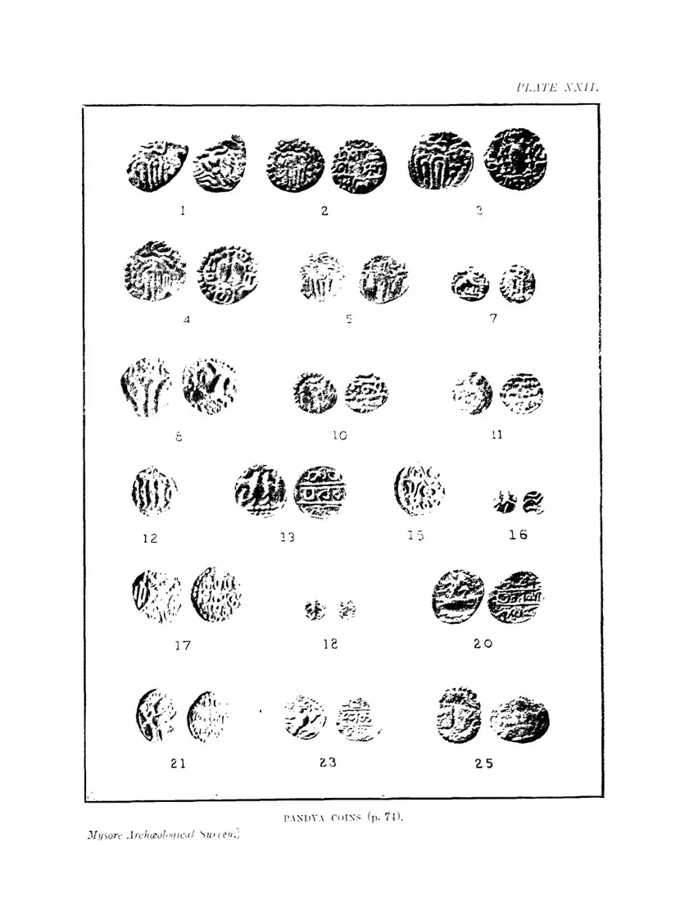
- PANDYA COINS (p. 74)
Cited in the text: p. 74 ↩
Type D (ii)
Standing King, Fish and Vira Pandyan.
5. . 65 Half value.
Obverse :— In ring of dots standing king of the Chōla type.
Reverse :— In ring of dots between two lampstands, two fish with crozier between them and above, Tamil legend :
Vira Pā n (ta) ya n
No definite attribution of this coin has been made here as the name Vira Pāndya, like Māra and Sundara, is very common ; for example there are five Vira's in the second half of the 13th century. The Chōla figure suggests that the coin may be even a century earlier. A Vira Pāndya is named on Rāja Rāja Chōla's Boar type.
TYPE E :—Standing King and Elephant.
6. Ae . 6
Obverse :—Very rude standing king.
Reverse :—In rude circle of dots, tusker elephant to left with lowered trunk and lifted tail, and Tamil Ma between conch and discus on top.
The rudeness of the king's figure would place the coin C. 1170. It is doubtful if the elephant has any Gaṅga associations. Ma may stand for some Māravarman, perhaps the one preceding Jaṭāvarman Kulasēkhara I, who reigned from 1190 to 1217.
TYPE F :—Bull and Fish.
7. Ae . 45
Obverse :—In rude ring of dots, humped bull standing to right, with moon above and lampstand in front.
Reverse :—In ring of dots crozier between two upright fish.
The Chōla bull would indicate the reign of Kulōttuṅga Chōla III (1178-1218).
TYPE G :—Horse and Fish.
8. Ae . 75
Obverse : In circle of dots horse with arched neck prancing to right with royal umbrella supported by two chāmaras above.
Reverse :—In ring of dots, crozier between two fish bending outwards. Above, small couchant bull supported by chāmaras.
The obverse connects this coin with Raja Raja III Chōla and the reverse with the Setupatis. This coin may belong to the early part (C. 1216) of the reign of Māravarman Sundara Pāndya I (1216-39) before he revolted against Rāja Rāja Chōla III. The latter's supremacy appears to be acknowledged as the royal umbrella is placed above the horse and not above the fish, as is done on later coins.
Part III: NumismaticsLater Pānđyas (after 1210 A. D.)
(After 1210)
Māravarman Sundara Pānđya I
Māravarman Sundara Pānđya II; or Jaĵāvarman Sundara Pānđya I; Jaĵāvarman Sundara Pānđya; Māravarman Sundara Pānđya I
1216-39.
9. Ae . 55 TYPE A:—King and Fish.
Obverse :—Between small sun and moon, two fish bent outward with crozier in the middle. Above crozier is a crescent surmounted by a royal umbrella supported by chāmaras.
Reverse :—In circle of dots, king standing to front, wearing upper and lower cloth, upper body bare and hands joined in worship. Around, fragmentary Tamil legend which may be Sundara Pāṇdyan .
The fish are similar to No. 8, but the umbrella is held over the Pāṇdya symbol. This type appears to belong to the first years of Pāṇdya independence from the Chōla yoke. The Chōla style rude king is substituted by a better one in a reverential attitude : the king may have championed the Vaishṇavas against the Śaiva Chōlas.
TYPE B :—Fish and Tamil legend.
10. Ae . 55
Obverse :—In ring of dots, two upright fish with crozier between them and cresent above.
Reverse :—Under crescent three-line Tamil legend :
Su (n) ta ra
Pā n ti ya n
This coin may be that of Māravarman Sundara Pāṇdya I or that of one of his subordinate contemporaries.
TYPE C :—Boar and Fish.
11. Ae . 5
Obverse :—Boar to right with moon and sun above.
Reverse :—Crozier between two fish and Tamil legend above :
Su (n : ta ra Pā
. . . . ya
Probably a coin of Māravarman Sundara Pāṇdya I. But the boar cannot be explained unless it is assumed that as seen on some coins of Rāja Rāja, it had been adopted by the Chōlas after their conquest of Vengi. This boar of the Madura Pāṇdyas reappears on the (Madura ?) issues of Tirumala Rāya of Vijayanagar.
MARAVARMAN SUNDARA PANDYA II 1238-53.
OR
JATAVARMAN SUNDARA PANDYA I 1251-70.
TYPE D:—Fish, Bow and Nagari legend.
12. Ai . 6. Wt. 59'2.
Obverse:—In linear ring, two fish upright, with strung bow to left and a weapon (tiger claws) to right; figure below uncertain.
Reverse:—In linear circle, three-line Nandi-Nāgari legend with interlinear lines:
Śrī Pā ṇḍa va na ra (?) pa
This may belong to C. 1240, when Jatāvarman II was the more powerful co-regent. The dot in the third line cannot be explained. The rest of the legend is clear. The legend means 'the Pāṇḍava King.'
TYPE E:—Fish, Conch and discus and Nagari legend.
13. Ai . 65. Wt. 57'7.
Obverse.—Similar to No. 12, but to left of fish is a discus (or flywhisk?) to right a conch (?); the flywhisks at the top are conventionalised into crescents, and the uncertain symbol below is conventionalised into dots.
Reverse:—Similar to 12, but legend in clear Nāgari.
Śrī Pā ṇḍa (gha?) va na ra pa
14. Ai . 65. Wt. 57'6.
Similar to No. 13, but sun and moon near umbrella, conch and discus and reverse Nandi-Nāgari legend conventionalised. A small fish appears between the two large ones.
The difference in weight between No. 12 and the others is noteworthy. There might have been a reduction in weight as happened in the West Chālukya Empire. The Pāṇḍya standard was clearly different from the Chōla standard. Nos. 12, 13 and 14 may belong even to the reign of Māravarman Sundara Pāṇḍya I.
TYPE F: - Fish, Conch and discus, Kannada legend.
15. Ai . 65. Wt. 57'2.
Obverse:—Similar to 13, but conch and discus clear and spring out of two floral creepers.
Reverse:—In linear ring three-line Kannađa legend with interlinear rules:
Šrī Pa ṇḍya da na (m)
ja ya
Māravarman Sundara Pāṇdya II was a son of a sister of Vīra Sōmēśvara Hoysala. At this time Kannađa influence was great at Madura 1 and this appears to be the reason for the existence of a Kannađa legend on a Pāṇdya coin more than any later conquest of the highlands by the Pāṇdyas. The legend Pāṇdya Dhanamjaya means “Arjuna of the Pāṇdyas.” The Pāṇdyas claimed descent from Arjuna’s son by a Pāṇdya Princess.
TYPE G:—Two Fish and Kannada letter.
16. Ai . 3. Wt. 6'6 (some specimens weigh 6'7).
Obverse:—Two fish to left.
Reverse:—Some doubtful lines; perhaps Kannađa.
Sa (mvatsara)
13
With the Kannađa influence, the Telugu custom of showing the year of the reign also might have been introduced. More probably these smaller pieces with Telugu figures may be the issues of some Telugu feudatories of the Pāṇdyas like the Telugu Chōlas of Nellore. On one of the coins there appears to be the Telugu figure 25 which could apply, of all the later Pāṇdyas, only to Māravarman Kulasēkhara I as he reigned for nearly 42 years. Nellore was actually under Jatāvarman Sundara Pāṇdya I who crowned himself there between the years 1251 and 1262. The fanam of 6'6 grains shows and the subsequent Varāha standard of 66 grains suggests connection with the Telugu country and its East Chālukya (or Kadanba) standard.
JATAVARMAN SUNDARA PANDYA I (?) (1251-70)
MARAVARMAN SUNDARA PANDYA I (1216-39)
Type H.
17. Ae . 65
Obverse:—In circle of dots, two fish crossed, with dagger, discus, trident and conch in the fields.
Reverse:—In ring of dots, four-line Tamil legend.
Ka ch chi va lu n ku m pe ru (m)
ā n
1. S. K. Aiyangar, Muh. Inv. p. 46.
Māravarman Sundara Pāṇdya I conquered the Chōla country and assumed the title Sōnāđu Valangaruliya . 'He who conquered the Chōla country.' The title on the coin Kachchivalungum perumān , 'He who conquered Kañchi' is very similar and may apply to Māravarman Sundara Pāṇdya I. Or, as Jaṭāvarman Sundara Pāṇdya I conquered Kañchi (C. 1260), the title may be one of the many he assumed. Jaṭāvarman Sundara Pāṇdya I took Kañchi, killed Gaṇḍagōpāla in battle and restored the kingdom to his brothers (Chidambaram inscription). The rude ring of dots and the make of the coin are in favour of Māravarman Sundara Pāṇdya I, the earlier ruler. But the variation in the fish and the more prominent place taken by the symbols of Vishṇu may indicate a little later period. If the type is of Māravarman Sundara Pāṇdya I, then the standing king and fish type described under him may be ascribed to Jaṭāvarman Sundara Pāṇdyā I.
TYPE I:— Fish and standing Garuda.
18. Ai . 25. Wt. 6'3 Fanam ?
Obverse: Upright fish between discus and conch.
Reverse:—Anthropoid Garuda with hands joined standing to right in front of a sacred lampstand.
Attributed with hesitation. It may be one of Kulasēkhara I as he was a devout Vaishṇava and was probably responsible for the appearance of Garuda on the coins. The coin shows a reduction of the fanam weight from 6'7 to 6'3 grains, i.e. , from the East Chālukya to the Chōla standard.
TYPE J:— Fish and Tamil letter.
19. Ai . 25. Wt. 5'5.
Obverse:—Upright rude fish (between discus and conch ?).
The attribution of this coin is very doubtful as the letter on the reverse is fragmentary and uncertain in its significance. There is a further reduction of weight to 5'5. It is possible that the coin belongs to the early part of the fourteenth century.
Māravarman Kulasēkhara I
TYPE K:— Garuda on Fish.
20. Ae . 7. Well made.
Obverse:—In circle of dots, kneeling to right on a fish moving to right with open mouth, is a fine anthropoid Garuda in vīrāsana or heroic kneeling posture, with wings and arms open as when flying through the air, and wearing tall crown, armlets, bracelets, anklets and earrings.
Reverse:—In ring of dots three-line Tamil legend with interlinear rules, fragmentary on most specimens.
Sa ma ra kĵ lā ka la n
The legend means ‘Tempestuous in battle.’
TYPE L:— Garuda to left and Tamil legend.
21. Ae . 65
Similar to 20, but no fish on obverse : discus and conch on each side of crown ; Garuđa holds snake in hand stretched in front and wears loin cloth.
TYPE M:— Garuda to right and Fish
22. Ae . 5
Obverse :—Similar to 21 but Garuđa to right.
Reverse :—Crozier between two horizontal fish.
This type with the crozier and fish still appearing may be earlier than the other Garuđa types and may belong to the middle of the 13th century.
TYPE N:— Garuda to right and Tamil legend.
23. Ae . 6
Obverse :—Similar to 22.
Reverse :—In ring of dots, three-line Tamil legend with interlinear rules :
Bhu va nĵ ka vĵ ra n
The legend means ‘The only hero of the world.’ Numbers 20, 21, 22 and 23 have fine Garuđas and show a very good condition of art. They are here described under Māravarman Kulaśēkhara I as his long reign of 42 years was highly prosperous and peaceful and the king was a devout Vaishnava. The word Kōlāhala first appears in the title Parachakra Kōlāhala assumed by Sri Māra who died in 862. Some fish types with the title Samara Kōlāhala have often been attributed to him. But the fine Garuđa types with the same title would help to place all coins with that title four centuries later. The title itself appears to have been assumed by several Pāṇdya kings. The other title Bhuvanēka Viran may have been assumed by Māravarman Kulaśēkhara I after his general Ariya Chakravarti had wreaked vengeance on Ceylon (C. 1284) for the humiliation imposed on the Pāṇdyas by Bhuvanaika Bāhu of Ceylon (C. 1270). These attributions like most others in the Pāṇdya series are only suggestive.
TYPE O.—Feet and Tamil legend.
(I)
24. Ae . 7. Irregular outline.
Obverse:—In circle of dots between conch and discus (?) a pair of feet in upright posture under a royal umbrella between sun (?) and moon.
Reverse:—In circle of dots indistinct three-line Tamil legend:
. . . . .
Ka l (i yu)
ka Rā (man) ?
If the legend is Kaliyuga Rāman , the coin may belong to Jaṭāvarman Sundara Pāṇdya I, who had the title Kodaṇdarāman or to Māravarman Kulaśēkhara I who reconquered Ceylon like Rāma of old. The make of the coin is in favour of the earlier date. The feet are most probably those of Rāma perhaps worshipped at Rāmēśvaram.
(II)
25. Similar to 24 but on the obverse there are only a pair of feet, conch and discus and crescent. The legend on the reverse is much effaced. Elliot read it Kāyal after Caldwell; but it appears to be a three-line inscription of which the second and third lines seem to read:
ha la n
May the specimen refer to the Kōlāhala type of coins?
11
Part IV: Manuscripts
MEMOIRS OF HYDER ALLY FROM THE YEAR 1758 TO 1770 BY ELOY JOZE CORREA PEINOTO
The Manuscript; Description; Date of Manuscript
BY
ELOY JOZE CORREA PEIXOTO.
THE MANUSCRIPT.
(Pl. XXIII.)
This manuscript was purchased in London by the late Sardar M. N. Balaraj Urs when he visited England. It is understood that another manuscript in English which is perhaps a fair copy of this manuscript exists in the British Museum and contains 176 pages. The present manuscript was kindly lent to the Director of Archæology for study by Mrs. M. N. Balaraj Urs to whom the sincere thanks of the Department are due.
Though the writing is often difficult to read on account of the ink having faded, it has been possible to copy the manuscript in full. It contains 160 pages of foolscap size in three books. In the margin, the numbers 34 (p. 19: to 323 (p. 159)) are marked, suggesting that they correspond to the pages of a Portuguese manuscript, a translation of which is probably contained in the manuscript under review. Corrections and interlineal additions are made here and there.
There is no doubt that the manuscript is old as evidenced by the hand-made paper and the ink used as also by the eighteenth century spelling and language employed. The first two volumes have been written on a thicker variety of paper on which three different water marks appear. One of them is the fleur-de-lis . The second is also the fleur-de-lis placed on the top of a horse-shoe arch with the letters AVON inverted above the flower. The third one has a fourche perched on a shield which is supported by a flag on each side. The fleur-de-lis has a crown ornamentation at the top and monograms below which appear to contain the letters G M G in some cases and LABRIGA in others. The third volume of the Manuscript is written on a thinner variety of paper bearing a different water mark from those described above. Three circular designs are placed vertically and are surmounted by a fourche . The circle at the top has further the design of an inverted crescent, while the other two circles have the letters T G I of which the first two appear inside the middle circle and the last inside the bottom one. Thus the paper is of French make, probably of the monarchical period. The uniformity met with in the ink used suggests that the entire manuscript must have been written continuously during several days probably immediately after the translator started his task.
and in the giant of a State, the fries were Cult by a did
and well worth-up of 14 of the age of the age, and in
a great degree such a state should have to end as just
- the ages have it ending with what we have, or some
and out of the State of the fries, or some as much that we
replien the one Cur of the same. I mean that we have
all of 27 (or 28) years, for them the same, - it is 14 years
in time, and the ages are well in the way, and again a
the State by lady, and every one of them has a hand but one
and some of the ages the State to the state, and the State
and some of the ages the State to the state, and the State
in the hand of the State to the state, and the State
and some of the ages the State to the state, and the State
in the hand of the State to the state, and the State
and some of the ages the State to the state, and the State
in the hand of the State to the state, and the State
and some of the ages the State to the state, and the State
in the hand of the State to the state, and the State
and some of the ages the State to the state, and the State
in the hand of the State to the state, and the State
and some of the ages the State to the state, and the State
in the hand of the State to the state, and the State
and some of the ages the State to the state, and the State
in the hand of the State to the state, and the State
and some of the ages the State to the state, and the State
in the hand of the State to the state, and the State
and some of the ages the State to the state, and the State
in the hand of the State to the state, and the State
and some of the ages the State to the state, and the State|
SPECIMEN PAGES OF PEINOTO'S MEMOIRS OF HYPER ALLY (p. 82).
Missore Archaeological Surren.]
Contents
Dates of Events; Importance; The Author
No heading in the body: this section starts at its printed page (83).
The original was however written in 1770 as the author himself says so on page 141 : 'this present year in which we write, 1770.' The last para giving information about the author's leaving India for good has probably been added by the translator who was at Tellichery at the time when the author came down there leaving Hyder's service. To him, in all probability, the manuscript must have been handed over. Though his name is not known, it may be presumed by the circumstance that the manuscript is in English and was purchased in England that he was a European, most probably an Englishman.
The contents of the manuscript are just what its title states—Memoirs of Hyder Ally from 1758 to 1770—giving chronologically anecdotes relative to his rise in the army and eventually in the administration of the country. Incidentally there is also reference to important facts touching on Hyder's ability and character and also to contemporary politics of other powers and native states in so far as Hyder was drawn into it. Since the author himself was serving in the army, such of Hyder's campaigns in which he took part are recorded in great detail and therefore would be of prime interest to military men.
A few points bearing on the character of Hyder are new, as, for instance, his unscrupulousness in killing his mother with his own hands. This matricide, which is not recorded elsewhere, requires corroboration, it is true. But it must be admitted that the author was not prejudiced against his hero inasmuch as he had great admiration for him with all his faults. Though he had left Mysore service once before the Treaty of Madras and could have with advantage made his fortune elsewhere by serving Hyder's enemies, he returned again to Hyder and even put up with the awkward situation of waiting to meet him for about two months and of again being appointed on only half of his former pay. Likewise we have to consider the fact of the murder of king Nañjarāja Wodeyar at Hyder's hands as almost true, though the Hyder-Nāma and the Annals of the Mysore Royal Family do not mention it. Hyder was certainly acting like a usurper throughout his career. Wilks says that the king was strangled in the bath at Hyder's instigation. If that were so other chronicles would have mentioned it, for the fact would have become public. Peixoto says that the king was poisoned and there was no enquiry instituted beyond effecting the arrest of the surgeon who attended the king during the previous night. Hence the fact of the murder could not be talked of so well as to be known universally. Since the author of the manuscript was a contemporary serving in Hyder's army, we may believe in his statement. Moreover the date of the king's death as given by him tallies with the one mentioned in the Annals of the Mysore Royal Family, while that given in the Hyder-Nāma is a year later and therefore not credible 1 .
The dates mentioned by Peixoto generally agree with those stated by Wilks, the Hyder-Nāma, the Annals of the Mysore Royal Family and other books on the History of Mysore, though there are slight differences here and there, which being within a few months are not in the main so striking as to call the authority of Peixoto to question. The few dates that need however some remark are in respect of the following events:—(1) Hyder's flight from Seringapatam, (2) His conquest of Bednore, (3) Death of Nañjarāja Wodeyar.
The last item has been dealt with above and in foot-note 1 on page 118. It would appear that Peixoto's account is correct. The second, too, is negligible as there is only a difference of about two months between the date mentioned by Peixoto—10th January 1733—and that mentioned by Wilks—close of March the same year. Such as it is, the Hyder-Nāma gives the date 19th January 1763 for the event and is nearer the date mentioned by Peixoto than to the one mentioned by Wilks. The first item, however, shows a difference of about three months between the date known hitherto from the several sources (12th August 1760) and that mentioned by Peixoto. The Mahratas were asked to come to Khanđerao's help at a time (June 1760) when the major portion of Hyder's army was absent at Pondichery under Mugtum, Hyder's brother-in-law. It is stated by Peixoto that, during the Ramzan (Jamzan), the Mahratas appeared one morning and so on. Wilks states that Hyder escaped from Seringapatam on 12th August 1760; 1 while the Hyder-Nāma gives the date S' 1682 Pramādi Šrāvaṇa su 13 which corresponds to 24th August 1760. 2 The difference between these two authorities is only by a few days and not controverting the period narrated by Peixoto. It is just possible that Peixoto has mistaken the Mohurrum for the Ramzan 3 . He, however, states in agreement with other writers that the river was impassable on account of the rains. This could only have been in August. But we need not suppose that Peixoto was a mere casual observer recording events mainly from hearsay, though we need not, at the same time, think of him as a correct recorder of dates either, since he wrote his manuscript, according to his own statement, in 1770 which was the year in which he left Mysore Service.
The authenticity of the record is generally reliable since the events narrated find support from other sources for the history of Hyder and since also it is apparent that the author has written with a healthy frankness and in a language quite in accord with his European nativity. The few errors that he has made, as, for example, his having mistaken Nañjarāj, the father-in-law of Krīshṇarāj II and Sarvādhikāri as the second king, are minor only and may be condoned in a Portu-
Importance.
1. History of Mysore, Vol. I, p. 256.
3. The Ramzan itself fell in April during 1760, not in June as stated by Peixoto. guese author. While chronicling the events he has in no way exaggerated and where he has given his opinions he has been judicious. He has praised and condemned the Europeans and Indians alike. An account of Hyder from a pen of such an unbiased person as the author of this manuscript would set at naught the writings of English critics and Indian euologists who have made much of their own and too little of their enemies' activities or achievements.
Eloy Joze Correa Peixoto was the Captain of Infantry in the Portuguese state of Goa. By personal recommendation of the Viceroy of the State he entered Hyder's service in April 1758 when Hyder was contemplating a match on Chennapaṭṇa in order to fight the Mahratas. Peixoto was employed as the Chief of the Van Guard and of all the European Fusiliers and one regiment of Grenadiers. In this capacity he served to the end of November 1767, taking part in almost all the campaigns of Hyder up to then and even helping him during the period when Hyder was obliged to flee from Seringapatam to save himself from the scheming Khanderao.
Though the author had a mind to leave Hyder's service before 1767, he could not do so for want of orders from the Government of Goa. When finally the expected orders came he obtained a permit for passage through English territories with the help of some of the European prisoners of Hyder who had been committed to his care and eventually been given freedom. The English were anxious to see him retire from Hyder's service and were, therefore, only too glad to grant him the permit as also to extend to him a hearty reception when he arrived in their territories. They even promised to 'reimburse him his losses and expenses which he might sustain by quitting the Nabob's service'. But when he politely refused to enter into their service against Hyder, they made it difficult for him to leave Madras. At last, however, he managed to obtain their permission, but nothing was paid to him, the pretext being that they thought the other Europeans in the service of Hyder would also quit him, which did not happen.
The author then left Madras on a ship; but near Ceylon the ship was wrecked. He had thus to take another ship on which he sailed only up to Tellichery. It was impossible for him to go to Goa since the Portuguese Government did not help him in this regard. He therefore made up his mind to go to Bengal and accordingly left for that country on a ship which sailed for the place passing through the Andaman and Nicobar islands. From Bengal he wanted to proceed further on land through the North-west passes and therefrom to proceed to Europe by land-route, which, however, was impossible on account of the restrictions of travel imposed by the English.
He had thus to sail back to the Coromandel coast. The English had now made peace with Hyder to the latter's great advantage. At Pondichery the author was prevailed upon by some French officers to return to Hyder's service. He left for Kolar with them and eventually was taken in May 1769 back to Hyder's service, though on half of his original pay with charge over all the Europeans with firelocks.
For a year more, that is till about the beginning of August 1770, the author served in Hyder's army. But noticing the gradual decay in his army and its incapacity and also in disgust at the general disgrace of the Europeans who were then in service, he made up his mind to resign. Under pretext of finding Europeans for his army, he left Hyder with his permission and as stated at the end of the manuscript went to Tellichery wherefrom he proceeded for Tanjore. Here he served for sometime and then left for Goa from which place he took passage for Lisbon.
Some time after he left Hyder's service, that is, in the same year 1770 as stated above, he recorded the anecdotes a summary of which only has been given in the following pages. Comparative notes in respect of such of them as are important or differ from known authorities are given in the foot-notes.
Part IV: ManuscriptsAnecdotes Relative to the Rise of Hyder Ali
Hyder's Early Lite; Seven Years' war in India; Reduction of Dinđigul; Preparations against the Invading Mahratas
Hyder Ali's father, Fatte Nāyak (Fatenaique) was born at Dēvanha!li (Deunaly) 1 Hyder himself was born at Kolar (Cular) 2 . The latter's name was first Hyder Nāyak (Aidernaique) when he entered the services of ' the 2nd king at Seringapatam 3 , a kingdom as great as Mercara in the south 4 .
The ' 2nd king' ( i.e. Nañjarāj) was in alliance with the French who had declared war against the English. These two European powers aimed at obtaining the support of the strongest ruling powers in India, and their army amounted to 90,000 and 35,000 fighting men, respectively. But the English were also in possession of good forts which the French coveted. Of these forts two were of note: viz. Arcot and Trichinopoly which were the bone of contention among the many Indian kings and Nawabs, the one on account of the title of the Nawab of Carnatic which it would bestow on its possessor and the other on account of its fortification and greatness.
2. At Sira (Sura) according to Kirmani—History of Hyder Nayak, by Col. W. Miles, preface xix.
3. i.e. Dalvoy Karāchūri Nañjarāj. He was actually the Sarvādhikāri. He was so powerful that the author mistakes him for a king.
Nañjarāj was now preparing to attack Mohamet Ali who was an ally of the English. Hyder was but a commander of a small detachment of 300 men consisting of Horse and Foot 1 . During the three years that the siege of Trichinopoly lasted, he proved himself 'indefatigable' by the series of attacks and 'robberies' which he directed against the convoys of the English. The siege, however, was raised by the rāja in disgust, and he broke off from the French on account of the difficulties encountered 2 .
Before leaving for Seringapatam the Rāja ordered Hyder to proceed to Dinđigul (Dindingal) for subduing the place, as also others in its neighbourhood to the authority of this provincial capital. Hyder's army now amounted to 1,300 men 3 . He was given the authority to 'appoint and displace any governors or chiefs' in those parts and was appointed as the General of the Province 4 .
'With such good fortune' Hyder executed his duty that he not only brought to subjection powers which were not expected before to be subdued but also got 'much spoils and riches' of which the major portion he reserved for himself and sent the rest to the Rāja with the request that he might be allowed to augment his troops. The Rāja complied without limiting the number.
Hyder was asked to come over to Seringapatam immediately, since it was given out that the Mahratas threatened an invasion. 5 On the 15th of April 1758 he arrived accordingly with an army which now numbered '3,000 men with Fire Arms. 1,200 Horse, and people with match-locks and lances about 1,000 men'. Preparations went on briskly during the rainy season and some months of the dry season too and troops were further increased. The author of the manuscript, Peixoto, now entered Hyder's service. For the preparation of powder,
1. This number agrees with the one stated by Wilks, History of Mysore . Vol. I, p. 167.
3. Wilks gives a different number. (idem. p. 217). Hyder's resources had increased before he left Trichinopoly. Besides the usual appendages of a chief of rank, in elephants, camels, tents and magnificent appointments, he was rated on the returns and received pay for 1,500 horse, 3,000 regular infantry, 2,000 peons and four guns with their equipments. See also M. A. R. 1939 p.82.
4. Dinđigul is about 65 miles south-east of Trichinopoly. This appointment, according to Wilks, 'may perhaps be considered as the epoch at which the germ of that ambition began to untold which terminated in Hyder's usurpation of the Government of Mysore.' (op. cit. Vol. I, p. 216). The designation of the appointment was 'Foujedar of Dinđigul' (idem p. 218). Hyder's occupation in these parts was for the greater portion of the years 1755-1756 (idem p. 219).
5. This Mahrata invasion was for the second time. For details see Wilks. idem pp. 221-222. In addition to this danger there was also the mutiny of the army at the capital, which required Hyder's presence (idem p. 225). cannon balls and arms, Hyder had the best of the English and the French smiths and carpenters.
March against Chennapatṇa
The 'Two Kings' at variance; Khanđerao's plot; Alliance with Mahratas; Hyder's Flight; Hyder at Anekal; Occupation of Bangalore; Ineffective persecution of Hyder
No heading in the body: this section starts at its printed page (88).
Chennapaṭṇa was now in the possession of the Mahratas who held it for non-payment of some tribute due to them. It was now the season for them to raid territories out of their jurisdiction and lay them under contribution. Hyder sent in December 1758 1 an advance party of 1,100 under Kabir Khan (Kabircam) to occupy the place and by the time another party sent by him arrived there on the 5th of the month, the place had been taken. Hyder despatched the Mahrata garrison in the place and even offered several of them service under him. Those who left the place were sent out in safety to inform the Mahrata ruler at Poona of what happened. 2
In the meanwhile, the Mahratas themselves under Gopala Rao and Sripant had passed the river Kṛisḥṇā. As soon as they heard of the affairs at Chennapaṭṇa all the troops were gathered in haste and an army consisting of about 45,000 men and 34 guns left straight for Chennapaṭṇa.
On their arrival at the place on the 26th, they hoisted also their colours. On the 27th a division of their horse advanced to reconnoitre the camp of the author; but it was repulsed. On the 28th there was a little more of firing on both sides, which ended by the retirement of the Mahratas at 3 o'clock Hyder now resolved on an expedition and before next morning entrenched himself with his whole camp, thus surrounding himself with a wall full of redoubts to the utter surprise and regret of the Mahratas. Until 3 p.m. on the 29th guns played on both sides. The Mahratas took a bolder step in advancing with their Pindaris on foot followed by a troop of horsemen. On Hyder's side was a certain Englishman, Captain John Moore by name, who with the assistance of a 'moor' destroyed so much of their army that the Mahratas suspended their activities for the next three days.
On the 4th day Hyder surprised them by firing till about 11 o'clock when the Mahratas who had advanced a little retired to their camp. On the 16th (January 1759) night Hyder was able not only to kill 'a great many men and horses but take also a great number of prisoners' among whom was their general. On the 21st the Mahratas appeared with their whole force which Hyder was ready to meet in battle. From 8 to 10 A.M., severe firing was made on both the sides. A division of the Mahratas had begun to move when Hyder advanced with a Portuguese gunner by name Mancel Peryra and made up such a fire that the division was completely destroyed and the Mahratas had to retire to their camp which had
1. It would appear from Wilks' account that the capture of Chennapaṭṇa by the Mahratas was early in 1759.
2. This account differs from the one given by Wilks, (idem p. 229). See also Hyder-Nāma (M. A. R. 1930, pp. 84-85). now been shifted to a place farther off from the first. At last peace 1 was concluded at Seringapatam and the Mahratas retired on the 23rd of February (1759 A.D.). When Hyder returned to Seringapatam he was received with 'much grandeur and honoured with the post of General in Chief.' 2
Misunderstandings arose between the 'two royal brothers' 3 at Seringapatam as a consequence of which the second rāja left for Mysore (Mancur) where he stayed with his army inside the strong fort. The 'first king', whom now Hyder served as a matter of policy in preference to the 'second king' whose service he undertook first, ordered Hyder to drive his 'brother' out of the kingdom and even to destroy him, if necessary. Accordingly Hyder marched against Mysore with an army of about 10,000 men consisting of 180 Europeans of different nations. The 'second king' had the support of an army which numbered nearly 6,000 of whom there were two detachments of 600 and 400 commanded respectively by two Europeans Mancel Alves and Bento de Campos. Had it not been for Hyder's intrigues with the yielding torigners through the author, there would have been perhaps some difficulty in taking possession of the fort. Though one European was completely won over to his side, the fort was ably defended for upwards of three months. In the long run the rāja was obliged to quit for Koṇanūr 5 (Cumur) where he intended to take up his residence. Hyder, when he returned to Seringapatam, was well rewarded for his success and given the title of 'Hyder Alv' with the injunction that whosoever should address him as Nāyak thenceforth would have his tongue cut off. A poor man's tongue was actually cut off the very next day for his having, perhaps in ignorance, disobeyed this proclamation.
Khanderao (Canderau) was a trusted Brahman servant of Hyder, and a man of great experience in whose capacity and fidelity Hyder had full confidence. He was employed not only in all public business but was further entrusted with the work
2. Wilks (idem p. 230) says that on this occasion the Rāja welcomed Hyder by the name of ' Futte Hyder Behauder ' and made him the commander-in-chief
3. Peixoto has obviously mistaken Nañjarāj as the brother of the pageant Rāja, while he was in fact his father-in-law and in that capacity was virtually exercising great authority caring little for the Rāja himself. He was almost considered a usurper when through Khanderao and Hyder and by the intervention of the old dowager of Dodda-Dēvarāj he was compelled to retire from public life and Hyder was made to serve in his stead. For details see Wilks, idem pp. 230 ff.; see also M.A.R. 19:30, p. 85. Certainly the expression 'two royal brothers' cannot refer to Devarāj and Nañjarāj since they were not 'royal' and since Devarāj had expired in June 1756 long before Peixoto joined Hyder's service.
4. i.e. Nañjarāj, the father-in-law, not 'brother.'
5. About 30 miles north-west of Mysore.
12 of spying upon the Rāja. However, as he grew in riches and in confidence and esteem with the latter, he explained to him the real state of affairs that obtained in the kingdom and how powerful Hyder 1 had become so that the very commands of the Rāja would not be obeyed unless they were ratified by Hyder. The Rāja realised only too late his plight of incapacity and willingly left in Khanđerao's hands the matter of rectifying the situation. 2
Khanderao convoked the Mahratas so that they might so regulate their march that they might arrive in Seringapatam in June. 3
Alliance with Mahratas. At this time Hyder's camp was here ; but the greatest part of it had gone to Pondichery with Mugtum Saib, a brother-in-law of Hyder Ali 4 . The author and another brother-in-law of Hyder, by name Ismail (Esmal) Saib had also gone from thence, with the result that Hyder remained only with about 2,000 men in all, horse and foot, including the Europeans.
During the Ramzan (Janson) the Mahratas arrived suddenly on a morning and after closing the gates of the city began firing at the house of Hyder 5 who, however, commanded the inmates not to make even the slightest noise. A ball however rolled and struck his old mother on the leg. She cried out in pain and Hyder at once smote off her head 6 making thereby an example of her for others to keep
1. Khanđerao had now developed a disgust for Hyder since the latter had applied for the assignment of four more districts, not being content with possessing already more than half of the dominions of the State. The discussions 'produced a considerable degree of irritation between Hyder and Khanđerao' (Wilks, History of Mysore Vol. I, p. 233 : Hyder-Nāma, M.A.R 1930, p. 85.)
3. 'Beenee Visajee Pundit' was already revaging the country between Balapur and Devanhal!i to the north-east of Mysore (Wilks, op. cit. p. 256). He was expected to arrive in August, not in June as stated by Peixoto ; but see supra p. 84.
4. This was to co-operate with the French against the English in Arcot (Wilks, op. cit. pp. 233 and 253 ff.)
5. The Mahratas had not yet arrived. It was Khanđerao who opened the fire in expectation of them ( idem p. 256).
6. It is difficult to believe the matricide attributed to Hyder by Peixoto who further says that he was himself absent from Seringapatam with Ismail Saib, a brother-in-law of Hyder. He was also ignorant of the flight of Hyder until he met him at Anekal. While thus he gives this information obviously from hearsay, none else (whether Hindu, European or Mohammedan) has been known up to now to have recorded it. So far as the Mohammedan and Hindu writers are concerned, it is possible that the former would not and the latter could not record such a wicked act of Hyder, specially during the period that they were ruled by him and his son : and by the time the Hindu dynasty was restored, the matter had possibly become forgotten owing to the lapse of time and the death or destruction of those who may have known it. Among the Europeans, the English were Hyder's enemies and therefore not so regularly in his service as to have known the fact intimately. Peixoto's statement requires corroboration, though he was not prejudiced against Hyder and, in fact, would not serve another power against him. rigidly still. For three days and nights he remained in this manner and then fled away leaving his whole family' taking with him '30 horse and 11 camel with some money and jewels'. Manoel Alves was killed and the other Europeans entered the service of Khanderao.
On the 18th (August) the author who was ignorant of the flight of Hyder received an order, presumably from Hyder, to proceed in all haste to Anekal (Anaquolu) marching only during the night times. At break of the next day Hyder, whom he did not expect, met him and made arrangements to complete his arms without the least default. The Mahratas had now 'digressed' themselves in different platoons and occupied all the possible 'straights and roads' where they thought he might have retired. On discovering that Hyder was at Anekal they surrounded the place with their cavalry and particularly secured the road that led to Bangalore where they did not doubt Hyder would retire inasmuch as it was the nearest place with a strong fort.
With carefully studied preparations for the march to this destination which was not made known at first, and with strict orders, on pain of death if violated, to the several adjutants. Hyder left Anekal by a side track with the 'links lighted' according to custom. While his spies were continually engaged in informing the movements of the enemy, the latter discovered Hyder's march and immediately broke their circle guarding the Bangalore road. By forming themselves into battalions they began a careful search when Hyder ordered all the links to be put out. They then proceeded along the route so silently that until the fort of 'Gegueni' (?) was reached Hyder's movements were not at all discovered. Here he marched upon them so effectively that with little difficulty he proceeded right up to the gate of 'Beigur' (?) which now was garrisoned by a Mahrata chief by name Gangadhara Panta. It did not take much time for Hyder to occupy this place which he left very soon after stationing 150 'Piadas' only with matchlocks in it. His intention was to reach Bangalore before day-break to prevent the Mahratas from discovering the weakness of his camp. In this he was successful because the governor of the Bangalore fort had not yet come to know of what happened to him at Seringapatam. 2
Hyder's occupation of the strong fort of Bangalore which was one of the capitals of the Mysore kingdom, and his proven capacity as a general made the Rāja of Seringapatam to determine upon his persecution and bring all the places under his obedience. The Mahratas were engaged for this purpose
Ineffective persecution of Hyder.
2. Peixoto says 'it was rumoured that if he (the governor of Bangalore) had known it he would not have come out' (to meet Hyder). But the governor of the place was Kabir Beg, a Mahomedan and a true friend of Hyder (See M.A.R. 1930, p. 86). M.M.D.L.T. says that he was Hyder's uncle.—History of Hyder Shah, p. 41. with orders to invade and subdue or even 'burn and raze' such of the villages as would not yield readily. Hyder, however, was able to confound them all on various occasions with his 'sallies' effectively. The peasants as, for instance, at Yelahanka (Yelavanka) were ruthlessly dealt with so that they might thenceforth defend themselves against these foreigners who were not suffered to come within 8 leagues from Bangalore. On the 11th October (1760) above the 'Gatt de Chocallo' in the neighbourhood of the 'Fort Sheldurgo' the Mahrata camp—huge as it was, consisting of 35,000 men and 30 guns—was worsted by the two brothers-in-law of Hyder, Isuail (Esmal) Saib and Mir Saib. Further 'sallies' were, however, seemingly checked by Hyder in expectation of his brother-in-law Mugtum Saib from Pondichery, whom he sent for almost as soon as he arrived in Bangalore. With him were also expected four European commanders, 150 private Europeans, 400 Topasses and a huge army of Seapoys.
Faizulla Khan of Kolar. Arrival of Mugtum Saib
No heading in the body: this section starts at its printed page (92).
Kolar (Cular) was now almost a kingdom and Faizulla Khan (Farzulacam) was the Nawab 1 thereof by reason of his having been the Faizulla Khan of Kolar . husband of the heiress. To his misfortune this queen died at this time and he was no longer claimed as a ruler. He had therefore to leave the place immediately. Hyder was very hospitable to him when he came up for succour. Indeed in the early stages the Khan was held in as much reverence as Hyder himself. He was also appointed to repel the onslaughts of the Mahratas, which were being made almost daily into the villages even within the neighbourhood of Bangalore. The author of the manuscript had also been engaged in driving out the hordes of these Mahrata 'Pindares'. On one occasion when he captured several of them at a village and brought them in bonds before Hyder, the latter, instead of thanking 'reprimanded him strangely' and, having liberated them, prohibited him from marching out again without his orders.
Ineffectual struggles with the Mahratas were being carried on for over three months when, one day, the author received orders to Arrival of Mugtum Saib . march the next morning to a place which was not made known at first. The fort of Anekal was reached by him in this manner and here he was informed that Hyder's brother-in-law Mugtum Saib had been surrounded 2 by the Mahratas and the king's forces from Seringapatam. The latter numbered about 8,000 men and Mugtum Saib's camp suffered
1. This is another mistake committed by Peixoto. He has referred to Faizulla Khan as the Nawab of Kolar (Cular), while, in fact he was the son-in-law of Dilaver Khan, the late Nawab of Sira. The Mahratas captured the place in 1757 and had assigned a district with the town of Sira to the family of Dilaver Khan. Faizulla Khan consequently was working secretly for the restoration of the ancestral possessions of the family (Wilks, History of Mysore, Vol. 1, p. 260).
2. He had been compelled 'to take post under Anchittydroog' (Wilks, idem p. 261) about 48 miles south by east of Bangalore and 25 miles from Anekal. much for want of adequate supply of ammunition, etc. For four days it was made impossible for the author to carry succour to him. Faizulla Khan (Farzulla cam), Ismail (Esmal) Saib and Mir Saib 1 were in command of the author's camp consisting of 1,400 Foot, 330 Horse, coolies with powder and ball 250, oxen laden with victuals 400, canels laden with money 12, and workmen to level the road and cut the bushes 500. With an ordered disposition this army marched between the advanced 'piequits' of the enemy to Tellemangal 2 where Mugtum Saib was encamped. Mallerow 3 also had now come to help the enemy with his whole force, so that the three camps consisted of nearly 50,000 men and 40 pieces of cannon. Though it was possible for Hyder and his men to enter the fort of 'Tellemangal,' yet Mugtum was not to be found there and in the meanwhile the enemy began to give much trouble and create great confusion. However, it was not very long before it was known that Mugtum Saib, with wisdom, sought a stronger place of refuge about a league in distance from the fort as a result of his having narrowly escaped from being utterly routed.
Reduction of Patana (Seringapatam)
Execution of Ramarao; Helplessness of the Raja. Reduction of Hosköte and Sira; Conquest of Chikkabalłāpura; Relations with Mallerow. Capture of Kodikonđa; Fall of Mađakasira; Capture of Penugonđa; Misunderstanding between Hyder and the Bishop; Relations with the Raja of Chitaldrug; Annexation of Bednūr
No heading in the body: this section starts at its printed page (93).
The allies determined first on reducing 'Tellemangal' and then on beating Mugtum Saib so that it might be easier for them to force Hyder to surrender by himself. The troops of Mallerow suffered much and their Portuguese chief was taken prisoner with 16 private Europeans of different nations. In the meanwhile the fort of 'Tellemangal' had to be evacuated owing to the indiscriminate decision of 'Inebra Beg' (? Kabir baig), a former governor of Bangalore. There was great loss consequently with much disorder among the troops. Hyder therefore had to entreat the Mahratas for peace and in this he was successful. 4 The three parties left for their respective territories to the disappointment of Khanderao.
Hyder now sought once again the help of the '2nd king' 5 of Mysore, who was residing in Kopanūr (Cunur) Fort and asked of hun his seal 6 with which he began to subdue the whole kingdom in his name by saying that the first king was only the king of the State and that it was the authority of the second to govern according to long-established custom. Thus Hyder went on conquering the provinces and changing the governors. Those who offered to fight were ruthlessly dealt with and hanged, for e.g. , the governor of Māgađi (Magari). Within a short time the whole kingdom excepting Seringapatam was subdued. In
Reduction of 'atana
(Seringapatam).
1. According to Wilks 'Fazl Ulla Khan' was in command of the whole force (History of Mysore, Vol. I p. 261).
2. Anchitty—See note 2, p. 92.
3. Is it Murari Rao? See infra. p. 96 and footnote 1.
5. i.e. Nañjarāj, the father-in-law of the king.
6. His seal as Sarvādhikāri, which title he had not yet given up, though he had retired from public life. the latter place there was an army of 14,000 men consisting of 8,000 good Mahrata Horse, and 6,000 Infantry amongst whom were many Europeans, Artillery and Infantry whose chief was a Portuguese, Joze Rodrigues by name. These Europeans were all in the service of Hyder at first before his flight from Seringapatam.
The army of Khanderao had now been sub-divided into three bodies, each sationed in different places at Seringapatam : one in the isle, consisting mostly of horses ; another in the fort ; and the third in 'Madrapur' which was a bazaar situated close to the river and the stone bridge over it which was 'upward of 160 yards long with a great and strong bulwark at its end constructed by Hyder, which could only be attacked in front.'
While Khanderao was encamped at Mysore, Hyder marched from fort to fort augmenting his troops and at Tāyūr (Taiur) there accidentally arrived the Bishop D. Fres. Antorio De Noronha, Mons. Alain (Alem) and Mons. Hugel (Higel) with succour, at which Hyder was greatly satisfied. 1
From Tāyūr (Taiur) Hyder went to Haradanahallı (Ardenaly) from where, at the Bishop's suggestion, the latter was sent to 'Irur' with a detachment of 4,000 men to intumidate the forts belonging to the kingdom of Mysore. Spreading a false report that he was descending the Ghats to attack Rāmarao and thus drawing Khanderao to the fort of 'Reginagor', Hyder once again occupied Tāyūr (Taiur) and leaving the camp in the charge of Faizulla Khan (Farzullacam) and Mugtum Saib, he marched with the Bishop to Koñanūr (Cunur) to see the Rāja (Nañjarāia). While he was coming back with him Khanderao got notice and marched with a large army to meet the allies. But the manoeuvres of Hyder were too much for him and leaving the army in charge of a 'moorist general' he fled back to Seringapatam. Hyder destroyed his army putting to flight a great number. While he was at 'Tipur,' Khanderao was drawing his troops together at Seringapatam. Thg greater part of his men being at 'Madrapur,' Hyder thought of capturing this place tactfully. Eleven platoons were ordered to advance upon the bulwark and 3 were sent into the streets of 'Madrapur' with orders not to fire unnecessarily, but to rob and disturb Khanderao's people. The bulwark was stormed and many were taken prisoners. But Hyder was obliged to march to Satyagāl (Setegal) where, however, the king sought his peace by laying all the blame upon Khanderao and yet saying that no harm should be done to him. Hyder consented with 'words of great maxim' 2 .
In the meanwhile the fort of 'Irur' also where Rāmarao was in command surrendered to Hyder, 'leaving all the implements of war, Horses and everything that belonged to the king of Seringapatam'. Rāmarao himself was eventually sent
1. Cp. Wilks, History of Mysore, Vol. I, p. 264.
2. Cp. the account given of the wars between Hyder and Khanderao by Wilks ( idem pp. 263 ff).
Hyder practised on Khanlerao certain stratagems not related by Peixoto. prisoner to the fort of Bangalore where Ibrahim (Ibrain Saib, Hyder's uncle), was in command. Sankesidurg (Samquesidrugo) was also taken and a governor of Hyder was left in possession of it. 'Arva Cooxi,' the whole province of Dindigul with the adjoining principalities, Salem. 'Chotu-Darapoor,' 'Bara-Dharapoor' and several other places were also reduced. Practically the whole kingdom had been subdued when Hyder left 'Irur' for Seringapatam once again and 'with his usual maximus' compelled the king to come to such terms as he desired. One of the articles of the agreement was not to kill Khanderao, which he observed for a certain time. 1
With the gates of Seringapatam strongly secured, Hyder began 'a great examination' and in this Khanderao was obliged to assist him. All those who had acted against him were severely dealt with and their properties were confiscated. Khanderao himself was put in a cage and sent to Bangalore. After subjecting him to various indignities, Hyder one day 'ordered a gun to be brought in sight of Canderau, Ramerau to be tied to the muzzle and fire set to it, which was done in Bengalur, and immediately a person asked Canderau if he had seen Ramerau fly and in this manner he kept Canderau in the cage upwards of a year.'
The places stipulated in the articles were governed by Mugtum Saib for Hyder. The king's name was worth nothing. Even the Rāja 2 in Helplessness of the Raja. whose name he had subdued all, was prevented from entering Seringapatam 'for he feared he should not be able to expulse him again as the place is very strong and he wanted to govern himself as rightful lord.'
Basalat Jung (Barsala Seng), brother of Nizam Ali, had now besieged Hoskote (Eskote) which was in the possession of the Mahratas. Reduction of Hoskote and Sira. He found it impossible to capture the place and so asked Hyder for help. Hyder accomplished the task so soon that Basalt Jung in appreciation of his ability, gave him the title of Nawab Hyder Jung Bahadur (Nabob Hyder Senga bader) 3 and asked him to take the fort of Sira which also was in the possession of the Mahratas. 4 With little difficulty this place also was conquered and garrisoned. 5
1. The establishment of Hyder once again in full power was in June 1761.
2. i.e. , Karāchūri Nañjarāj.
3. But cp. Wilks, History of Mysore. Vol. I, op. cit. p. 270.
4. Wilks says ( ibid ) 'The distress of this chief, and the whole character of the negotiation, may be inferred from the fact that for a nezer of three lacs of rupees, he agreed to invest Hyder with the office of Nabob of Sera: an office, a country and a capital, which were yet to be conquered.'
5. After capturing Hoskote. Hyder first marched to Doddaballāpura (Great Ballapur) which he annexed and then proceeded to Sira. (Wilks, idem p. 271).
Chikkabal!lāpura (Chikka Balapor) was a very strong fort governed by a valorous rāja of the 'Telinga' caste. Many generals and Conquest of Chikkabal-lapura. chiefs had attempted in vain to conquer it. Even the king of Seringapatam once aimed at subduing it and had failed at which he taxed the kingdom very heavily and set apart a large amount as reward for him who should at any time take the place. Hyder, moved by this hope of gain and the gain of fame, marched upon the place accompanied by the Bishop Noronha. The citadel was very well defended and it took about 11 days for Hyder to gain the citadel. But those within the fort took care to see that all the works of Hyder and 'the approaches which he made against the fort served for nothing'; whereupon Hyder decided upon making mines and blasting the walls. About 13 mines were dug up and just when he was about to set fire he sent word to the rāja to surrender himself. But the rāja did not care. The explosion was effective partly in making about three breaches. The people, however, rose up to the occasion without minding the loss they sustained, and both the Nawab and the Bishop were amazed at their firmness and constancy. The next day, they made up with the rāja and proceeded towards Dēvanahal!i (Deunaly).
Here Hyder remained for some time expecting some money due from the aforesaid rāja, and was soon told of the rāja's intention to refresh himself for which purpose he was going to one of his two forts in the mountains. It was also said that Mallerow 1 was coming to help him. Hence Hyder, though he gave out that he was going to Sira, marched back to Chikkabal!lāpura, and easily captured the place since the rāja had left the place. The latter found it difficult to reclaim it. It was garrisoned and put in order by Hyder in a few days. 2
The territory of Mallerow was next attacked. He tried to help the rāja of Chikkabal!lāpura and Hyder wanted to wreak vengeance up- Relations with Mallerow. on him. At the very first encounter Mallerow was worsted as a result of the wonders effected by the French Horse led by Monsr. Hugel (Huegle). Mallerow was dislodged from all his forts and after sustaining a heavy loss he retired to the fort of Kodikonda (Curcunda). Hyder followed him up and utterly defeated him here. Mallerow left some garrison at the place and fled to bring succour.
1. The name given by Wilks is Murari Row (idem p. 271).
2. The account given by Wilks (idem p. 271 ft) differs slightly. The conquest of the place had been long desired by Hyder as he thought it to be indispensable to the safety of this part of the frontier. The spirit of enterprise and defiance which the innates displayed for sometime was changed to one of despondency when the expected Mahrata aid failed due to Hyder's march against Murāri Rao. Hence the Poligar made peace by promising to pay 9 lakhs of rupees. This was, however, not paid and the Poligar retired to Nandidrug as it was a better place of defence. Thus Hyder eame back and captured Chikkabal!lāpura being 'enraged at finding himself the dupe of a deception.'
The place was taken in the meanwhile and it was not possible for him to reclaim it.
Hyder then marched to Madakasira (Marko Sira), another fort of Mallerow, which was very well garrisoned and very strong and situated on a mountain. It took four days for Hyder to effect a breach in the walls. His first commandant Joze Raiz (a Portuguese) died, at which he was very sorry. The other commandant Bento de Campos also died three days later and had it not been for the presence of Hyder and the French Bishop, the troops would not have made bold to mount the breach. The author of the manuscript was ordered to garrison the citadel and the hill and not to stir without a second order from Hyder himself. In the meanwhile the gate at the citadel was fired at by the Mahratas themselves, which incident caused great injury to the troops. Even Hyder was covered with blood, but in spite of the reverses, he persisted and eventually effected a breach in the fort wall at which those within retreated to the top where the mountain is divided into three parts. Hyder intimidated them and eventually compelled the governor to deliver the place.
It was Hyder's determination to destroy Mallerow and take his whole kingdom. He sent his brother-in-law Mir Saib to take Penugonda Capture of Penugonda. which was a good fort and more defensible than Madakasira. Mallerow, however, harassed him a great deal, being superior in strength. But Mir Saib tricked him and lying in ambush fell upon him suddenly, with the result that Mallerow suffered a great loss and was compelled to retire to Gooti where Mir Saib followed him up and within a short time took the fort by escalade, being helped in this enterprise by Captain Anthony Ginheiro de Faria and Captain George Warner, each of whom advanced with success from different directions. Intelligence of this was sent to Hyder at Madakasira and Hyder ordered his brother-in-law to subdue Mallerow completely. He thus marched to Miđagesi (Madegasi), a fort captured by him formerly, and prepared himself to follow up Mallerow as far as Sandur. 1
While Hyder stayed at Madakasira, one day he did not send for the Bishop for the customary walk. The Bishop therefore went up to Misunderstanding between Hyder and the Bishop. him but found a principal person of the kingdom of 'Patana' occupying the seat which was usually being occupied by him. When the two rose to receive him, the bishop went up straight to his usual seat and occupied it. The other person had therefore to sit down at another place. This enraged Hyder but he strove to hide his feelings.
1. Hyder's conquests of Kodikonda, Madakasira, Penugonda, Gooti and other places are simply mentioned by Wilks (op. cit. p. 275). But the details are known for the first time from Peixoto.
13
The consequent indifference with which the bishop was treated on this occasion and, further, his having been asked not to stretch his legs which privilege he was usually allowed if he desired, irritated the Bishop who at once got up from his seat and asked if Hyder had no more business with him. Hyder bluntly replied in the affirmative and even went to the extent of granting him the pass when it was asked for to leave his territories. The Bishop left immediately and in spite of Hyder's attempts to frighten him on his way, he managed to reach the kingdom of Sunda safely. Learning that he was safe 'Hyder repented of having permitted him to depart.' However he treated the other Europeans in his army well, and they were glad that the Bishop had left them for good.
Hyder marched to Sira with the idea of proceeding therefrom to the dominions of the Rāja of Chitaldrug in order to bring him to his own terms regarding the differences between them. Faizulla Khan (Farzullacam) was sent in advance with an army of 8,000 men to take some forts belonging to the Rāja. Hiriyur (Irur) was captured and here their differences being settled, Hyder sent for Faizulla Khan to join his camp. 1
The territories of the kingdom of Bednūr (Bedenur) were next attacked by Hyder. Sante-Bennūr (Santa Bedenur) was first captured. The kingdom of Bednur was now ruled by a woran unwerthy of being a queen. Her husband had, during his life time, adopted his nephew whom she did not like. The prince was sent out of the town with some people who were ordered to kill him. But out of compassion they left him in the woods instead. He was taken to the Rāja of Chitaldrug, who gave him protection and recommended him to Hyder when their differences were settled. A principal article of their treaty was that Hyder should subdue Bednūr (Bedenur) and deliver the kingdom to the prince. Since the people of Bednūr were content with this information, Hyder had no 'difficulty in reaching the gates of Bednūr. The queen quitted the town and retreated to a hill called Durga 2 , leaving the place with a mine which was set on fire as soon as Hyder took the first gates. The principal places were all garrisoned by Hyder and most of those who had fled away, were caught. Bednūr was annexed on the 10th of January 1763. 3
1. These details are not mentioned by Wilks.
2. Ballālarāyanadurga, 70 miles to the south of Bednūr.
3. The account, as given by Wilks, of the annexation of Bednūr differs slightly in certain details (op. cit. pp. 275 ff). According to him a jetti, who used to shampoo the prince daily, was asked to kill him by dislocating his neck. The jetti on the other hand took him under his protection for 5 years, at the end of which period the Poligar of Chitaldrug was approached by the prince for help to regain his patrimony. The prince was thus recommended to Hyder who marched to Bednur
Siege of Yenūr
Surrender of 'Uda Purssu; ' Reduction of Savanūr; Capture of Bankāpur; Relation with Mahratas; Invasion of Coorg and Kađapa; Invasion of Malabar
No heading in the body: this section starts at its printed page (99).
While the Rāja of Chitaldrug remained at Bednūr with the prince, Hyder proceeded as far as Mangalore subduing the provinces. He had no intention of giving the kingdom to the prince, when he saw that only this place could serve him 'for a refuge if the wheel of Fortune should turn and he having against him powers with which he could not contend in the field.' 1
The queen with her paramour Lingiah (Limboia) 2 was captured. She therefore resolved to come to Hyder's presence. The Nawab received her with ceremony and ordered her with her women to be lodged in his own house together with the other women who belonged to him."
While at Mangalore Hyder subdued many forts as far north as Gōkarṇa. At Kundāpur (Cundapoor) he stayed for a few days and then proceeded to Bednūr. The author of the manuscript was some days later sent again to Mangalore with orders to execute all such orders as he might receive from the governor 'Mirzam Lute Fili'. The latter took him to Kumbla (Comelong) where the fort was besieged by Uda-Purssu, 5 a prince of the woods near Nileshwar (Neliaseram) with an army of about 1,000 Nairs who, 'though they were good soldiers,' did not keep any order. The object of this expedition was to drive out the besiegers. As soon as the Nairs perceived their approach, they retired into a pagoda and fought terribly, though the walls were scaled on all sides. More than 400 of the author's people were killed by about the close of January 1763. The queen offered to purchase Hyder's retreat several times which he refused being guided by one Linganṇa, a former minister. It was not before the beginning of March 1763 that he ordered a noisy but teigned attack on the posts in his front, while he himself, guided by Linganṇa, entered the city before any alarm was given. The conquest of Bednūr formed a new era in the History of Hyder. (Wilks op. cit. p. 281. Cp. M. A. R. 1930, p. 87).
1. He gave the place, the name of Hyder-Nagar and professed to consider Seringapatam as belonging to the Kurtar . (Wilks op. cit. p. 279).
2. The name given in the Hyder Nāma is Nañjiah, M. A. R. 1930, p. 87. The name mentioned by Wilks is Nimbeia (op. cit. 279).
3. But see Wilks, idem p. 278 and note. It is said that the Rāni, perhaps even voluntarily, offered to convert to Islam and capitulated on the condition of being reinstated and with the assurance of due consideration for her rank and dignity. Hyder, however, sent her with the pretender to prison on the fortified hill of Maddagiri (idem p. 279) where they remained until they were set free by the Mahratas in 1767.
4. Wilks says (idem p. 280) that Lutf Ali Beg 'a brave and excellent officer of cavalry' and in no way 'a naval engineer and lord high admiral' was ordered for the preparation of a dockyard and naval arsenal on the Western Coast for the construction of ships of war.
5. The war with 'Uda Purssu' and the invasion of his territories are not mentioned by Wilks or anywhere else so far as known. them. However the place was taken before day break and all the Nairs were put to the sword.
The next day the author marched to Mangalore from whence the pagoda Irur,' the capital of 'Uda Parssu' was attacked. Barki Venkata Rao (Vargin Vengaterrong) commanded the expedition this time. He was one of Nawab's important counsellors, though the "Nabob keeps his counsellors more out of state than for necessity, for whatever he does nobody knows before the hour of execution nothing takes effect what is debated in council and serves only as news to be taken of." It was now the 'outer' end of May 1763 and the beginning of the rainy monsoon. Hence the expedition was not easy. Uda Parssu and his family stayed in their Pagoda with an army of about 6,000 Nairs, whereas Barki Venkata Rao had in all about 3,000 men, Horse and Foot. The author and Capt. Ioxe Bento were in the rear of the march conducting a three-pounder gun with much difficulty on account of 'the straightness of the road and the terrible woods.' The Nairs, though they were on either side, did not make bold to attack. They were crying out according to custom, on both the flanks. Uda Purssu received succour in the meanwhile from Nilesvar (Nelliasaram). But they were surrounded and forced to surrender. Uda Purssu retreated into the tower of his pagoda. Since it was Hyder's order that he should be taken alive, Barki Venkata Rao had to use many tactics and hold out many promises for him to surrender.
He then was led with his family and children to Mangalore and therefrom to Bednūr where he was well received by Hyder at first. Sometime later, however, he was asked by Narain Rao (Nanan rao) on behalf of Hyder, as to where he had hidden the treasure for which he was so famous. Uda Purssu tried to evade by giving false replies when the Nawab ordered him to be hanged (7th October 1763).
After taking Bednūr 1 Hyder ordered Mir Faizulla Khan to subdue all the forts and places belonging to the Nawab of Savanūr 2 who was Reduction of Savanur . counted as a great Lord in the neighbourhood. A contingent of 6,000 to 7,000 men was despatched for this purpose. The fort held out till the 17th of June and Hyder himself marched to the place. That very midnight the fort was completely surrounded and early next morning firing began violently. The enemy's camp was routed and taken with all its baggage and colours. The Nawab of Savanūr retired to the fort of 'Avari' immediately but was pursued by Hyder's men. The same night he therefore marched
1. Wilks adds the conquest of Soonda after that of Bednūr ( op. cit. p. 280-1). back to Savapūr leaving his garrisons at 'Avari' which were all captured. It was now thought that Savapūr would certainly fall. Many chiefs did not desire the total destruction of the Nawab of Savapūr. Hence they began to treat for terms of peace. The old mother of the Nawab herself came to Hyder 1 and was received with great respect. Hyder agreed to raise the siege if her son would consent to his terms and come to his camp. The conditions were then proposed and a certain sum of money 2 was demanded of which it was stipulated that a part should be paid immediately and the balance some months later when Hyder would come back after capturing Bankāpūr from the Mahratas. Though the Nawab of Savapūr added himself a condition to the treaty to the effect that he would help Hyder in the siege of Bankāpūr with an army of 6,000, there was no attempt made on his part to fulfil the conditions and Hyder had to waste several days in the expectation of men and money from the Nawab. At last Hyder sent some Brahmans under the care of one Bhīma Rao (Bini rao) to demand money in rough terms from the Nawab. The errand was carried in such excess that the Savapūr sepoys killed several of the guard, wounding Bhuma Rao himself in the right arm. Hyder was enraged at this to such an extent that he declared he would chastise everybody in the enemy's fort if the money was not paid within 3 days. This determination procured for him the amount 3 soon and when the Nawab of Savapūr came to his camp to see him he was made to wait for several days and when finally he admitted him into his presence he scolded him by saying that he was not a worthy son of his mother and that for her sake he preserved him for that time.
The fort of Bankāpūr was then besieged and taken from the Mahratas. Afzal Khan (Abuzal cam), brother of Mir Faizulla Khan Farzulla cam) was left in charge of the place till it was given back to the Mahratas under certain conditions. Hyder then marched back to Bednūr capturing on the way several more forts belonging to Bankāpūr (21st September 1763).
At Bednūr Hyder remained from September 1763 to the 27th of March 1764 making great military preparations. The Mahratas had become envious of his growing power and determined to curb him. Hyder came to know of their intentions and marched to fight them in order to prevent them from invading his dominions. While he was encamped on the banks of the river 'Ratali' he received
1. These details are not mentioned elsewhere.
2. Two lakhs of rupees (Wilks, op. cit. p. 283).
3. The Nawab of Savapūr, Abdul Hakeem Khan, was a Pathan. Wilks (idem p. 283) says that he had not hoarded any treasure, nor had any credit with the Sowears so that he was obliged to make payment in shawls, silks, gold clothes, carpets and other valuables equal actually to four times the amount demanded. intelligence that the Mahratas were approaching with a big army of 20,000 horse. As was usual with him he ordered his troops to advance by platoons towards the enemy. When thus they marched close upon the Mahratas, Hyder found out to his consternation that their horse alone numbered more than 50,000. That whole day Hyder's army had to stand a terrible fire and suffer considerably, being surrounded on all sides. Though Hyder wanted to march out to the plain. he could not do so for fear of being molested by the Mahratas. He therefore made 'battery's' and pretended to fight when Mādhava Rao, the Mahrata leader, wrote to him a letter praising the heroic actions said of him and desiring to meet him the next day in case he was a good soldier as he had heard. Hyder conferred with Mir Faizulla Khan and at midnight marched with his whole camp to the fort of 'Mencur' which was about two leagues from the place. The Mahratas were not slow in following him up, though the hilly region gave them, particularly to the Horse, great difficulty in marching. But it was not long before the Mahratas discovered that Hyder was encamped in an advantageous place and that it would be futile for them to fight him. They therefore broke up with the intention of attacking Bednūr. Hyder however quickly marched to Anekal to wait for them there. But the approach of the rainy season compelled Mādhava Rao to retire leaving a portion of his camp under the care of Gōpāl Rau and Segipanta.
Hyder renewed his preparations and was contemplating throughout the season on how best he could despoil the Mahratas. No sooner the rains ceased and the flooded rivers diminished in water than he marched out and began to plunder the Mahrata territories in the neighbourhood of Anekal. Mādhava Rao arrived from Poona now accompanied by Malle Rao. The Nawab of Savaṇūr had now joined the Mahratas against Hyder. The time was now critical for Hyder. The Mahrata force was superior to his. Hyder had to exercise the greatest care possible: every moment the walls of the fort were being examined. On the 16th of November 1764 the Mahratas encamped at Ānavatti (Anoutim) within sight of Hyder's camp. On the 17th they began reconnoitering and the battle began in earnest on the 18th in open plain. The battle continued for a long time with great loss on both the sides and a greater number of wounded people on Hyder's side. In the meanwhile Raghoba arrived to help Mādhava Rao. Five days after his arrival both the parties began to treat about peace. Raghoba, however, demanded a considerable sum of money and a sum of 3,60,00,000 rupees was offered to which Raghoba would not agree. War began again and continued till the 11th February 1765 on which day the Mahratas broke up their camp without the least noise. Hyder came to know of this and immediately marched towards Bednūr to which place the Mahratas also directed their movements. At 'Sircapor' there were some encounters but no great advantage was gained on either side. Then Hyder retired to 'Morangary' a fort belonging to Bednūr, wherefrom he sent for Mir Faizulla Khan and entrenched himself 'in a situation defensible of itself.' On many occasions the Mahratas experienced loss and resolved therefore to adjust the terms of the peace which was concluded on the 23rd May 1765. 1
No sooner the Mahratas passed the river Tungabhadrā than Hyder ordered Mir Faizulla Khan to invade Coorg. The country of Invasion of Coorg and Kadapa. 'Aigur' in the neighbourhood was attacked first and taken. Other places were then conquered one after another when Hyder ordered Mir Faizulla Khan to go and reinforce the camp of Mir Saib, brother-in-law of Hyder, who had been asked to subdue the country of Kadapa (Carpe) whose Nawab 'Muxa Mian' was considered as a powerful ruler. He was a great friend of the Europeans, especially of the Portuguese who stood by his side. His commandant Francis de Roach had died in his service and with little difficulty Mir Saib and Mir Faizulla made him a tributary of Hyder.
Ali Raja was the Lord of Cannanore. He informed Hyder that he could find much wealth if he invaded Malabar. Hyder therefore Invasion of Malabar. effected the conquest. Mir Faizulla Khan was ordered to subdue the kingdom of Coorg and take it, while Hyder himself resolved to march for the conquest of Malabar. Towards the end of January 1766, the march began from Mangalore, the army proceeding by land and a fleet consisting upwards of 80 vessels by sea.
The army marched by way of 'Mangiseram, Combelom, Decalla and Tekal' to Maday' the fort of which place was captured easily after passing a pretty large river in spite of this passage being defended by the Nairs. The whole country was disturbed by robbing, setting the houses on fire and killing the Nairs without discretion. The inhabitants ran away to the woods and some to Travancore. Though the kings of 'Colastria, Samorin, Cotiote' (?) and others tried to conclude peace, Hyder would not hear. The fort of Valarpattanam (Balliapatam) on the banks of a river was then attacked and captured. Chirakkal (Cherrika) the capital of 'Colastria,' next fell to Hyder's hands as the Nairs had themselves abandoned the place. The Moplahs were enlisted in his army and the Nawab of Cananore was made the governor of the place. The kingdom of Kōṭṭayam (Cotiote), said to be about 60
1. The Mss. Hyder-Nāma, (M.A.R. 1930 pp. 87-88 : cp. also Wilks op. cit. p. 287) states that Hyder suffered a great deal in these wars and was placed in such desperate circumstances that he had to treat for peace. All his conquests of the Mahrata territories were restored : his claims on Abdul Hakim Khan were relinquished and he agreed to pay the Peshva thirty-two lakhs of rupees. Wilks says that the peace was concluded about the end of February : the date mentioned in the Hyder-Nāma is 23rd March 1765 (Ś1687 Pārthiva Chaitra šu 2).
2. May be Bekal which has a fine fort built by Śivappa Nāyaka of Bednūr.
3. Mádáyi or Pazhayangádi which has also a fort said to have been a canarese redoubt till about 1736. leagues in extent was then captured. The Nair inhabitants of the place fled to Tellichery (Teley) or Mahé (Mohie) where the English and the French, respectively, protected them. A detachment was sent from Tellichery on behalf of the chief of Tellichery, which Hyder accepted. He was glad to meet the chief with presents
The country of the four Nambiars was then attacked and abandoned. The king of Zamorin (Samorin) was captured at an annual feast to which Hyder sent 500 of his men dressed as Brahmans. At Calicut he was lodged in a Pagoda for some days and was then told that Nizamaly khan, 'Suba of Dodecam' was the lord of all these territories and that he ought to obey him and pay annual contributions to him. The king replied that he would arrange for this with his nephew and though it was already the beginning of May nothing was accomplished. In fact his nephew had been fighting Hyder's men all this time. Hyder eventually found out that the king was deceitful and was contemplating on how to deal with him, when the king's people set fire to the house in which the king and most of his people were burnt. The Nairs were attacking Hyder's men every moment as they were waiting only for his retreat. Hyder was obliged to leave the kingdom in charge of a governor and quit the place. After being in possession of it for about two years 1 he received from the king of Zamorin (Samorin) Rs 12,00,000 and delivered the kingdom on the 8th of March 1763.
Towards the end of May 1766 Hyder left Calicut and retired to Coimbatore (Guimatur) belonging to the kingdom of 'Mencur'. But in July he had to come back to chastise the Nairs who besieged Mādanṇa (Madana) 2 in a pagoda as soon as Hyder had left the place. The entire Nair country was plundered, their houses were burnt and a universal massacre of the Nair caste was ordered. The Nairs were hunted down and butchered. Hyder gave 'Rupees 5 to any one who brought him the head of a Nair that was able to fight; if it was of an old man, he gave four, and if of a boy he gave three rupees.' A price of three rupees was also paid for every Nair woman captured alive. Many women were thus captured and transported to distant places as presents to governors and chiefs. Several incidents are related in the manuscript which recount the military trials of Nairs and the indignities they suffered from at the hands of Hyder. 3
By the end of August Hyder returned to Coimbatore (Guimatur) leaving almost all the troops at Palghat (Palicatcherry) 4 . There was some trouble with some of the chiefs of the Horse here who complained against 'Chamerao.' Since they could not be accommodated with good words and were also somewhat
1. Wilks gives a different account about Hyder's dealings with the Zamorin, for which see op. cit. pp. 291-2.
2. This was 'a civil governor to whom Hyder had entrusted the fiscal arrangements of Malabar (idem p. 293).
3. Cp. also Wilks, ibid.
4. Wilks says (op. cit p. 294) that Hyder now ordered the erection of the fort at Palghat. rebellious in their replies they were oppressed for some days and finally turned away. 1
Return to Seringapatam
Alliance between Hyder and Nizam Ali. Capture of Cauveripatam; Battle of Changama; Battle of Tiruvannāmalai; Ravages of Tipu; The Author leaves Hyder's service; The Author in Madras; Prepares to leave; Ill requitted by the English; Dangers of the Voyage; In Ceylon; At Cochin and Travancore; Enroute to Bengal; Nicobar. Other Isles; In Bengal; Again in Coromandel; In Pondichery; Negapatam; the Treaty of Madras; How the English viewed the Treaty; Back to Hyder's Service; Extent of Hyder's conquests; A curious Incident; At Organim; Hyder's views on the English. Struggle with Mahratas; Return of Mir Sahib; Mahrata Successes; Arrival of Raja Saib; Return to Seringapatam; Discord with Faizulla Khan; Hyder's private Life; Nañjarāj; Hyder's Sports; Fortifications; Tipu; More Victories of the Mahratas; A Moor Feast; Oppression at Bednūr; Hyder; a Userper; Degenerate Europeans; Hyder and the Rāja; Other Victories of the Mahratas; A terrible war expected; Hyder's youngest son; Movement of Mahomet Aly. Information about Mohamet Aly; Death of Nañjaraja Vođeyar; Grief of Nañjaraja; Mahrata Force vs Hyder's; Hyder's Concubines; the author takes leave
No heading in the body: this section starts at its printed page (105).
The Mahratas had now arrived for the collection of their annual tributes. Hyder evaded them for some time; but when he came to know that the army of Nizamali was also on the march, he resolved to fight them and accordingly ordered Mir Faizulla Khan to quit the conquest of Coorg and proceed to Seringapatam. Mir Saib was ordered to retreat to Maddagiri (Madegary).
The 'first king' 2 of Seringapatam had died by this time. Nañjarāj (Rāja Nande Rajah) who was in the fort of 'Mencur' claimed now the throne and sent word to Hyder that if the kingdom was not delivered to him he would go to war. Hyder however had no intention of making him the king and avoided him when he tried to meet him on his way to Seringapatam.
The Raja, in protest, began conniving with the Mahratas to regain his territories. Hyder therefore pleaded some excuse for his not having met him earlier. In the mean time the Mahratas had captured a great part of Mir Saib's baggage and two great guns and forced him to Sira which also they took before long making Mir Saib himself a prisoner. The news disturbed Hyder who was thus constrained to treat for peace with them. He tried to bring the Rāja to Seringapatam under some pretext. The Rāja suspecting foul play evaded him though Hyder himself came over to him personally with the request. Hence Hyder managed to send a messenger 'Pindecam' by name to him with orders to bring him or to remain in the fort so that he may not stir out. The Rāja seeing there was no other go accompanied the messenger but did not enter Seringapatam for several days until he was almost forced to enter 3 . By the end of April 1767 Hyder succeeded in making peace with the Mahratas on payment of Rs. 36,00,000. 4
The people at Seringapatam now began talking all sorts of things about Hyder, that he wanted the kingdom for his son and so on. To silence them Hyder placed a son of the 'first king' on the throne 5 . All the same nothing was being executed but by Hyder's orders 6 .
1. This is not mentioned by Wilks.
2. i.e. the de jure Rāja Chikka Krishna Rāj Wođeyar.
3. Hyder's dealings on this occasion with Nañjarāj are not mentioned by Wilks, though he says (op. cit. p. 307) that he was made a state prisoner a little later. He says that while Hyder was absent in Malabar the pageant Rāja died and that he sent orders to place Nañjarāj Wađiyar, his eldest son, on the throne, which formality had been observed long before Hyder's arrival at Seringapatam (idem p. 294).
4. Wilks says (idem p. 294) that the peace was concluded in March for 35 lakhs of rupees.
5. i.e. Nañjarāj Wađiyar.
6. Cp. Wilks op. cit. p. 294. A reduced establishment of the royal household was now enforced and Hyder's spies were posted within the palace gates.
14
Nizamali (Aly) was a son of Nizamulmulk (Nizame of Maluco), brother of Nazir Jang (Narzazenagar) who was killed by the French on the coast of Coromandel in 1751. He had entered into an agreement with Mādhava Rao to make war against the Nawab. He now detested the Mahratas for having made peace with Hyder leaving him alone to act as he pleased. While he was encamped near Bangalore the Mahratas retired to Poona and Hyder went on fortifying the isle of Seringapatam. Nizamali received from 'Mohamat aly cam' succour consisting of 6,000 seapoys, 500 Europeans and many European officers under the general command of Colonel Smith. Mohamed aly had also sent a detachment to take some of the Nawab's territories and this detachment took Cauveripatam (Quabria Patana), Tripatur ('Trepatur), 'Anaubarim,' etc. He wanted to annex all the territories below the Ghats and he proclaimed himself the Subadar (Suba) of Carnatic (Carnate) though Nizamaly was the acknowledged Suba of the Deccan (Dodecam). When Hyder began to treat for peace with Nizamali, the latter dismissed Mohamet aly's troops and sent word to Hyder to meet him. Nizamali broke his camp and came close to the fort of Chennapaṭṇa (China Patana) where he remained many days negotiating with Hyder. Hyder however did not come in person but sent his son instead on 11th June 1767 with Mir Saib and others. This party was received well by Nizamali and returned to Seringapatam on the 19th of the same month. Hyder was satisfied at the negotiations and in accordance with the agreement entered into marched to help Nizamali against Mohamet aly. 1
The army descended the Ghat of 'Chocalho' on the 28th of July. Mugtum Saib was sent against Ambūr while Hyder himself marched to Cauveripatam (Quabria Patana) which had belonged to him formerly and which was now in the possession of Mahomet aly. The fort was surrounded and the inmates surrendered themselves to Hyder who now garrisoned the place with his own troops.
Information was received that Mahomet aly broke up his camp at Ambūr and was marching straight to Arcot. Word was immediately sent to Nizamali about this and both the armies instantly left Cauveripatam (Quabria Patana) to prevent Mahomet aly from arriving at Arcot. At Changama Mahomet aly's army was overtaken while pretending to attack the enemy. Hyder marched to the strong pagoda of Tiruvaṇṇamalai (Trinamally). In the meanwhile certain partialities and treasons were noticed by Hyder in Nizamaly's army. This disturbed him for a while. The enemy began to move now and Hyder ordered his whole camp to
1. These details are not mentioned by Wilks. march upon the two flanks and engaged upwards of 20,000 of Nizamali's Horse to take possession of a little hill which was close to the road where the army was to pass. Though the hill was taken, the cavalry could hold it only for a short time, for the enemy regained it soon from them. In the battle that ensued there was great loss on both sides and the Nawab himself was wounded a little.
The enemy then arrived at Tiruvanṇamalai (Trinamally) where they stayed for some days expecting succour which was being brought Battle of Tiruvannamalai , by Colonel Wood, but was inordinately delayed on account of the rains and passages of rivers. Though Hyder wanted and in fact attempted to prevent this succour from joining Col. Smith, the succour arrived and the enemy now marched from Tiruvanṇamalai (Trinamally). Hyder too broke his camp and followed; but neither party attacked the other. On the second day of the march there was some firing done but the loss experienced by Hyder was great since the cavalry of Nizamali did not execute what he ordered them. It was evident that Nizamali was disaffected. Col. Smith was most valiant and worth of all praise. He pressed upon the combined forces so effectively that all Nizamali's Horse retreated and though Hyder's army stood for some time the fire, it had also to retire. Nizamali beat a shameful retreat in the night. Many were killed on the side of Hyder who now retired to Changama. The enemy thus gained the battle on the 26th and 27th of September. 1
But the cavalry sent with Hyder's son, Tipu, to invade Mahomet aly's territories met with success. They went very close upon Madras and caused considerable loss to Mahomet aly. At St. Thome they robbed, destroyed and broke all that was possible and even brought some prisoners with them some of whom were European 'Ecclesiaticks.' These were however committed eventually to the care of the author of the manuscript and sent with him to Madras in November.
Cauveripatam (Quabria Patana) and 'Anabary' having been gained, the fort of Ambūr was attacked and taken. But those within the castle held on firmly, while Col. Smith who was now at Velūr despatched succour to them.
The people of Nizamali endeavoured to play treason. Hyder being aware of it desired Nizamali to keep his troops apart from his and strictly ordered his men not to go to Nizamali's camp.
It was now that the author of the manuscript determined to quit Hyder's service which so far he could not do for want of orders from the Government of Goa according to the recommendation made by the Count da Ega. On the 27th of November he departed after obtaining some compensation The Author Leaves Hyder's Service .
1. Cp. Wilks (op. cit. pp. 312-21) for the account of the battles of Changama and Tiruvanṇamalai (Trinomalle). for the European prisoners committed to his care by Hyder. Through these prisoners he had obtained the permit for his passage through the English territories.
Col. Smith himself, the general of the English army, met him near Velür and took him to the place where he entertained him well. On The Author in Madras. the 1st of December the author departed for Madras and arrived there on the 4th. Here he was immediately conducted to the Governor with whom he dined. For a month he stayed in Madras having hired a house for himself and doing nothing more than attending to the invitations to dancing and banquetting. When at last he proposed to leave the place, the Governor asked him to enter British service during the war with Hyder since he had a first hand knowledge of his army and movements. But the offer was refused politely by the author. The Governor however promised to send him by the first ship that should arrive.
Some time later, having been prevailed upon by the counsel of a certain St. Lubern 1 , the Governor desired him to send to his presence such of Hyder's spies as happened to be in Madras. When the author expressed in disgust his desire to leave Madras immediately and even asked to be sent to Pondichery, the Governor posted a guard to watch his movements particularly during night, since it was suspected that he may without notice go away to Pondichery and from there back again to Hyder's service. The author was greatly disconcerted at this and the next day he saw the Governor in person and told him that he was prepared to go to any place where he might be pleased to send him. The Governor now promised to send him to Bombay on the ship that was expected from Bengal on the 9th.
This ship commanded by Captain Ponem arrived on the expected day and on the 13th the author left for Bombay. Though at first it was promised by the English that they would 'reimburse him his losses and expenses which he might sustain by quitting the Nabob's service' nothing was paid to him under the pretext that the other Europeans did not also leave Hyder's service as they had expected.
The ship on which the author sailed was leaky and people were constantly engaged in pumping out water. This was greatly fatiguing Dangers of the Voyage. to the workers. There were in all about 116 persons on board. On the 17th the greatest risk was experienced since the depth of water in the ship was more than 6 feet. At day break on the 18th land was sighted about 8 leagues far away from the island of Ceylon. At about 10 o'clock two Dutch ships were met; but they would not come to rescue.
1. St. Lubin; Wilks calls him an impostor (op. cit. p. 338).
At about 7 o'clock in the night the port of Gale was discovered towards which the ship sailed and signals were made to the port. Two boats arrived for help and suddenly the ship sank. The author, the captain and six seamen jumped into the boats and helped others in the ship to the boats. But with all their efforts they could save only about fourteen of them, for the ship burst before half of it was in water.
The author reached the shore without further calamity. A place of rest for the night was found. The Governor of the place received him well and even requested him to take service in the war with the Singhalese (Chingalese). But the offer was politely declined.
On the 5th of February he embarked on a Dutch vessel for Cochin and arrived there on the 18th. A Frigate from Goa arrived in
At Cochin and Travancore. Cochin on the 20th; but he was not taken on board. He therefore wrote to the governors of the place giving an account of his career and anxiously waited for an answer which never came.
He visited Travancore. Its capital was Padmanabhapura (Perpenadavarao). It is said that the fort formerly belonged to the Portuguese and that their edifices were still existing. The king was a Nair who knew the Portuguese language and sometimes dressed in European style. When the author paid his respects to him, the king even proposed to him to enter into his service to which he made modest excuses. After obtaining the necessary passports signed by the king to pass through his territories he came to Cochin on the 29th of April.
From Cochin he went to Cannanore and from there to Tellichery. The rainy season was approaching and the author now resolved not to go to Goa but to Bengal instead. The governor of Tellichery helped him with passage in a ship. At
Nicobar he alighted for some time to see the island. The 'Deanes' were building a factory there. Almost all were sick with bad colour
Nicobar. and swelled legs. The natives had now become civilized; but their actions were more apish than human.
They went about naked and were extremely distrustful in their bargains. By way of the 'Andaman, Channbao, and Babasor' isles he
Other Isles. arrived at 'Angelin' on the 26th November. Here he disembarked in a 'Bagera for fear of the scarbuc'
and arrived in Calcutta on the 27th.
He stayed in Calcutta till the end of December viewing the edifices belonging to the English and other nations. He saw the governor
In Bengal. Mr. Varelle who invited him to dinner of which he writes: 'It is impossible that there can be made greater Daily Expenses at any other place or Nation than what I saw in Bengal, for the country seats are magnificent, adorned in the English manner with all the Neatness; the plates are Numerous and abundant and the victuals are so many that nothing is wanting what might be desired as if it was in Europe.'
He visited Mons. Chavathe, the Governor of Chandranagore (Chandernagor). From here he went to Bandel, a Portuguese place, the situation of which was the best in Bengal. He then saw almost all the European settlements in Bengal which were innumerable and flourishing in commerce. 'Some of the Grandees' with whom he spoke 'complained of the insolence which they suffered from the English.' 'In all Asia and places where I have travelled the Portuguese are so much desired.'
By way of Cassimbazaar (Cazzimbazar) and Pâtna (Patana) he wanted to go by land to Europe but could not succeed 'being prohibited by the many English guards which they have in all the roads and hinder the Europeans that are going into the Grand Mogol's Territory's.' So he returned to Calcutta and embarked for Coromandel, arriving in Madras again on 17th January 1769.
The oppressions of Hyder in Madras were great. Hence the governor placed a guard to follow his paces and make him a prisoner if he went out of the limits of Black Town. The author therefore left for Pondichery where he arrived on the 5th of February. The governor of the place Monsr. Law was an 'affable and curteous cavallier, full of attention, very speculative and experienced in valour and attention with which he knew to deliver himself from all the insolency's which the English used in the war at Bengal at the time he was governor at Chandernagor.' It was his opinion that it was manifest 'they ( i.e. the English) hath gained their greatest vistory's, more by words than by the violence of their arms.'
Pondichery was formerly the Garden of Asia as well in greatness as in perfection. It had been entirely rased by the English in war times. As a result of the conclusion of peace the English now contributed in part towards the expenditure of rebuilding the city which was in progress at the time the author of the manuscript visited the place. But 'the French nation, full of their ordinary haughtiness' were rebuilding the city with 'more fortifications than formerly.' The governor's palace was being built with 'all perfection.'
The author left Pondichery on the 10th and after visiting Tranquebar on the 13th left for Negapatam on the 26th. In the meanwhile he came to understand that Hyder was near Pondichery. Tranquebar was a small place which had a very pleasant situation beaming with gardens and places of recreation, though it was a port of little commerce. Negapatam was a Dutch place of great commerce but situated 'in a place of no view, nor is it defendable; neither do the Dutch think of fortifying it. The Governor is only neclined to his commerce and the same are the rest of officers.' 'Their infantry make themselves unworthy of the name of Military.' The same was the case in Ceylon, Cochin and other Dutch places.
At Negapatam the author stayed for some days waiting for news of Hyder. He was told that he broke his camp at 'Valdaur.' So the author returned to Pondichery. It appeared that the English desired peace with Hyder and a few days later news actually arrived that peace was concluded, 'which was less Honourable to the English than if they hath continued the war with the Nabob'
The Treaty of Madras. asked him not to make them ashamed. 'Others said that it seemed to them that the time was arrived in which the English Nation was to decline since experience shewed it, that all knew that it was much declined in their time.'
How the English viewed the Treaty. On the 27th the author was sent for from Pondichery by Monsr. Chanobra, Captain of Cavalry at Pondichery. He therefore arrived there on the 1st of May. Here he was prevailed upon to return to the service of the Nawab and accordingly left for Mulbagal (Molovagal) on the same day.
On the 27th the author was sent for from Pondichery by Monsr. Chanobra, Captain of Cavalry at Pondichery. He therefore arrived there on the 1st of May. Here he was prevailed upon to return to the service of the Nawab and accordingly left for Mulbagal (Molovagal) on the same day.
At Kolar (Cular) Hyder was now encamping. The officers who took the author with them saw Hyder immediately on their arrival and recommended that the author might be taken back to his service. Hyder agreed and promised to see him at a more convenient time. But he made him wait for two months, though he was sending for him every day. When finally he saw him, he appointed him on half of his former pay and gave him charge over all the Europeans with firelocks.
Hyder had now made many kingdoms tributary to him. Even the powerful Nawab of Kadapa (Carpe) had become subordinate.
Extent of Hyder's Conquests The sum that Hyder received as tribute was enormous. The destruction that Hyder caused in the territories conquered by him was also considerable. It resulted in the greatest ruin of these countries like Kadapa (Carpe), Kurnool (Carnur), etc. Only the fort of Bellary (Balarim) had held on and the inhabitants were encouraged in this behalf since the Mahratas were now threatening Hyder with invasion. Hence Hyder entered into a treaty with the Fort and after receiving Rs. 1,25,000 he marched from the place. 1
A curious incident is recorded by the author, which is said to have happened at this time. A seapoy gave there cuts to the general of the Nawab's army for no other reason than 'his desire for killing a great person.' Of course he received capital punishment for this but 'he was much contented to die rather by his own will than to die in the Nabob's service for 30 rupees which he promised him but which he never received entire, and always was wanting more than the third part.'
When the river Tungabhadra was passed Hyder received notice of the approach of the Mahratas. Now he began to move his army slowly, gaining time and making the countries through which he passed tributary. On the 26th of December 1769 the fort of 'Organim' in Bednūr was reached. The Nawab's son left with Mi Saib to bring notice of the Mahratas. On the 29th some troops returned having had some fight with the Mahratas. Thereupon Hyder ordered his son to march to Seringapatam.
On the 13th some Englishmen arrived from Bombay with presents. At first Hyder did not accept the presents and began speaking against the English. He said that 'they hath no fidelity to treat friendship with them,' 2 that under this great friendship they hath begun a war underhand and siezed all the Nabob's vessels (in Mangalore, Bengal and Bombay) and that the English Europeans were good to fight at ease, free from sun and small Marches, but that his soldiers without being Europeans fought with great Marches and in the sun, as they saw and if they did not keep their ranks as well as the Europeans did, he was contented that they finished all the wars with the same advantage as they hath hitherto done.'
In the meanwhile news of encounter of Hyder's son with the Mahratas arrived. He was reported as being besieged at Magdi (Magary).
Struggle with Mahratas. But some time later news arrived that the Mahratas had broken the siege and that Hyder's son had gone to Seringapatam in obedience to his instructions.
2. It would appear from Wilks' account (idem p. 374) that Hyder made incessant demands of assistance from the English for the expulsion of the Mahratas in conformity with the Treaty of Madras, which the English refused. Hence, perhaps, his allusion to their infidelity.
Hyder left 'Organim' to beat the Mahratas back, since they were molesting the country and taking 2 or 3 forts on some days. On the way he gave exercise to his army in firing. At Chennarāyapatṇa (Sankarpatna), a fort in the kingdom of Mysore (Mencur), he stayed for 4 days and then left the place by way of 'Gare-drugo' to another small fort in the vicinity of which the Mahratas were encamping. At night their camp was attacked and robbed. They were put into such confusion that they retreated early next day. Hyder thereafter returned to Chennarāyapatṇa in triumph, though the Mahrata camp consisted of 15,000 Horse commanded by 'Gopal Rao, Rastia Golporia and Ranojee Cancor' and though Hyder's Horse and Foot together were only 8,000 (2,000 and 6,000 respectively).
Some days later Hyder marched to Hāssan (Asane) by way of Bēlūr (Velur) and Aigur. Here he was joined by Mir Saib, his brother-in-law with 3,000 Horse, who had come to 'divert' the Mahratas.
Return of Mir Sahib. The Mahratas were now capturing herds of cattle and horses in places belonging to the Nawab. Their army was divided in several places and the greatest part had now been in possession of Chikkaballāpur (Chica Balapoor) which was surrendered to them by the governor in spite of the fort having been sufficiently garrisoned and provided with defence. At Chikkaballāpur the whole Mahrata army was called together and it now consisted of 1,50,000 cavalry, 80,000 Pindares on Foot and Horse back, 45 heavy cannon from 12 to 36 pounders besides artillery, 5,000 Rocket boys, 230 elephants and a great number of canels. The army took up a camp of leagues.
Hyder became thoughtful. He went to Bēlūr and Hāssan making preparations. While thus he was engaged Raja Saib arrived, having been all this time in the Mahrata army and now reconducted to Hyder. 1 He explained that he wanted to persuade the Mahrata not to give succour to Mahomet aly. Hyder however paid him little attention at which Raja Saib was disgusted, though he was under obligation to Hyder. Hyder had even thought of giving him in marriage his only living daughter who had been preserved by Modin Saib in spite of his custom of killing his daughters as soon as they were born 2 .
The Nawab's son now 'diverted' the Mahratas in the vicinity of Chikkaballāpur and retired to Bangalore with the loss of 4,000 Horse. He then arrived at Seringapatam and received his father who arrived there by way of Narsipur 4 after
1. Cp. Wilks op. cit. p. 376.
2. Cp. Hyder-Nāma, M.A.R. 1930, p. 102.
3. Hole-Narsipur.
15 making all his troops wash themselves in the river there and thus get rid of their cowardice in order to fight a superior force. After his arrival Hyder continued his preparations in the army.
There were about 900 prisoners at Seringapatam who were brought to his presence. He ordered all their noses to be cut; but owing Discord with Faizulla Khan. to the intervention of some people on their behalf, he then ordered universal chastisement with rods. There was some misunderstanding between Ismail (Esmal) Saib and Faizulla Khan. When the matter was reported to Hyder, he seemed to encourage the discord. Faizulla Khan consequently did not present himself before Hyder when he arrived at Seringapatam. This made Hyder to ask of him his accounts and make him answerable for a huge sum of money which he could not pay. The Nawab subjected him to several indignities totally forgetting all the services rendered by him.
In the meantime preparations were being made for the weddings of the Nawab's son Tipu Sahib (Tibesa), the son of Rāja Hyder's Private Life. Nañjarāj (Nande Rajah) and Raja Saib. It was also rumoured that Hyder too would marry. He had already three wives and upwards of 4,000 concubines who had been distributed in all the countries but principally housed at Bednūr, Bangalore and Seringapatam. The concubines were of all castes; there were even European mistresses among them. Since their number was great he could not communicate with them all. Whenever he pleased to have 'divertisement' with them he used to take a slow walk in his garden where these concubines had all assembled in two rows. Each had a nose-gay in her hands and the Nawab would take the nose-gay from those he wanted, which was the sign for them to go to him that night. Besides these concubines the Nawab would also amuse himself with others who were brought to him by force on pain of death. 1
Nañja Rāj (Nande Rajah) was a prisoner with his family. Nothing could enter without being examined. There were guards and sentries and a regiment posted round the palace. Nanjaraj. When the marriage of his son was proposed a condition was stipulated to the effect that his son should be in the army as the 'lawful lord' thereof and he himself must be assigned a fort, all to himself, yielding a revenue of Rs. 4,00,000 for his expenses. Hyder tried to bring him round in vain. When he sent Ismail (Esmal) Saib to the Rāja, the latter was furious and said that 'if he was without force, he was not without a royal spirit.'
Sports were held for several days by order of Hyder—sports like tigers fighting with elephants, fireworks and so on. In one of the Hyder's Sports. sports two tigers were brought, of which one was a cub
1. Cp. Hyder-Nāma's account, M. A. R. 1930, p. 102. which, when let loose, injured several people. The men fell upon it with swords and killed it, at which Hyder laughed. On another occasion he ordered a royal tiger to be let loose in his garden to fight with two hogs reared up by himself, though he was a moor. These two hogs, as soon as they saw the tiger, joined together to fight it. The tiger climbed up a tree to attack them but was forced to descend. It leaped into a dry ditch and the Nawab ordered a Rocket Boy to throw rockets at it. The tiger jumped on the man but before it could fall on him Hyder shot it dead.
The European prisoners were engaged by Hyder for work in several forts. Those at Seringapatam gave the plan of the two batteries which were erected at the gates of the place. Similar work was got done at Bangalore and other important places. It was effective in repulsing the Mahrata invasions several times during the year 1770.
The Nawab's son ' is as cruel as can be said, wretches and of worse actions than can be found in any person. No chief is desirous of accompanying him, for he is imprudent, for which reason his fortune will last no longer than his father lives, or his Disgrace which he has hath, change into victories of which he runs great risks, for there is not one person of his servants, or in the other kingdoms that loves him Naturally, and if some make a shew outwardly, they make a virtue out of necessity.'
The Mahratas captured this year a number of forts, large and small, including 'Asisdrugo' which had been well garrisoned and was in charge of Sadarkhan (cam) who was a good soldier. They then divided their army into several divisions to subdue all possible places. Hyder made no movement to quit Seringapatam and only presumed to fight from there. He was exercising his army every day wlth all sorts of arms served in war.
During the month of May the annual feast' of the 'Moors' consisting of penitence was held at Seringapatam. Hyder ordered the celebration with more moderation than usual. But on the fourth day it was carried to some excess which Hyder in sportive spirit condoned.
Hyder demanded an exorbitant sum from the Governor of Bednūr, by name 'Cuganur La' who is said to have even received chastisements. As it was not possible for him to pay this amount he committed suicide saying that 'it was better to die than to suffer affronts from such ungrateful man as the Nabob.' The whole city of Bednūr, moreover, was oppressed under orders of
1. i.e. , the Mohurram.
Hyder. Those who were suspected of having money were chastised until they gave up the whole for no other reason than that it was the Nawab's pleasure. 'This form of preserving the multitude, the Nabob only can attain to, for they shew by their quietness with which they live, after so many oppressions of their money, Honour and castes and are as much afraid of him on Earth as of God in the Heavens.' The Nawab used cruelty, killing, robbing and other oppressions without remedy.
During the period that Hyder remained as regent of the kingdom, he constituted Moorish Governors and only his orders and seals were Hyder, a Usurper. obeyed in a manner that it was construed as 'Zeal for the common good of the people.' Every fort was garrisoned and governed by Moor chiefs. In Seringapatam Mugtum Saib, Hyder's brother-in-law, was the Governor and absolute lord who received his orders only from the Nawab. The income of the royal family 'hardly served for the Daily expenses' 1 and yet none veutured to speak in this behalf. To a certain prisoner who cured the king of an ulcer, the king could give nothing but a billet to take from a merchant a piece of white linen of little value and even this under promise that the matter would be kept secret and the cloth asked of the merchant when he was alone. Thus the great kingdom and the greatness of the king in 1756 had dwindled into insignificance now.
The author sadly records that the Europeans whose service was sometime ago highly valued, had now become corrupted and disgraceful in the army. They had no fear of god or precepts of religion. Degenerate Europeans. 'The great pays that are gained are expended with much more liberality : the whole usually keep women and are given to all other vices that they not only lose their bodies but their souls likewise..... there are so many examples that not one happens to enjoy these money's.....
On the 27th of February (1770) Hyder visited the king eleven days after he arrived at Seringapatam. He was received with all Hyder and the Raja. attention. When he fell at his feet, the king tried to prevent him from that formality. There was also the Queen Mother 2 present at the meeting and she looked very grave. Hyder reported of the Mahrata invasion and of the havoc committed by their force and also informed that they were demanding a great sum of money. The king replied that he was not afraid of such invasions as long as Hyder guarded the country's interests. He said: 'The security and Defence of the kingdom is in your hand, and in me the confidence that you will prosper in everything.'
1. Cp. Wilks op. cit. p. 294.
2. Maharāṇi Lakshmammanṇi who lived up to 1808.
The Mahratas took Maddagiri (Madegary) and garrisoned it 1 . They took the king of Bednūr and his queen mother with them and treated them well. The queen died ten months later of a terrible melancholy, though the Mahratas promised to put her once again in the possession of her kingdom. The king was staying with them in the same hope of being reinstated. There was a plot to hand over Nāgamangala to the Mahratas. On the 12th of April three Brahmans, were carrying a letter to them. Hyder's men found them out and their noses were cut off.
The Mahratas had divided their army in three principal places—30,000 at Adi Anantapur, 20,000 at Bankāpūr, Dharwar (Darvar) and A Terrible War Expected. Savaṇūr (Savnor, and 30,000 at Sira. Mādhava Rao retired to Poona (Punah) with the remainder of the force. Hyder was also trying to defeat their projects. A terrible war was expected in the month of November till the end of May. Hyder had been sending out his men to enlist the service of Europeans and also of natives for the army. In fact it was rumoured that the people were being forced to join the army.
The Mahratas had now arrived in the neighbourhood of Bednūr. On the 28th Hyder despatched a contingent of 4,000 cavalry and 1,000 Piedars to frighten the Mahratas out of the place.
The Nawab's youngest and favourite son was Carim Saib, then about nine years old. He was sent for from Bangalore and received Hyder's Youngest Son. at Seringapatam in all state.
A Jew from Madras arrived and informed Hyder that Mahomet Aly was now encamping with his army near Trichinopoly (Tritchonopoly) and that Col. Wood was the general in command, having been restored to that place which he had lost owing to a court martial which he did not deserve. The army consisted of 20,000 seapovs, all good, and 2,500 Europeans, 12 field pieces. four 12 pounders and two mortars. The destination was not known. Some said that Mohamet Aly was proceeding to help the Mahratas; some others that they were coming to help Hyder. The latter however was improbable.
Movement of Mahomet Aly.
Information about Mohamed Aly.
1. This, according to Wilks, was in 1767 A. D. ( op. cit. p. 279).
On 2nd August the 'first king' of Seringapatam suddenly died 1 . He was not sick but was found dead in the morning 'Though he was 12 years of age, he did show it in nothing except in growth, and by all the rest of his actions he shewed such a Royal presence of spirit by which it was judged that he would not suffer much time the subjection in which he was kept by the Nabob, but Death made an end of these hopes.' In the night he drank after supper a cup of milk which Hyder had sent him. Hyder pretended to be sorry and sent for the surgeon who replied that he left the king the previous night in sound health. For this he was put into prison and condemned to pay a great sum into the Royal treasury. 'In this manner the Nawab shews his sorrow by the surgeon's prison and by the condemnation, utility to his treasury, where all the Nabob's interests do center.' During the burial even the silver vessels belonging to the royal family had to be brought from Hyder's palace.
The grief of 'Nande Rajah' (the 2nd king or Dalvoy) was notable on this occasion. He saw that the Nawab's tyranny appeared every time more plain in endeavouring to extinguish the generations of the kings of that kingdom. He also bewailed the New King, 2 for he believed that Hyder would soon dispose of him also. Though Hyder was informed of these lamentations he only said that the Rāja was out of his senses.
The Mahratas were becoming more and more formidable. The Nawab's force could not be compared to theirs; for his whole force then consisted of 15,000 fire arms, 12,000 Horse, 2,000 Rocket Boys, and 60,000 match-locks with which it was necessary to garrison the forts. The custom of the troops was moreover to fight behind the walls or in woods. The Mahrata force on the other hand was mostly cavalry and numbered 300,000 Horse besides the considerable number of troops on foot, who were all well disciplined.
1. The date given in the Hyder-Nāma (M A. R. 1930, p. 93) is Śaka 1694 Nandana corresponding to 1771 A. D. No reason for the sudden death is mentioned. Wilks does not also mention the date of his death but says ( op. cit p. 386) that 'Hyder, deeming him to be no longer a safe pageant, ordered him without hesitation to be strangled in the bath.' The date given in the Annals of the Mysore Royal family is Śaka 1693 Vikriti Śrāvaṇa śu 15 Wednesday night 20 ghaṭikas, which corresponds to the date given by Peixoto ( i.e. , 2 A.M. 2nd August, 1770 A. D.). Since this date is correct and the authority of Peixoto trustworthy, we may believe in the account of the death of the king given by him, though the Annals of the Mysore Royal Family is silent on the cause of the king's death.
2. i.e. , Chāmarāja Wođeyar.
Hyder used to chastise his concubines if for any reason he suspected them of infidelity. A certain concubine casually lifted her eyes at a servant on the 5th of the month (August). He killed her with his own hand and ordered the skin of the servant to be taken off.
With Hyder's leave to procure Europeans for the army, the author left Seringapatam on the 6th (August) intending not to return The Author takes Leave. again to the army 'on account of its present incapacity.'
Footnotes
p. 3 2. Ibid, page 34; also see supplement to Epigraphia Carnatica, Mysore District.
p. 8 1. See also notes on the bull at Narasamangala, p. 35.
p. 19 1. See Infra , p. 24.
p. 21 1. See M. A. R. 1934.
p. 35 1. See Part V, infio , Inscription No. 48.
p. 37 1. See part V No. 48
p. 45 1. See Pt. V No. 42.
p. 83 1. See infra page 118, foot-note 1.
p. 84 2. M. A. R. 1930, p. 85.
p. 86 1. See Wilks' History of Mysore, Vol. I, page 149. Hyder's father, Futte Mohammed, was born at Sira. But see Hyder-Nāma, M. A. R. 1930, p. 80. Hyder's father is said to have come from Bijapur to Kolar and from thence to Sira.
p. 86 4. For the early history of Hyder see Wilks' History of Mysore, Vol. I, and Hyder-Nāma (M. A. R. 1930).
p. 87 2. For details see Wilks. idem. There was domestic danger, too, which induced him to retire. Salabat Jung had now invaded Mysore to collect the arrears of tribute (p. 214).
p. 89 1. For the terms of the peace see Wilks' op. cit. Vol I, p. 229.
p. 90 2. For details of the plot and of the party conniving it see M.A.R. 1930, p. 85 and Wilks, op. cit. Vol. I, pp. 255 ff. From the account given in the Annals of the Mysore Royal Family it appears that Hyder, apart from being a usurper, was most loyal to his sovereign, while Tipu was quite the opposite. It is stated that Khanđerao and others plotted against the increase of his power and influence with the King, since they feared that Hyder, being aware of all the deceipts they had so far practised on Government, would curb them if he was allowed to grow stronger (Vol. I. P. 193).
p. 91 1. For discussion of the date of Hyder's flight from Seringapatam see supra p. 84.
p. 93 4. For the terms of peace, etc., see Wilks, op. cit. p. 262.
p. 100 2. See Wilks (idem p. 282) for the reasons which induced Hyder to invade Savanūr. Savanūr formed a deep indentation into the territory of Hyder after his conquest of Bednūr and Soonda. The Nawab of the place had bent to the interests of the Mahratas ( idem p. 235) and had even refused alliance with Hyder.
p. 112 1. See Wilks op. cit. pp. 373-4. Hyder failed at Bellary according to him and to compromise the reputation of his arms, he accepted the professions of dependency and the 'promise only of future contribution.'
All plates (22)
Click a plate to go to its place in the text; each plate there has links to the previous and next plate and back to this list.